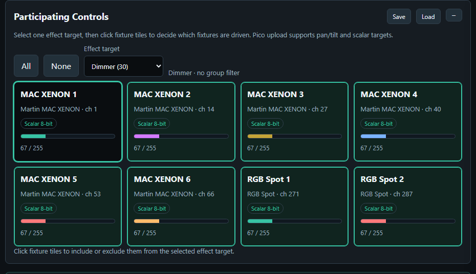
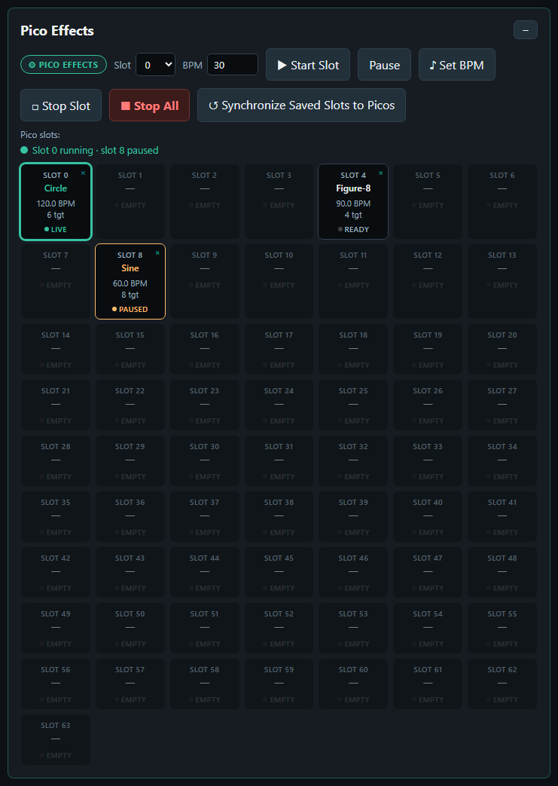
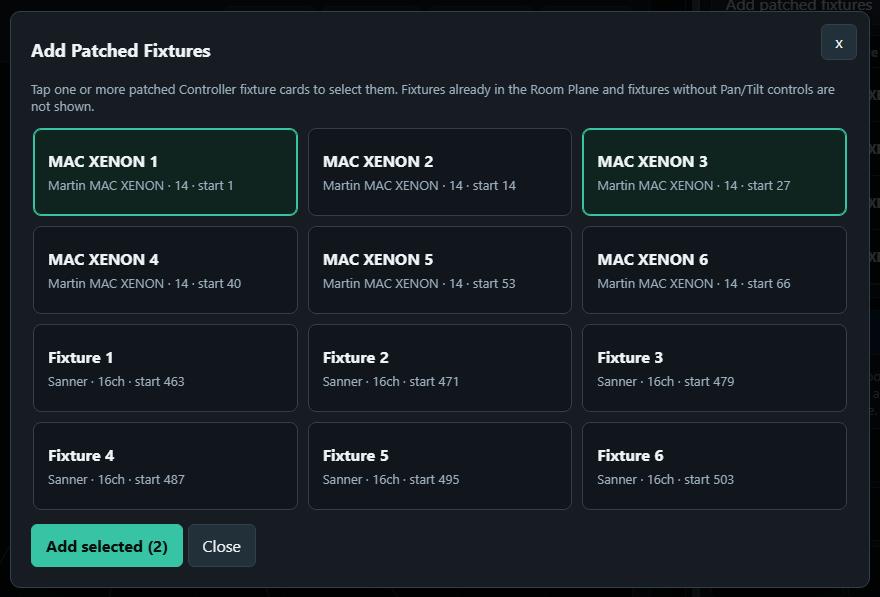
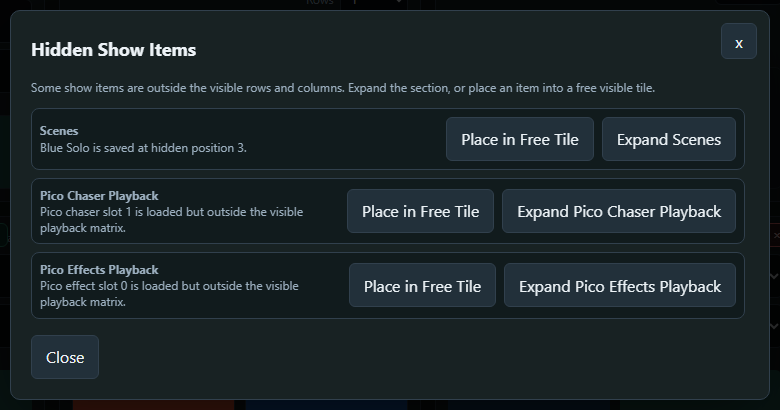
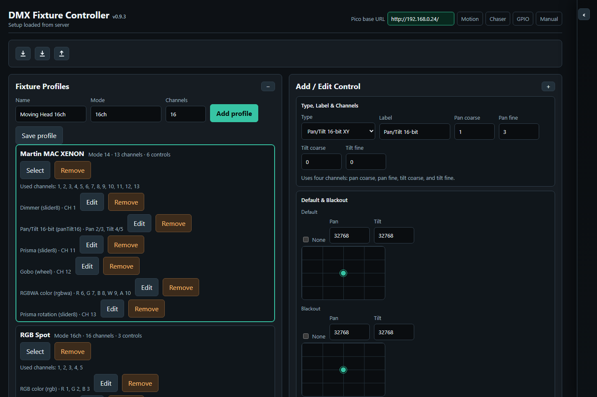
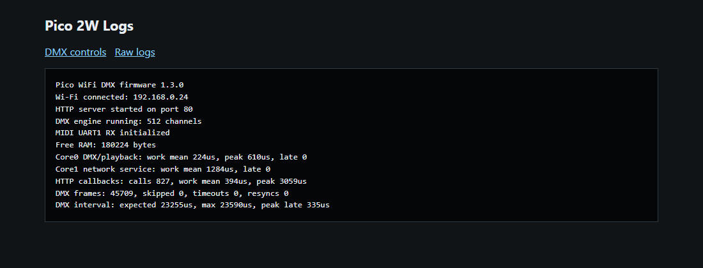
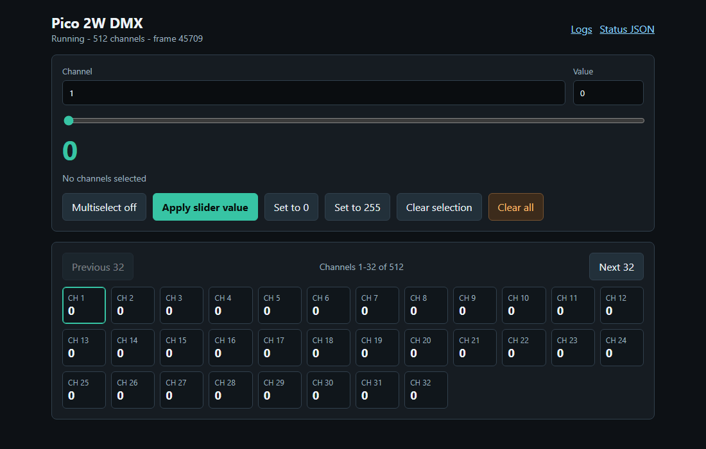

Pico WiFi DMX User Manual
Table of Contents
- Getting Started
- Create and Program a Show
- Run Show
- Testing and Diagnostics
- Advanced Tools and Data
- Troubleshooting and Reference
Getting Started
Introduction
This manual explains how to use the browser-based DMX controller with the Pico firmware. It is written for daily operation: creating fixtures, controlling lights, saving scenes, building chasers, creating effects, and using GPIO buttons or ADC inputs.
The web interface can be installed with the Pico DMX Windows, macOS, or Ubuntu customer package, or hosted from the project's XAMPP development setup.
The HTML manual provides responsive navigation and direct downloads for two PDF variants. Clean PDF is an A4 portrait document without browser navigation controls. PDF with navigation is an A4 landscape document with a persistent, clickable contents sidebar. Both contain the same operating instructions.
With a Windows, macOS, or Ubuntu customer installer, open WiFiPicoDMX from the desktop, Start Menu, or Applications folder. With the default installer port, the local address is:
http://localhost:8090/With XAMPP, the address on the same computer is often:
http://localhost/dmx/From an iPad, phone, or another computer, use the controller computer's LAN address or hostname and the HTTP port chosen during installation. A customer installation that kept port 8090 and enabled Allow access from iPads and PCs on the private network uses an address such as http://192.168.0.50:8090/; a XAMPP development installation may use http://192.168.0.50/dmx/. This computer URL is only the address of the web interface and server-side show storage.
Modal editors and dialogs require an explicit action to close. Clicking the dark area outside a modal does not dismiss it, which prevents accidental loss of edits. Use the modal's Close, Cancel, save, or other action button when you are finished.
The Fixture Controller stores Pico network addresses as named DMX Outputs, with one DMX universe per Pico. Pico URLs are separate from the XAMPP URL: XAMPP serves the pages and stores the show, while each output URL identifies one lighting-controller hardware API.
This applies to every page that can talk to the Pico:
- Fixture Controller routes fixtures to their assigned DMX Outputs and can send to several Picos concurrently.
- GPIO Control stores a separate mapping for each DMX Output and lets the user choose which Pico to configure.
- Pico Performance Test can measure one selected output or every configured Pico sequentially.
- DMX Buffer Monitor lets the user select which Pico/universe to inspect and clear.
- Show Run routes scenes, palettes, Pixel Matrices, Live Controls, room-plane targeting, and Grand/Group Master output to every involved fixture's assigned DMX Output.
- Room Plane routes calibrated target movement, fixture editing, Group Edit, and scene/palette recalls to every involved fixture's assigned DMX Output.
- Autonomous Pico Chaser and Pico Effects playback is output-aware. The browser splits one fleet-wide logical slot into linked payloads for the involved Picos. Logical slot N always uses physical slot N, and upload, start, pause/resume, stop, synchronization, and deletion are coordinated across the Pico fleet.
- The sticky header checks every output used by patched fixtures. Its fleet pill reports how many Picos are online and can be clicked to check again.
The screenshots in this manual are generated by scripts/build_user_manual.ps1 -LocalOnly from the repo-local PHP dev router and the deterministic data in docs/manual-data/. Toolbox screenshots are captured as named page elements, so the manual can be regenerated on another development machine without a local XAMPP path or hand-cropping images. Every screenshot uses the same 1440-pixel reference viewport and is displayed at its proportional width: a small cropped control stays small, while a full-page capture remains full width. This preserves the relative size of the interface throughout the manual.
Windows Customer Installation
- Run
wifi-pico-dmx-<VERSION>-windows-x64.exeas an administrator. - Keep the default installation folder unless company policy requires another location.
- On Controller port, keep the default
8090or enter another port from1024to65535. An upgrade starts with the currently installed port so existing bookmarks continue to work. If the running Pico DMX installation owns that port, setup identifies it and asks to close the application window and server before continuing on the same port. If an unrelated desktop application owns it, setup shows its name and PID and asks before closing it; save that application's work first. Setup never automatically stops an unrelated Windows service, so stop such a service manually or choose another port. - Enable Allow access from iPads and PCs on the private network only when another trusted device needs the controller. This creates a Windows Private-profile firewall rule for the selected TCP port. It does not expose the app through the router or public internet.
- On Pico firmware, choose whether WiFiPicoDMX should open its guided BOOTSEL firmware installer after setup. Choosing No installs only the customer application and does not modify any Pico.
- Finish the installer and select Open WiFiPicoDMX, or use its desktop/Start Menu shortcut later. The shortcut opens the selected port in a dedicated application window rather than a normal browser tab. If firmware flashing was selected, the application opens the firmware guide after the controller starts.
- For an iPad on the same private Wi-Fi, open
http://<controller-pc-address>:<selected-port>/, for examplehttp://192.168.0.50:8090/. The PC and the Pico controllers must be reachable from that Wi-Fi. - Configure the hardware in DMX Outputs, then use Export Show to keep a portable backup in addition to the server copy.
Guided Windows Firmware Installation
The Windows customer installer contains the matching Pico 2 W application
firmware, the separate CYW43 Wi-Fi firmware, a checksum manifest, and Raspberry
Pi picotool. Customers therefore do not need Visual Studio Code or the Pico
SDK to provision or recover a controller.
Open the guide when setup offers it, choose Application > Firmware update…
inside WiFiPicoDMX, or use Firmware Update in the WiFiPicoDMX Start Menu
folder. Then:
- While the Picos are still running on the network, click **Check installed
firmware**. The guide reuses the Controller's Pico discovery service and
lists each detected Pico's address, installed version, bundled version, and
whether its firmware is current, needs an update, or does not report a
version.
- If an update is needed, identify the target Pico from that list. Disconnect
every other Pico from the computer. Flash only one controller at
a time so the wrong unit cannot be selected.
- Unplug the target Pico's USB cable.
- Press and hold BOOTSEL on the Pico.
- While holding BOOTSEL, reconnect the USB cable to the Windows computer.
- Release BOOTSEL when Windows detects the Pico, normally as
RPI-RP2. - Confirm in the guide that all other Picos are disconnected, then click
Check for Pico.
- When the guide reports that one RP2350 Pico is ready, click **Flash
application + Wi-Fi firmware** and approve the final confirmation.
- Keep USB and power connected until the guide reports that application and
Wi-Fi firmware installation completed.
Firmware setup is deliberately opt-in. The Windows software installer never
writes a Pico itself, and the guide validates both bundled UF2 files before
enabling the flash action. Flashing temporarily stops DMX output from the
target controller. The guide cannot be closed while a write is running.
If flashing is interrupted, reconnect the Pico while holding BOOTSEL and
repeat the procedure. BOOTSEL recovery is held in the Pico's read-only ROM, so
an incomplete application installation does not remove this recovery path.
If the guide cannot find the Pico, check the data-capable USB cable, repeat the
BOOTSEL connection steps, and ensure no other Pico is connected.
The application window has normal minimize, maximize, and close controls. Its Windows title bar and frame, menu/dropdown surfaces, status bar, tray menu, and fullscreen buttons use a dark theme that matches the controller page. The firmware updater, exit-choice dialog, and server-shutdown progress window use the same dark title-bar treatment. Press F11 to enter fullscreen and Escape to leave it. Fullscreen also keeps an Exit full screen button and Close application button visible. The tray icon offers Open, Toggle full screen, and Exit…. Opening the shortcut again activates the existing window instead of creating another instance.
Each time the native Windows application starts, it clears only its WebView2 disk cache before loading the controller. The packaged server also requires updated HTML, CSS, and JavaScript to be revalidated. This ensures that layout changes from an upgrade—including full-width utility pages such as GPIO Control and Pico Performance Test—appear immediately. Show data, browser-local settings, and cookies are preserved.
Closing the application window presents three choices. Exit only closes the local WiFiPicoDMX window but keeps the server running, so iPads and other operator devices remain connected. Exit and stop server warns that those devices will disconnect, requests Windows administrator approval, stops only the internally stable PicoDmxController service, waits for it to stop, and then exits. During that wait, a centered progress window displays Stopping the Pico DMX server…, an animated progress bar, and the notice that shutdown can take up to 45 seconds. The window cannot be dismissed while shutdown is in progress. The application checks the service once more at the timeout boundary before it reports that stopping failed. Cancel leaves both the application and server running. Cancelling the Windows UAC prompt also keeps the application open and server running. To use the controller again after stopping the server, start WiFiPicoDMX from its shortcut. The application explains that administrator approval is required, requests that approval, starts the service, and then loads the controller; no approval prompt appears if the service is already running. The service is also configured to start when the application is installed or the computer starts. A new installation stores application binaries below %ProgramFiles%\WiFiPicoDMX; upgrades can retain the former program directory. Show data remains in the upgrade-compatible %ProgramData%\Pico DMX Controller\data location. An upgrade snapshots existing data below the neighboring backups folder before replacing application files. Uninstall removes the app and service but preserves the ProgramData show data deliberately.
Do not forward the selected controller port from the internet router. The LAN option is intended for a trusted private lighting network. An unsigned development installer can display a Windows SmartScreen warning; customer release installers should carry the supplier's Authenticode signature.
macOS Customer Installation
- Open
wifi-pico-dmx-<VERSION>-macos-<ARCH>.pkgand complete the standard macOS installation. - Start WiFiPicoDMX from Applications.
- In the first-run Controller Settings, keep port
8090or enter another unused port from1024to65535. The app refuses a port already used by another program. - Leave Allow access from trusted iPads and PCs disabled for operation only on the Mac. Enable it only for devices on the intended private lighting network.
- For an iPad on the same trusted Wi-Fi, open
http://<mac-address>:<selected-port>/, for examplehttp://192.168.0.50:8090/. - Configure the hardware in DMX Outputs, then use Export Show to keep a portable backup.
The native dark application window provides normal macOS close, resize, reload, and fullscreen behavior. Use WiFiPicoDMX → Controller Settings… to change the port or LAN mode later. Closing or quitting offers Exit only, Exit and stop server, and Cancel. Exit only closes the local application while its per-user LaunchAgent keeps the server available. Exit and stop server unloads that LaunchAgent and disconnects operator devices; starting WiFiPicoDMX again installs and starts it.
Application code lives below /Applications/Pico DMX Controller.app. Shows and fixture data live separately below ~/Library/Application Support/Pico DMX Controller/data; the first launch after an upgrade creates a snapshot below the neighboring backups directory. Removing the app does not remove those customer files. macOS may ask whether the signed bundled server may accept incoming connections when trusted-LAN access is enabled.
Do not forward the selected controller port from the internet router. Direct customer packages should be Developer ID-signed, notarized by Apple, and have their notarization ticket stapled so Gatekeeper can validate them offline.
Ubuntu Customer Installation
- Install
wifi-pico-dmx_<VERSION>_<ARCHITECTURE>.debthrough Ubuntu App Center or withsudo apt install ./wifi-pico-dmx_<VERSION>_amd64.deb. - Start WiFiPicoDMX from Applications or its installer-owned desktop shortcut.
- Use
sudo pico-dmx-config --lanonly when trusted iPads or other PCs need access. The default remains local-only on port8090. The command detects and prints this computer's current DHCP-assigned controller URL; enter that URL in Safari on an iPad connected to the same trusted network. Runpico-dmx-config --statusto detect and display the current URL again after any address change, orsudo pico-dmx-config --localto return to local-only access. - Configure the hardware in DMX Outputs, then use Export Show to keep a portable backup.
Closing WiFiPicoDMX offers Exit only, Exit and stop server, and Cancel. Exit only closes the Electron/Chromium application but leaves the pico-dmx-controller.service server available. Exit and stop server waits until no other local WiFiPicoDMX window is using the service, then stops it. Cancel returns to the application. Use sudo pico-dmx-config --always-on when the server must also start automatically at boot; use sudo pico-dmx-config --application-managed to restore application-managed startup.
Application files remain below /opt/pico-dmx-controller, while customer shows and upgrade snapshots remain below /var/lib/pico-dmx-controller. Removing the package deliberately preserves that data.
Choose a Workflow
| Use | Page | Purpose |
|---|---|---|
| Set up and program | Fixture Controller | Configure outputs and fixtures, patch channels, build groups, and create scenes and palettes |
| Set up and program | Chaser | Build step-based chases and load them into Pico playback slots |
| Set up and program | Effects | Build continuous movement or scalar effects and load them into Pico playback slots |
| Set up and program | GPIO Control | Map Pico GPIO buttons and ADC inputs to show actions |
| Run the show | Show Run | Recall programmed show items from an operator-focused page without changing their setup |
| Run the show | MIDI Emulator | Test Show Run MIDI mappings without a physical MIDI controller |
| Test and diagnose | Pico Performance Test | Check connectivity, firmware, memory, timing, and playback stress behavior |
| Test and diagnose | DMX Buffer Monitor | Inspect all 512 live-output or base-buffer channel values |
| Set up and program | Room Plane | Calibrate moving lights to shared positions on a measured room plane |
Create and Program a Show
Use these pages while building and programming the show. Start with Fixture Controller, create reusable scenes and groups, prepare Chaser, Effects, and GPIO operation, and calibrate moving lights with Room Plane.
Fixture Controller
The Fixture Controller is the central programming page. Use it first when setting up a new show or fixture set. This overview keeps every section and toolbox expanded while limiting the repeated Control Surface fixture tiles to a representative set so the whole page remains readable.

What You Can Do on Fixture Controller
Use Fixture Controller to configure Pico outputs, maintain fixture profiles, patch fixtures, control their live values, and create reusable groups, scenes, palettes, fan-outs, and Pixel Matrices.
Fixture Controller Tools and Toolboxes
The Controller combines the main Show, Fixture Library, Patch Fixtures, and Control Surface cards with a reorderable toolbox rail. Use the main cards to manage the show, profiles, patch, and live fixture tiles. Use the DMX Outputs, Fixtures, Groups, Scenes, Palettes, Fan Out, and Pixel Matrices toolboxes for reusable setup and batch control; the detailed toolbox behavior is documented later in this chapter.
Configure Picos and Read Header Status
- Open the controller URL: normally
http://localhost:8090/for a Windows, macOS, or Ubuntu customer installation using the default port,http://localhost:<selected-port>/when it was changed, or the configured XAMPP URL in a development environment. - Click DMX Outputs, then use Find Picos or enter each Pico URL manually. Discovery records the Pico's stable unique-board identity so a later DHCP address change does not require rebuilding the show.
- Give every output a descriptive name and unique universe, then click Done.
- Read the fleet pill in the sticky header. 2/2 Picos online in green means all used outputs answered; amber means only some answered; red means none answered. Click the pill to refresh immediately. The Controller keeps DMX Outputs anchored at the right edge of this row while the fleet check changes state; on a narrow window, the fleet text is shortened with an ellipsis instead of wrapping or shifting the button.
- The application checks again automatically. A tooltip lists every used output, its universe, and its online/offline result.
- The navigation links use their own wrapping header row. They remain visible when the Toolboxes sidebar is widened—even to roughly two thirds of the page—so Controller, Show, Chaser, Effects, GPIO, Plane, and Manual remain quickly reachable.
- Fixture setup changes are autosaved to the controller server. Use Export Show before large changes when you want an extra backup of the complete show setup.
DMX Outputs and Multiple Picos

Open DMX Outputs in the Controller header when the show needs more than one 512-channel DMX universe. Each output has:
- A descriptive name, such as
Front truss PicoorPixel matrix Pico - A unique universe number
- One controller URL for that Pico
- A stable discovered-device ID when it was added through network discovery
Click Find Picos to listen for every Pico WiFi DMX discovery beacon on the LAN. The result list shows every discovered controller with its advertised name and IP address. The beacon also carries the stable unique-board ID obtained through the Pico SDK; the show stores it as the DMX Output's device identity. This identity remains the same when the DHCP server gives the Pico another IP address.
Click Add beside each Pico that belongs to a new show. The first discovered Pico fills an unused empty output; additional devices receive the next free universe number. A Pico whose device ID or normalized URL already belongs to an output is marked Added and cannot be added again.
If discovery recognizes a saved unique-board ID at a different URL, it automatically replaces the URL displayed on that existing output and reports how many saved Pico addresses were updated. Click Done to validate and autosave the refreshed addresses. Only the Pico URL changes: the output ID, descriptive name, universe, fixture assignments, GPIO configuration, chases, effects, and other show programming remain attached to the same logical output. An unknown Pico is never assigned automatically; it remains available through Add so a different physical controller cannot silently take over a programmed universe.

Names, universe numbers, and URLs remain editable after discovery. Click Add output for a controller that must be entered manually. Every output must have a unique universe number. Click Done to validate the list, refresh the shared header health immediately, and autosave the show.
The top of the modal also shows Open this controller on an iPad. It asks the server for the host computer's LAN IPv4 addresses and builds clickable URLs with the current protocol, port, and application path. Open one of those addresses on an iPad connected to the same trusted network. If no address appears, check the host computer's network connection and the installer/firewall LAN-access setting.
Select the wanted DMX output while patching a fixture. Address conflicts are checked only inside that output, so Universe 1 channel 1 and Universe 2 channel 1 are independent and may both be used. Existing fixture cards in Patch Fixtures also have a DMX output dropdown. Reassigning a fixture is refused if its address range would overlap another fixture on the destination output. After an accepted reassignment, the Controller immediately sends all current values for that fixture to its new Pico/universe; the status line confirms the number of sent channels or reports a connection error.
The Controller routes single controls, fixture Default/Blackout/Highlight recalls, Group Edit, scenes, palettes, Fan Out, room-plane targeting, and clear-all operations to their fixtures' assigned outputs. Multi-fixture batches are separated by output and sent to the involved Picos concurrently. Patch CSV includes the output name and universe for every channel. Complete show export/import preserves the output definitions and fixture assignments; the current show format is version 5 so older controller software refuses unsupported multi-output and pixel-matrix data instead of silently losing it.
Show Run and Room Plane use shared fixture-aware batching. Show Run scenes, palettes, Pixel Matrices, Live Controls, room-plane targeting, and Grand/Group Masters follow each fixture's assigned output. Room Plane calibrated targeting, fixture editing, Group Edit, and scene/palette recalls do the same. When one action involves several outputs, the browser sends one channel batch to each involved Pico concurrently. GPIO Control, DMX Buffer Monitor, and Pico Performance Test provide their own output selectors.
Pico Chaser and Pico Effects uploads are also output-aware. When the participating fixtures use several outputs, the page creates one logical playback, splits its channel payload by output, and loads physical slot N on every involved Pico for logical slot N. Play, pause, resume, speed/BPM, stop, synchronization, and delete operate the linked members together. Commands are dispatched concurrently over HTTP; this keeps normal playback starts close together but is not a firmware-level synchronized start guarantee.
Pixel Matrices

Use the Pixel Matrices toolbox on the Controller page to convert a still image into fixture colors. The toolbox can drive separate RGB-type fixtures, individual pixels inside a native RGB pixel matrix fixture control, or a mixture spread across multiple DMX outputs. Saved matrices use the same tile layout as Scenes and Palettes: click a filled tile to clear the previous Controller fixture/group/scene selection, select exactly the valid fixtures referenced by that matrix, stop autonomous Chaser/Effects playback on every involved output, and immediately send the complete picture to DMX. If those fixtures exactly match a saved Group, independent of fixture order, its Group tile is selected too; partial and superset Groups are not selected. Use the matrix pencil to edit it or its x to delete it. Click an empty + tile to create a matrix in that position.
Enable Toolboxes Edit to reveal the Pixel Matrices Cols and Rows dropdowns and automatically enable tile movement. Drag a filled matrix to another slot on desktop, or tap its source and destination slots on a touch screen. Moving onto a filled slot swaps the two matrices; moving onto an empty slot leaves the other matrices unchanged. The layout and matrix positions autosave with the fixture setup.
Before creating the visual matrix:
- Add or import fixture profiles with RGB, RGBW, RGBWA, CMY, CMYK, or native RGB matrix controls.
- Patch every physical fixture to the correct DMX output, universe, and address.
- Arrange the compatible fixture color controls in the intended row-major order if you want to use Auto Map.

To create and test a matrix:
- Open Pixel Matrices and click an empty
+tile. - The modal starts with Tile appearance, matching the other saved-tile editors. Choose the toolbox tile background, then optionally upload an icon or draw one on its canvas. No icon clears it and Default background returns to the matrix's first pixel color. Tile appearance is reused on Controller, Chaser, and Show Run but remains independent from the matrix's DMX pixel colors.
- Enter a name and the logical Width and Height. Matrices may contain up to 64×64 pixels. The icon canvas immediately overlays the corresponding grid. Contain shows the letterboxed image area, Cover shows the source crop, and Stretch shows the full distorted image. Drawing follows the displayed transform, while the grid lines remain guides and are never stored in the icon. Click Use icon as matrix when you want to composite that artwork over its background, resample it with the selected Fit and Brightness, write it into the pixel cells, and preview it on DMX.
- The matrix editor starts in color-paint mode. Choose Pixel color, then click one or more matrix cells to paint them. Every painted color previews immediately through the mapped fixtures; there is no separate Apply button.
- Click Edit Mapping when you need to change fixture assignments. The active button reveals Mapping target, Auto Map, and Clear Mapping. Auto Map assigns compatible fixture controls from the top-left pixel across each row. If the physical order differs, select the first Mapping target and click its wanted pixel cell. The dropdown automatically advances to the next unused compatible fixture target, so continue clicking the physical pixel positions in sequence without reopening the dropdown each time. After the last available target it returns to Unmapped. Selecting the same target on another cell moves that target rather than duplicating it. Choose Unmapped and click a cell to clear only that assignment, or use Clear Mapping for the whole matrix.
- Choose Contain, Cover, or Stretch, set a brightness limit, and select a PNG, JPEG, WebP, or GIF image when the matrix should use a separate still image instead of its tile icon. Conversion happens locally in the browser and previews immediately. The saved show stores the resulting pixel colors and image filename, not the original image file.
- Click Save to store the definition. Use the matrix tile
xoutside the modal when you want to delete the definition.
Clear Image makes every logical pixel black without changing its mapping. Saved matrices use the normal 800 ms fixture-setup autosave, are included in Export Show, and are restored by Import Show. The first implementation handles one converted still frame; animation and video playback are not yet included.
For tall or wide matrices on an iPad, scroll anywhere in the modal content to reach every pixel row or column. The editor uses one touch scroll area rather than a second vertical scroller inside the matrix. Save and Close remain fixed below the scrolling content, so they stay available after editing the final row.
Fixture Library

The Fixture Library panel imports fixture profiles from an export of the original Open Fixture Library project. Use it when you want to start from an existing fixture definition instead of building every channel by hand. Selecting a fixture shows Fixture Information when OFL provides it: authors, creation/update dates, dimensions, weight, power, DMX connector, light source, beam angle, and links to the OFL entry, manual, product page, or video. External information links open in a new tab and only HTTP/HTTPS links are accepted.
The library loads automatically when the controller page opens. While it is loading, the search field is disabled and the panel shows a loading status. If loading fails, the panel shows a Retry button.
Command buttons that save, import, export, or update setup data briefly show their result on the button itself. For example, Update Library changes to Comparing... while its merge dialog is open and then Updated when the chosen operation is complete.
Use Export Library to download the currently loaded fixture catalog as the compressed pico_dmx_fixture_library.zip; it contains pico_dmx_fixture_library.json. Use Import Library to replace the active catalog with that ZIP or an older uncompressed library JSON file. The server creates and maintains one active catalog rather than hiding updates behind separate standard and custom layers.
Use Update from OFL to refresh the active catalog from the complete OFL data bundled with the installed application. A timestamped backup is created before the update. Current OFL fixture facts and newly available fixtures are applied while user-added inline wheel/gobo images, explicitly user-modified modes, and fixtures created in the Controller are preserved. Because a user-modified mode is retained as a complete unit, an OFL correction does not silently replace its custom channel or wheel mapping; merge the desired library definition into the show or edit that preserved mode when you want to adopt the correction without losing its custom data.
- Type part of the manufacturer, fixture name, category, or mode in Search manufacturer or fixture.
- Select the matching fixture from the results list.
- Choose the desired DMX mode from the Mode dropdown.
- Review the converted controls and channel count in the preview.
- Click Import profile.
The imported fixture is added to Fixture Profiles and becomes the active profile. You can edit it like any manually created profile, including changing labels, defaults, blackout values, and wheel options. The imported profile remembers its library fixture key and mode, so later updates still find the correct reusable definition if you rename the show profile.
The converter keeps the richer Open Fixture Library data where the controller can use it:
- Pan/tilt channels are grouped as 8-bit or 16-bit pan/tilt controls when matching channels are present.
- Scalar coarse/fine pairs such as dimmer, focus, zoom, iris, and color temperature become one 16-bit control instead of separate coarse and fine sliders.
- RGB, RGBW, and RGBWA color intensity channels are grouped into color controls.
- Explicit OFL defaults are imported and scaled to the actual 8-bit or 16-bit control resolution.
- Compatible rectangular matrices using sequential RGB channels per pixel become native RGB matrix controls. Unsupported arrangements are left uncollapsed rather than mapped incorrectly.
- Wheel slots keep their OFL names, colors, and offline SVG/PNG images when the library provides them.
- Wheel DMX ranges are preserved. Normal slot buttons send the midpoint of the range.
- Adjustable wheel functions such as
WheelShake,WheelRotation, andWheelSlotRotationshow a bounded speed/range slider after you select that option. - Segmented shutter/strobe, program, effect, prism, and maintenance channels become named option controls. Their buttons send a value safely inside the selected DMX range.
- Continuous capabilities retain their DMX range and speed information so the UI can provide a bounded control where the capability supports it.
- Explicit OFL highlight values enable a temporary Highlight / Restore action on the patched fixture card.
- Unsupported or ambiguous channels are kept as simple 8-bit sliders so no channel is silently lost.
Create a Fixture Profile

A fixture profile describes the DMX personality of one fixture type. Use this section when the wanted fixture is not available in the Fixture Library, or when you want to fine-tune an imported profile.
- Open Fixture Profiles.
- Enter a profile name, mode name, and channel count. These fields update the selected profile automatically.
- Click Add profile.
- Select the profile.
- In Add / Edit Control, choose the control type, label, and channel mapping.
- Click Configure control to open the control details modal, then set default/blackout values and type-specific options.
- Click Add control or Save control in the modal.
Each control stores its own DMX channel mapping. For example, a moving head can have:
- Dimmer on channel 1
- Pan/Tilt 16-bit on channels 2/3 and 4/5
- RGBWA color on channels 6-10
- Gobo wheel on channel 12
Simple 8-bit and 16-bit sliders only need channel mapping plus optional Default and Blackout values in the modal. Color controls add a color picker and any extra white, amber, or key channels. Wheel / indexed controls add the wheel editor and guided wheel editor so DMX ranges, colors, icons, and OFL-style function metadata can be entered without writing the raw text by hand.
In the Guided Wheel Editor, Add option appends a row; the row x removes it. Set its name, From/To range, function type, optional slot and speed labels, color, and icon. Icon uploads an image, while Draw opens the icon canvas; use Clear drawing and Save icon there. Apply options validates the rows and returns them to Control Details. The control itself is not stored until Add control or Save control is used. Cancel edit leaves the selected control unchanged and returns the compact editor to add mode.
Pan/Tilt controls also have fixture-profile mapping options in the control details modal:
- Reverse Pan DMX sends the logical Pan value as
max - value. - Reverse Tilt DMX sends the logical Tilt value as
max - value. - Swap Pan/Tilt axes sends logical Pan through the fixture's Tilt channels and logical Tilt through the fixture's Pan channels.
These options belong to the fixture profile, so every patched fixture using that profile follows the same mapping. The controller, chaser, and browser effect output keep showing logical Pan/Tilt values; only the physical DMX bytes are changed. This means scenes, palettes, chases, and effect centers remain readable even when a fixture is mounted backwards or rotated.
To change an existing control, click Edit in the Fixture Profiles list. The compact Add / Edit Control fields load the selected type, label, and channels, and the control details modal opens automatically. After editing, click Save control in the modal. Saving an existing control immediately resends the current live value for every patched fixture using that profile/control to its assigned DMX Output, so Pan/Tilt reverse or axis-swap changes are applied to the correct universe right away. The Fixture Profiles collapse button hides the profile list and the compact Add / Edit Control box together.
Click Update Library to compare the selected show profile with its linked reusable fixture mode. The Merge Fixture Profile dialog shows both names, modes, channel counts, control counts, and a short difference summary. Choose Use show in library to update the reusable mode from the show, or choose Use library in show to refresh the existing show profile without adding a duplicate profile. A profile that has no library match can only be added with Use show in library.
The merge keeps data that belongs to only one side. Fixture Information, OFL capabilities, warnings, categories, unrelated modes, and richer wheel details remain in the library. Show profile/control IDs and Pan/Tilt reverse or axis-swap settings remain in the show because they describe patch references and how fixtures are mounted in this show. When Use show in library is selected, matching reusable controls retain their library IDs and metadata while editable names, channel mappings, defaults, and blackout values come from the show.
Default and Blackout Values
Each control can store a Default value and a Blackout value.
Default values are useful for a normal starting look, for example:
- Dimmer open
- Pan/Tilt centered
- RGB white
- Gobo open
Blackout values are useful for quickly shutting down output, for example:
- Dimmer 0
- RGB black
- White and amber 0
- Pan/Tilt at a safe position if needed
For RGB, RGBW, and RGBWA controls, use the color picker for RGB. White and amber channels are edited separately when the fixture type has them.
Patch Fixtures
Patch fixtures after the profile is ready.
- Open Patch Fixtures.
- Enter a fixture name.
- Select the fixture profile.
- Select the DMX output that physically drives the fixture.
- Enter the DMX start address within that output's 512-channel universe.
- Set Count to the number of fixtures you want to patch.
- Click Patch fixture.
Use Next free to find the next available address on the selected output. The same address can be used on another output.
When Count is greater than 1, the controller creates a numbered run of fixtures. For example, name RGB Spot with count 10 creates RGB Spot 1 through RGB Spot 10. The first fixture uses the start address you entered. The following fixtures are spaced by the channel count of the selected fixture profile.
After a multi-fixture patch, the controller asks whether to create a Saved Group for the newly patched fixtures. The suggested group name is the patch name. Press Cancel to skip group creation, or enter a name to save the new fixtures as a group.
The patched fixture list is shown as rows of compact cards. Each card shows its output, universe, profile, and channel range and provides a DMX output dropdown for repatching the fixture to another Pico. The controller checks the destination universe for an overlapping address range before accepting the move. When accepted, it saves the new assignment and immediately transmits the fixture's complete current state to the destination output, so the fixture responds without requiring another slider movement or recall. Each row represents one consecutive run of the same fixture profile, so separate patch runs remain visually separate even when they use the same profile.
Live Fixture Control

The Control Surface shows one card per patched fixture.
Each fixture card contains the controls from its profile:
- Sliders for dimmer and simple channels
- XY pads for absolute pan/tilt positioning
- Relative pan/tilt nudge controls for small position corrections
- Color pickers and swatches for color controls
- Wheel buttons, a DMX value slider, and a direct numeric DMX value field for indexed wheel values
- Coarse/fine relative nudges for 16-bit channels
- A pixel grid, Paint color, Fill all, and Clear for a native RGB pixel-matrix control
For pan/tilt controls, drag inside the XY pad when you want to move directly to an absolute position. Use Pan coarse relative, Pan fine relative, Tilt coarse relative, and Tilt fine relative when you want to adjust from the current position without jumping to a new absolute value. The number field in each relative row sets how many DMX increments the next - or + click will move. The fine relative buttons move the combined 16-bit value by that many steps, including byte borrow and carry: for example 256 - 1 becomes coarse 0, fine 255, and 255 + 1 becomes coarse 1, fine 0. The value is clamped at the valid DMX range, so it cannot go below 0 or above 65535. If the fixture profile reverses or swaps Pan/Tilt, the XY pad and relative controls still show logical Pan/Tilt movement while the DMX output is mapped for the physical fixture.
Center Pan/Tilt writes the logical midpoint on both axes in one action. It follows the profile's reverse/swap mapping when the bytes are sent.
For a native RGB pixel-matrix control, choose Paint color and click individual pixels, use Fill all to apply that color to the complete control, or use Clear to set every pixel to black. These are direct live controls for one patched fixture; the separate Pixel Matrices toolbox stores reusable pictures and mappings across fixtures.
Wheel / indexed controls require unique DMX option values. If two wheel options use the same DMX value, the control details modal refuses to save the control. This prevents ambiguous wheel buttons where the UI could not know which option should be highlighted after recall or chase editing. On the Controller page and in Controller Group Edit, wheel controls can be changed with the option buttons, the DMX value slider, or the direct numeric DMX value field.
Use Guided wheel editor when creating or correcting indexed controls such as color wheels, gobo wheels, and shutter/strobe ranges. The guided table is the normal place to edit wheel rows, including option name, DMX range start/end, function type, slot number, speed labels, background color, uploaded icon, or drawn icon. A wheel option button can show a color swatch, an icon, or an icon on top of the chosen color. This is the recommended way to define rich functions such as WheelShake, WheelRotation, and ShutterStrobe without memorizing the raw text syntax.
The Wheel options text box remains editable for advanced use and accepts one option per line. Basic lines use Name=DMX or Name=start-end, for example Open=0-15. Richer OFL-style metadata can be added after pipe characters. Use kind=WheelSlot with slot=2 for a named slot, kind=WheelShake with shake=slow-fast for a bounded shake speed range, kind=WheelRotation with speed=slow CW-fast CW for a bounded rotation range, and kind=ShutterStrobe with speed=slow-fast for a bounded strobe range. For example: Gobo 2 shake=125-140|kind=WheelShake|slot=2|shake=slow-fast.
Fixture profiles imported from the Fixture Library keep richer Open Fixture Library wheel information when it is available. Wheel slots use their real names and colors, for example White, Red, or Gobo 2. OFL can describe a split position through a WheelSlot capability and DMX range together with two direct colors or references to the adjacent wheel slots. The converter retains both colors and the range. Selecting that position shows a Split position slider so you can move the mechanical wheel between both colors; it does not claim an exact optical mixing percentage. Single-color WheelSlot positions remain fixed.
If an OFL wheel option covers a DMX range, its button initially sends the middle of that range so the value is safely inside the fixture function. Adjustable ranges such as split-color WheelSlot, WheelShake, WheelRotation, WheelSlotRotation, and ShutterStrobe then show the appropriate bounded slider. Genuine wheel rotation remains labeled Rotation speed. For example, the Fun Generation PicoSpot 20 LED in 11-channel mode exposes its split colors as Split position controls and imports Gobo 2 shake as a wheel button with a Shake speed slider limited to its real DMX range.

Use Default or Blackout on a fixture card to recall the stored values for that fixture only. A fixture-card recall takes manual control of the DMX output: it stops Pico Chaser and Pico Motion playback first, then sends the configured values so active playback cannot immediately overwrite the recalled look.
If an imported OFL profile provides explicit highlight values, its fixture card also shows Highlight. Click it to stop Pico playback, remember the current look, and send only the declared highlight values for fixture identification or focusing. The same button changes to Restore. The temporary highlight is not autosaved; click Restore to send back the exact remembered values and return to normal editing.
Use Cols in the Control Surface header to choose Auto or a preferred count from 1 to 4. Auto keeps the spacious responsive card width. A fixed preference can show three or four fixtures across on a wide desktop, but the Controller automatically reduces the effective count when the Toolboxes rail, available viewport width, or iPad layout would make sliders, buttons, readouts, or XY pads too narrow. The saved preference is stored in server UI state and is included in complete setup export/import.
Use the small button in the Control Surface header to collapse all visible fixture cards or expand them again. The button affects only the fixtures currently shown by the active group, scene, or palette filter. A collapsed card keeps its Highlight/Restore, Default, Blackout, and expand controls visible. On iPad those controls retain full-size touch targets and the card header grows when necessary, preventing the bottom edge of a button from being cropped.
Click a fixture card header or empty card area to include or exclude that fixture for group editing. The selected card uses the same accent outline style as other selectable tiles in the app. Clicking sliders, color controls, wheel buttons, Highlight/Restore, Default, Blackout, or collapse controls does not change fixture selection.
After a hard page reload, no fixture cards are selected automatically. This keeps Group Edit disabled until you deliberately choose the fixtures you want to edit.
Use Select All in the group bar above the control surface when you want to select every patched fixture. Use Deselect all to clear the current manual selection. When you manually select fixture cards, the control surface stays visible so you can keep building or adjusting the selection. Saved Groups can also be selected from the Groups toolbox to filter the control surface.
Fixture Controller Toolboxes
The Fixture Controller uses the shared right-side Toolboxes sidebar.

Show is the first Controller card and the project-level home for show setup. Edit the Show name field directly; changes use the normal 800 ms server autosave. Its top action bar displays Export Show, Import Show, Export Library, and Import Library together; the nested Fixture Library, Fixture Profiles, and Patch Fixtures cards follow below. Collapse Show to hide all of those setup tools at once. When Show is expanded again, each nested card returns with its own previous expanded or collapsed state. New Show confirms the reset and then asks for the required show name before clearing fixtures, live values, groups, scenes, palettes, chases, effects, saved room planes, GPIO mappings, Pico playback slots, Show Run layout, and saved toolbox layout while keeping the reusable fixture library. Export Show and Import Show handle the complete show backup, including every named DMX Output/universe, each fixture's output assignment, and the independent GPIO/ADC mapping for every Pico. Export Library and Import Library independently handle the complete reusable catalog. Patch CSV exports the patched channel table.
Groups stores fixture groups and shares the selected group filter with other toolbox pages. Use it to select fixtures quickly, edit group tile names and visuals from the small pencil icon, delete groups from the small x, import/export group JSON, reorder group tiles while Toolboxes Edit is active, and open Group Edit when the current scope supports it.

Scenes stores complete looks for the current working scope. Empty slots save, filled slots recall, the small x deletes, Toolboxes Edit enables tile reordering, and the small top-left pencil icon opens Edit Tile for that slot's name, background, and optional drawing/upload.

Palettes stores reusable value fragments such as positions, colors, gobos, dimmer looks, or Fan Out results. Palette recall applies only the stored controls and leaves unrelated values untouched. Toolboxes Edit reorders palette tiles without recalling them.
Planes recalls room planes saved on the Room Plane page. Clicking a filled Plane tile opens the virtual room target modal and immediately recalls the Plane's fixture scope: every fixture saved in the Plane that still exists in the current Controller patch becomes selected, while an unrelated saved-group selection is cleared. Fixtures saved in the Plane but no longer patched are ignored. The modal applies the saved target's calibrated Pan/Tilt values to that recalled selection and routes them live to the fixtures' assigned DMX Outputs. Drag or click the red target, use the X/Y coarse and fine nudge controls, or pinch with two fingers to zoom the plot without moving the target. Closing the modal does not change the saved Plane definition.
Toolboxes Edit automatically enables tile movement in Groups, Scenes, Palettes, and Planes while showing their Cols and Rows layout dropdowns. Tap either dropdown to choose the matrix size with the native iPad picker. Drag a filled tile to a new position. While dragging, the source tile gets the same accent outline used when moving toolboxes, and the target position shows an accent insertion line. On touch screens, tap the filled source tile and then tap the destination. Dropping onto an empty slot moves the tile there; dropping onto another filled tile swaps the two slots. Click Done to return the tiles to their normal recall/use behavior. Groups use the same tile-slot behavior as Scenes and Palettes; the fixture order stored inside a group is not changed by moving the group tile.

Fan Out shapes the currently selected fixtures or groups by spreading one compatible control through the selected order. It is documented in more detail below because its output can be saved as scenes or palettes.
Fan Out Toolbox
The Fixture Controller includes a Fan Out toolbox in the shared Toolboxes sidebar. It shapes the current controller values for the selected group or selected fixture cards, so the result can immediately be saved as a scene.
- Select one or more Saved Groups, or select fixture cards manually.
- In Fan Out, choose the control to shape, for example Dimmer, Pan, Tilt, or another compatible single-value control.
- Click Snapshot to use the current controller values as the fan base.
- Adjust Spread, or use Start to end mode with From/To offsets.
- In Symmetric spread mode,
0is the center of the slider. Positive and negative Spread values run the same shape in opposite directions through the selected fixture order. - The Control Surface updates continuously while you change the fan values.
- The affected fixture controls are highlighted in the Control Surface.
- Save the resulting look with the Scene Toolbox if you want to keep the actual DMX look.
In Symmetric spread mode, the Spread slider is centered at 0 and can move into positive or negative values. Positive Spread sends the fan in one direction through the selected fixture order; negative Spread sends it in the opposite direction. The Spread step field and the - / + buttons provide fine adjustment of the signed Spread value. Set the step size to the number of DMX increments you want to add or subtract, then click - or +. The buttons clamp at the valid signed range for the selected Fan Out control. Start to end mode hides the Spread nudge row because that mode is edited directly with the From and To number fields.
The current Fan Out working state is autosaved to the XAMPP server UI-state file. This includes the selected Fan Out control, mode, signed Spread, From/To offsets, and Spread step size, so the toolbox can restore the last working shape after a reload. Saved Fan Out presets are separate: Save stores a named recipe with its group/manual fixture scope, Recall asks which named recipe to load and immediately reapplies it, and saving another preset with the same name replaces the old recipe. Snapshot refreshes the base values, Apply explicitly reapplies the displayed calculation, and Clear resets the shaping controls to neutral without recalling the pre-fan DMX look.
The Fan Out toolbox only shows controls that are available on every fixture in the selected set. For pan/tilt controls, Pan and Tilt appear as separate fan targets. Applying a fan writes the calculated values into the controller just like moving the controls by hand, separates them by fixture assignment, and sends them to every involved DMX Output.
Fan Out calculates from a stored base value for each fixture, control, and axis. Snapshot stores those base values. In Symmetric spread, the spread is added around the base values:
final value = snapshotted base value + spread offsetFor example, with five fixtures and a spread of 100, the offsets are -50, -25, 0, +25, and +50. If every fixture has a base value of 128, the result is 78, 103, 128, 153, and 178. With a spread of -100, the same offsets run in the opposite direction. If the fixtures have different base values, each fixture still keeps its own base as the starting point.
The offset is assigned by fixture position in the current Fan Out order:
fixture position = 0 ... fixture count - 1
offset position = fixture position / (fixture count - 1)In Symmetric spread, the first fixture receives -spread / 2, the last fixture receives +spread / 2, and fixtures between them are spaced evenly. In Start to end mode, the first fixture receives the From offset, the last fixture receives the To offset, and fixtures between them are spaced evenly.
Fan Out order is important:
- If one or more saved groups are selected, the Controller uses the fixture order stored inside those groups. When several groups are selected, the groups are read in selected group order and duplicate fixtures are skipped after their first appearance.
- If no saved group is selected, the Controller uses the manual fixture selection order from the Control Surface.
- Negative Spread reverses the symmetric fan direction. It does not change the saved group, patch order, or fixture selection.
For a physical left-to-right fan, the saved group fixture order must match the physical fixture order. If a group was saved in a different order, the Fan Out math is still correct, but the visible stage result can look crossed or random.
Use Save in the Fan Out toolbox to store the fan setup itself: selected group or fixture IDs, selected control, mode, spread, and From/To offsets. Use Recall to restore that fan setup later. Recalling a Fan Out preset reapplies the fan to the controller values; it does not create a scene by itself. Use the Scene Toolbox when you want to store the resulting lighting look.
Palette Toolbox
The Fixture Controller also includes a Palettes toolbox. Palettes are reusable value fragments, while scenes are complete looks for their saved scope.
Use palettes for building blocks such as:
- Positions
- Colors
- Gobos
- Dimmer levels
- Fan Out results that you want to reuse as an overlay
The small top-left pencil icon on a filled palette slot opens Edit Tile for that slot. Use Name to rename the tile text, and use the visual controls for a background color plus an optional drawn/uploaded visual on top. The visual is independent from the palette scope. The drawing canvas uses the selected background color, and the brush automatically switches between a light and dark stroke for readable contrast. Use Default background to restore the standard slot color, or No icon to keep only the colored button. Scope still decides which DMX values are saved; the name and visual are readable labels shown in the palette slot grid and stored inside the palette JSON.

Palette save rules:
- If Fan Out is active, the palette saves only the Fan Out affected controls.
- If Fan Out is not active and fixtures are selected, the palette saves only the selected Scope for those fixtures.
- Position saves pan/tilt or position controls.
- Color saves RGB, RGBW, RGBWA, CMY, CMYK, matrix RGB, and common fixture-library color channels such as red, green, blue, cyan, magenta, yellow, white, amber, UV, lime, hue, saturation, CCT, CTO, or tint.
- Dimmer saves controls labeled as dimmer, dimming, or intensity.
- Shutter / Strobe saves shutter, strobe, and flash controls.
- Gobo saves gobo wheels and gobo rotation/index controls.
- Prism saves prism and prism rotation controls.
- Optics saves focus, zoom, iris, frost, beam, diffuser, or lens controls.
- Programs / Effects saves program, macro, effect, auto show, chase, pattern, scene, or preset controls.
- All controls saves every control on the selected fixtures and should be used deliberately.
- If nothing is selected, the palette is not saved; select fixtures or apply Fan Out first.
When saving a Gobo palette, the Controller can fill the palette tile visual from the selected fixture's gobo wheel metadata. If all selected fixtures resolve to the same gobo image or color, that shared visual is used automatically. If selected fixtures use different gobos, the current source fixture supplies the tile visual. If no gobo visual metadata exists, the palette uses the normal default visual.
Palette recall rules:
- Recalling a palette applies only the stored values.
- Unrelated controller values are left unchanged.
- The active group filter is cleared.
- The Control Surface is filtered to the fixtures involved in the palette.
- Only the recalled palette controls are sent, routed to the DMX Outputs assigned to the affected fixtures.
Filled palette slots recall palettes. Merging is done with the separate Merge button so recall and edit actions stay distinct.
Use Merge when you have a current fixture selection or active Fan Out result:
- The controller opens a palette matrix picker, so you choose the saved palette tile visually instead of typing a slot number.
- Empty slots are shown for orientation but cannot be selected as merge targets.
- If the current scope matches the saved palette scope, the values are merged and the palette keeps its scope.
- This allows one Color palette to contain RGB controls, color wheels, and RGBWA controls from different fixture types while still remaining a Color palette.
- If the current scope differs from the saved palette scope, the controller asks whether to change the saved palette to All controls and merge.
- If you cancel a merge prompt, the palette is not changed.
Use Toolboxes Edit when you want to reorder palette tiles. The same interaction is also available in the Groups and Scenes toolboxes:
- Click Edit in the sticky Toolboxes header to enable tile movement.
- Drag a filled palette tile to an empty slot to move it there; the tile shows the same drag outline and insertion marker used for moving toolboxes.
- Drag a filled palette tile onto another filled palette tile to swap their positions.
- On touch screens, tap a filled tile to select it, then tap the destination slot.
- While Toolboxes Edit is active, clicking a palette tile does not recall or save it.
- Click Done in the Toolboxes header when you are done organizing the palette grid.
Scenes And Palettes
Scenes and palettes are reusable programming building blocks on the Fixture Controller. A scene stores a complete fixture look, while a palette stores reusable values for compatible controls.
What You Can Do with Scenes and Palettes
Use scenes to save and recall complete fixture looks. Use palettes to reuse compatible control values across fixtures and programming pages without rebuilding those values each time.
Scenes and Palettes Tools and Toolboxes
Scenes and palettes are programmed from the Controller's Scenes and Palettes toolboxes and recalled from their saved tiles. Show Run, Chaser, Effects, and Room Plane expose recall-oriented versions where those saved items are useful without duplicating their editors.
The Scenes and Palettes toolboxes are available together on the Fixture Controller page. Each screenshot keeps the toolbox at its normal Controller scale.
Scenes store controller values by fixture/control key, not a raw 512-channel DMX dump.
The small top-left pencil icon on a filled scene slot opens the same Edit Tile modal used by palettes. A scene can be renamed and can have a background color plus an optional drawn/uploaded visual in its slot. The canvas background follows the selected background color, and the brush color is calculated for contrast against it. Default background restores the standard slot color, and No icon removes the drawn/uploaded image. This name and visual are only labels for finding the scene quickly; scene save and recall still use the stored fixture values.
- Set your desired fixture values.
- Click an empty scene slot.
- Enter a scene name.
- Click a filled slot once to recall it.
- Use the small
xon a filled slot to delete it.
Scene Save Rules
Scene saving uses the current working scope:
- If Fan Out is active, the scene saves only the fixtures affected by Fan Out.
- For each Fan Out fixture, the scene saves all controls of that fixture, not only the fanned control. This keeps related values such as Tilt stable when saving a Pan fan.
- If Fan Out is not active and fixtures are selected, the scene saves only the selected fixtures.
- Selected Saved Groups count as selected fixtures, so a group-filtered scene saves only the fixtures in the selected groups.
- If a scene was recalled and the control surface is filtered to that scene's involved fixtures, saving again uses those involved fixtures.
- If nothing is selected, the controller asks before saving all patched fixtures.
- If you cancel that prompt, no scene is saved.
This means a scene is normally scoped to the fixtures you are actually working with. It does not silently save unrelated fixtures unless you explicitly confirm the all-fixtures fallback.
Scene Recall Rules
Scene recall loads the stored values back into the Fixture Controller, redraws the fixture cards, and updates the live-value snapshot used by the Chaser page.
When the applicable DMX Outputs are configured, scene recall groups the recalled values by fixture assignment and sends one batch to every involved Pico. Disconnect or disable the hardware outputs before recalling looks that must remain browser-only.
Recalling a scene clears the active group selection and shared group filter. It then selects the fixtures involved in the recalled scene and filters the Control Surface to only those fixtures. This makes the recalled scene visible without leaving an old group filter active, and without showing unrelated fixtures.
If a saved scene was created before fixtures were repatched, the controller tries to remap old fixture IDs to the current patch by matching the same fixture profile in DMX start-address order. This lets older scenes continue to recall after a fixture run was recreated, as long as the fixture profiles and control IDs still match.
The red Clear all DMX channels button clears controller values and calls /dmx/clear on every configured DMX Output. This clears both live DMX output and the motion base buffer on the involved Picos.
The Scene Toolbox sits in the shared Toolboxes sidebar. Its slot grid follows the configured rows and columns, and the tile size expands to the available sidebar width while keeping the old minimum slot size.
Groups
Groups are saved fixture selections used throughout show programming and operation.
What You Can Do with Groups
Use a group to select several fixtures quickly, filter the current work area, and edit compatible controls across those fixtures together.
Groups Tools and Toolboxes
The Groups toolbox selects saved fixture sets and opens Group Edit for compatible controls across the selected fixtures. Group tiles are shared by Controller, Chaser, Effects, and Room Plane, but each page applies the selection to its own work area. Show Run provides recall-oriented group tiles instead of the programming toolbox.

Create a Group
- Select two or more fixture cards.
- Click Save Group.
- Enter a group name.
- The group appears in Saved Groups.
Saved Group Selection

The Saved Groups card shows groups in a compact matrix. Each group has three interactions:
- Click the group tile to add it to the active group filter; click the highlighted tile again to remove only that group.
- The small pencil on a group tile opens Edit Tile for that saved group's name, background color, and optional drawn/uploaded visual.
- The small
xon a group tile removes that saved group after confirmation.
More than one saved group can be selected at the same time. The control surface shows the union of all fixtures from the selected groups. This makes it possible to work with several fixture groups together without editing the group definitions.
The group bar above the control surface shows how many fixtures are selected and which saved groups are active. Use Select All to select every patched fixture explicitly. Use Deselect all to clear a manual fixture selection. When a saved-group filter is active, the same button is shown as Show all and clears the saved-group filter to return to the full fixture list.
Group selection is shared across toolbox pages that use the Groups toolbox. It is a working filter: selecting groups limits the visible fixtures for controller editing, Fan Out targeting, and Chaser participating-control setup. Recalling a scene, editing a saved chase step, or loading a saved chase clears the group filter because the recalled data itself becomes the source of truth.
Edit a Group
- Load a saved group or select multiple fixtures.
- Click Group Edit.
- Adjust common controls in the modal.
On the Fixture Controller, Group Edit lives in the Groups toolbox. It requires an explicit fixture selection. If nothing is selected, Group Edit is disabled. Select individual fixture cards, load one or more saved groups, or press Select All before opening Group Edit from the Groups toolbox.
The Group Edit modal shows controls that exist in the current edit scope. It can be used for one fixture or many fixtures where the page supports single-fixture editing. Mixed fixture types are allowed; each control is applied only to fixtures that actually have a matching control, so incompatible fixtures are ignored for that control.
Exact profile-control matching is active when the modal opens. If differently defined fixtures expose the same physical function at different resolutions or use different color models, press Merge Controls inside the modal. The active button combines matching 8-bit and 16-bit functions such as Dimmer, Focus, Zoom, Iris, Frost, and color temperature and converts the high-resolution editor value to each fixture's native DMX range. Pan/Tilt values are likewise converted between 8-bit and 16-bit fixtures.
Merged color editing provides one RGB control for RGB, RGBW, RGBWA, CMY, and CMYK fixtures. The Controller converts RGB values to the subtractive CMY channels where required and preserves fixture-specific white, amber, and key channels. Controls that actually combine different native definitions use the same green background and accent border as the active Merge Controls button; exact matches remain uncolored. Press Merge Controls again to restore exact matching. Wheel controls are never merged through this mode because their option tables and DMX ranges must match exactly. If one fixture contains two controls with the same merge identity, that ambiguous fixture/function is excluded instead of choosing an arbitrary channel.
The selected Source fixture is the template for the modal values. When you open Group Edit, the modal reads the Source fixture's current matching control values and shows those values in the sliders, wheel buttons, color controls, XY pads, and relative nudge controls. Opening the modal does not overwrite the other selected fixtures and does not send DMX by itself.
The source selection is automatic. Loading a saved group makes the first fixture stored in that group the Source. With manual fixture selection, the clicked/selected fixture becomes the Source; if that fixture is removed from the selection, the page picks the next selected fixture that can provide the control.
The values are applied when you actually edit a control in the modal. Moving a slider, typing a direct numeric DMX value, dragging an XY pad, choosing a wheel slot, changing a color, pressing Center, using relative nudges, or using Default/Blackout writes the change to every selected fixture that has the matching control. Absolute edits write the shown Source value to the matching fixtures. Relative nudges keep each selected fixture relative to its own current value, so a group pan/tilt nudge moves the selected fixtures together without forcing them all to the same absolute position. Each Group Edit change is grouped by fixture assignment and sent immediately to every involved DMX Output. Disconnect or disable the hardware outputs before edits that must remain browser-only.
Group Edit remembers the relative step-size fields you set, for example Pan fine relative or Tilt fine relative. Controller, Show Run, Chaser, Effects, and Room Plane use the same autosave behavior. Each page stores its own step sizes in the XAMPP server UI-state file and restores them the next time Group Edit or the page opens, so your preferred nudge sizes survive reloads without forcing every workflow to use the same values.
If the controller is currently scoped by a recalled scene, recalled palette, or Fan Out result, Group Edit uses that scope. In that case it shows only controls that are part of the active scope and exist in the selected fixture scope. Editing a scoped control writes only to matching fixtures.
Use Default or Blackout to recall the stored default or blackout values for every fixture in the selected group. On the Controller, Chaser, Effects, and Room Plane programming pages, either button first stops both chaser and effect playback on every Pico assigned to the selected fixtures and waits for those requests before applying values. If a Pico cannot be stopped, the recall is cancelled and the page reports the failed output. Show Run is the exception: its Group Edit recalls do not automatically stop playback, preserving live-operation behavior.
Group Edit Contract
Controller, Chaser, and Effects all use the same basic Group Edit idea: the modal is available when the current page scope contains at least one editable control. Controller and Effects can use the same modal for a single fixture or a group of fixtures; Chaser uses the current participating-control scope for step editing. The fixtures do not need to use the same fixture profile.
Keep these rules as the contract:
- Mixed fixture types are allowed.
- A control is editable only when the page can match it by control identity, such as type and label.
- Controller and Show Run can optionally merge matching 8-bit/16-bit scalar controls, Pan/Tilt resolutions, and supported additive/subtractive color models. Exact matching remains the default.
- Wheel / indexed controls are stricter: same-named wheels are kept separate when their option lists differ, so a MAC Gobo wheel and a Scanner Gobo wheel are not accidentally edited as one control.
- Ambiguous duplicate merge candidates in one fixture are excluded rather than applied to an arbitrary channel.
- The modal shows the matching fixture/profile scope for each control.
- Opening the modal reads the Source fixture values into the modal but does not apply or send anything yet.
- Editing a control writes only to fixtures that actually have the matching control.
- The first edit in the modal is the moment the value is written to the group. Controller, Show Run, and Room Plane route live edits to every involved fixture's assigned DMX Output. Chaser and Effects editor previews currently use the primary show output.
- Incompatible fixtures remain selected but are ignored for that specific control.
- Group selection is a filter. If groups are selected, Group Edit uses only compatible fixtures inside those groups.
- Direct scope changes, such as Select All, Participating Controls All, or Effects All, clear the saved-group filter and make the page scope the source of truth.
Chaser
The Chaser page creates and tests step-based lighting sequences. The overview shows every toolbox and collapsible work panel expanded.

What You Can Do on Chaser
Use Chaser to choose participating fixture controls, build and time steps, test a chase in the browser, and deploy it to synchronized Pico playback slots.
Chaser Tools and Toolboxes
The Chaser page has a central chase-step work area and a shared toolbox rail. Use Groups, Scenes, Palettes, Fan Out, and Planes to prepare values and participating fixtures; use Chases and Chase Steps to manage saved chases and edit their steps; use Browser Playback and Pico Chaser Slots to test or deploy playback. The main page stays focused on Participating Controls and Edit Step, while the repeated working tools sit in the Toolboxes sidebar.
The Chaser overview is captured with every toolbox and collapsible work panel expanded. To reorder the toolboxes, click Edit in the Toolboxes header, drag colored toolbox headers up or down, and click Done. The order is shared with the other pages: if a page does not use one of the toolbox types, the next available toolbox moves up.
Basic Workflow
- Open Chaser.
- Select participating fixture controls.
- Create steps with Add step, Capture + Add, or Capture from FC.
- Set step duration and fade in Edit Step.
- Store the chase in the Chases toolbox if you want quick recall.
- Test timing in Chase Playback.
- Click an empty Pico slot to upload the current chase to that slot.
- Play the slot from the Pico.
Main Work Area
The Chaser page is arranged from top to bottom as Participating Controls, Edit Step, and Pico Playback. Use the cards in that order when building a chase: choose the fixture controls that may participate, edit the selected step values, then upload or play Pico slots after the chase behaves correctly.
The Toolboxes sidebar sits beside the main work area on desktop-sized screens. It contains the repeated tools for Groups, Chases, Palettes, Chase Steps, Fan Out, and Chase Playback.
Toolbox Sidebar
Controller, Chaser, and Effects use a shared right-side toolbox sidebar on desktop-sized screens.
- Drag the vertical resize line on the left edge of the sidebar to change its width.
- The sidebar width is shared across all toolbox pages.
- Double-click the resize line to reset the default width.
- The page content and the toolbox sidebar scroll independently. The page scrollbar sits beside the toolbox separation line, while the toolbox scrollbar stays inside the toolbox sidebar.
- Use the arrow button in the Toolboxes header to collapse or reopen the whole sidebar. The collapsed state is shared across toolbox pages.
- The Toolboxes header stays visible at the top of the sidebar while its toolbox tiles scroll, keeping Edit and the sidebar arrow within reach.
- Toolbox reordering is locked by default. Click Edit in the Toolboxes header, drag a toolbox by its colored header, and click Done when the order is correct. The toolbox body is never a drag handle. While Edit is off, dragging a colored header scrolls vertically instead of moving the toolbox, which prevents accidental rearrangement on iPad. While Edit is active, the app uses pointer dragging instead of Safari's native drag/drop.
- The Cols and Rows dropdowns in tile-based toolboxes are visible only while Toolboxes Edit is active. Their native pickers and 44-pixel touch targets make the matrix size easier to choose on iPad. Edit also enables movement in every tile matrix automatically, so no separate Move button is needed. Clicking Done hides the layout controls and restores normal tile actions.
- On narrow screens, the sidebar changes into a bottom toolbox drawer.


The Chaser page uses several toolboxes:
- Groups filters the fixture list by one or more saved fixture groups. It uses the cyan header, like the group tools on the controller page.

- Chases stores complete editable chases in a slot matrix. Clicking an empty slot saves the current chase. Clicking a filled slot loads that chase. After loading one, Update chase in Chase Steps replaces that saved chase's step data and playback settings with the current working chase without creating a second tile.
- The small top-left pencil icon on a filled Chases slot opens Edit Tile for the chase name, background color, and optional drawn/uploaded visual. Default background restores the standard slot color, and No icon removes the overlay image. This is only a label; loading a chase still uses the stored chase steps and playback settings.

- Palettes stores and recalls reusable step fragments. Clicking an empty palette slot saves the currently selected step's fixture/control values to the shared palette JSON. Clicking a filled palette slot recalls compatible values into the selected step and rebuilds Participating Controls from the palette's stored fixture/control keys. If no step is selected, Chaser creates a new selected step from the palette. Merge adds the selected step's values into an existing palette; if the palette scope differs, Chaser asks before changing it to All controls. The small top-left pencil icon opens Edit Tile for a saved palette slot's name and visual appearance. Recalled palette values are previewed on the primary show output.


- Scenes uses the same saved Scene tiles as the Fixture Controller. Clicking a filled tile replaces the selected chase step with the complete Scene, makes the Scene controls the participating controls, clears an unrelated Groups filter, and previews those values on the primary show output. Clicking an empty tile saves the selected step as a shared Scene. The pencil edits the shared Scene name/visual,
xdeletes it, and Cols and Rows update the shared Scene layout while Toolboxes Edit enables tile movement. - Pixel Matrices provides the same creation and editing workflow as the Fixture Controller. Click an empty
+tile to create a picture in that position. The shared editor starts in color-paint mode: choose Pixel color and click cells to recolor them. Enable Edit Mapping only when cell clicks should assign fixture targets instead. Painting, mapping, resizing, image conversion, and clearing preview immediately in the selected chase step. The separate Tile appearance box changes the saved tile background and optional uploaded or drawn icon without changing pixel output unless Use icon as matrix is clicked; that action converts the tile artwork into pixel colors and previews them immediately. Save stores the definition. On a filled tile, use the pencil to reopen that editor or usexand confirm to delete the shared picture. Enable Toolboxes Edit to reveal the persisted Cols and Rows controls and tile movement: drag a filled tile on desktop, or tap its source and destination on a touch screen. Moving onto a filled slot swaps the pictures.
Click a filled picture tile outside Toolboxes Edit to recall all of its compatible mappings into the selected chase step. If no step is selected, Chaser creates and selects a new picture step. To create an animated sequence, recall the first picture, add or select the next step, recall the next picture, and repeat. The picture becomes normal chase data: browser Chase Playback can fade or switch between the steps on the primary show output, while autonomous upload expands native matrix pixels into RGB DMX channels and splits a multi-output chase into linked Pico payloads. Recalling a picture stops browser playback and both playback engines on the primary Pico, clears the browser's last-output cache, and retransmits the complete selected picture to the primary output as a live preview even when its values match the previous browser output.
- Planes recalls saved room planes into the selected chase step. Select a group first if only part of the rig should be affected. Chaser uses the plane target and calibrated fixtures to write pan/tilt values into the step, rebuilds the participating controls for those pan/tilt channels, and previews the changed step on the primary show output. The Planes tile matrix uses the same Cols, Rows, and Toolboxes Edit movement behavior as the other saved tile toolboxes.

- Chase Steps contains the step list and step actions. Use it to add, capture, edit, duplicate, delete, and reorder steps. In the Toolboxes sidebar, drag the lower edge of the Chase Steps box to set its height. The top buttons remain visible while the step list scrolls inside the box.
- Chases, Chase Steps, and Chase Playback share one toolbox color and collapse together. Use -- all on any of those boxes to collapse the whole color group, and + all to reopen it.

- Fan Out is a live step-shaping tool. It works on the currently selected step and writes directly into Edit Step as soon as you change the Fan Out mode, spread, or range values. Snapshot refreshes the base values from that step, and Apply explicitly reapplies the currently displayed calculation; normal slider/field changes already apply automatically.
- Fan Out control selection is filtered by the selected step. The control dropdown only shows compatible single-value controls that are actually part of the selected step's participating controls and exist on at least two fixtures. If one or more groups are selected, the same rule is applied inside the selected groups only.
- Fan Out order comes from the current participating fixture/control list. If a group filter is active, only fixtures inside the selected groups participate, but the calculation still follows the participating order that is shown for the current step/scope. In Symmetric spread mode, negative Spread runs the shape from the opposite side of the fixture row.
- Fan Out base values come from the values currently displayed in Edit Step. Selecting another step, loading another chase, capturing values, or using Group Edit refreshes the Fan Out base from the step values now shown on screen. This keeps spread calculations from drifting away from the edited step.
- Clear in the Chaser Fan Out toolbox resets the Fan Out shaping controls to neutral. It does not recall an older preset and it does not undo values that have already been written into the selected step.
- Save stores a named Chaser Fan Out recipe with its selected group scope. Recall asks for one of those recipes, restores its group and shaping fields, snapshots the selected step's current bases, and applies the recipe immediately. A preset with the same name is replaced.
- Editing Edit Step, using Group Edit, and changing Fan Out updates the selected step immediately and previews the changed values on the primary show output. Browser Chase Playback also uses that primary output. Upload the chase to a logical Pico slot when autonomous playback must be split across several DMX Outputs.

- Chase Playback runs the current chase from the browser for checking timing and fades before uploading to the Pico. Mode chooses Single, Loop, Loop N, or Ping Pong. Direction chooses whether playback starts at the first step and moves forward or starts at the last step and moves backward. Loops is only used by Loop N; normal Loop runs forever. Ping Pong reverses at the end of the chase instead of jumping back to the first or last step. The Fade % (all steps) field applies one fade value to every step immediately. Use Edit Step > Fade % when one step needs its own fade value.
- BPM and Beats/step calculate the duration applied to all current steps and the default duration of a newly added step:
duration = 60000 / BPM × beats. Tap tempo averages recent taps, updates BPM, and reapplies the calculated duration. Prev and Next manually recall the adjacent step, including its immediate DMX preview. Update rate (Hz) controls how often browser playback calculates and sends fade progress, from 5 to 50 updates per second; it does not change Pico-resident playback. - While Chase Playback runs, the currently playing step automatically becomes the selected step. This means Edit Step follows the chase visually and always shows the values of the last played step. Recalling a saved chase still selects Step 1 first, so playback starts from a predictable view.
- Selecting a step in Chase Steps stops browser Chase Playback and both playback engines on the primary Pico, then sends that step's programmed DMX values to the primary output immediately. This lets you verify positions, colors, and other programmed values without starting the chase. Manually changing controls in Edit Step also stops browser Chase Playback so playback cannot immediately overwrite the values you are editing.

On page load, the Chaser working area starts with no steps selected. Use the Chases toolbox to recall a saved chase. Loading a chase from the Chases box stops Chaser and Effects playback on the primary Pico, updates the step list, selects Step 1, and rebuilds participating controls and the currently edited step together. If browser Chase Playback was already running, the recalled chase begins playing immediately; otherwise, Step 1 is sent to the primary output as a static preview. If the chase contains steps, the participating controls are rebuilt from the values stored in the chase, so old fixture/group filters do not hide the controls used by that chase.
Saved chases also recall the playback controls that were saved with them, including browser mode, Loop N count, Ping Pong, direction, BPM, and Pico speed. The Chases toolbox tiles still show only the chase name and visual so they stay consistent with the other toolboxes. Uploading to a Pico slot uses the current Chase Playback playmode, loop count, and direction, so the Pico slot behaves like the chase you previewed in the browser. Each loaded Pico Playback tile shows one canonical mode—Single, Loop, Loop N, or Ping Pong—plus its fade percentage or fade range, direction, and speed. Linked tiles additionally show their Pico count and universe/physical-slot members.
The collapse state, toolbox order, shared sidebar width, and the user-defined Chase Steps box height are stored by the server UI-state file, so the working layout survives reloads. Collapsing Participating Controls or Edit Step only hides that card body: the sticky page header keeps the same height, and the next card moves up to use the freed space.

Chase Steps Toolbox Buttons
The Chase Steps toolbox uses shared action buttons instead of per-step buttons. Click a step card to select the step first; the selected step is highlighted and loaded into Edit Step.
- Add step creates a new selected step from the stored default values of the currently participating controls. If a fixture profile has no custom default for a control, Chaser uses the control type fallback.
- Capture + Add creates a new selected step only when Fixture Controller live values exist for at least one currently participating control. If no matching live values are available, no empty step is created.
- Clear Steps deletes all current working steps after confirmation. It does not delete saved Chases toolbox entries or Pico slot payloads.
- Dupe duplicates the selected step directly after itself and selects the copy.
- Up and Down move the selected step in the step order and keep the same step loaded in Edit Step.
- You can also drag a step card with mouse or touch and drop it before or after another step card to reorder the chase. A short click still selects the step. The selected step and the currently playing step stay attached to the same step data after the move.
- Delete removes the selected step. If another step remains, it becomes the selected step.
Effects Participating Controls
Participating controls define which fixture controls belong to the chase. This keeps the chaser from editing unrelated channels.

For example, a dimmer chase might include only dimmer controls. A color chase might include only RGB or RGBWA controls.
If no group is selected, all patched fixtures are available. If one or more groups are selected in the Groups toolbox, only fixtures from those groups are shown while you are choosing the scope. Any direct change in Participating Controls then clears the group selection. This avoids mixing two different filters: after you press All, None, Only, Add, or tick an individual checkbox, the participating-control set becomes the source of truth.
The Group control dropdown is built from the fixtures currently visible in the participating-control scope, not from the controls that are already ticked. With no Groups filter, the dropdown stays based on all visible patched fixtures even after Only narrows the selected participating controls. With a Groups filter, the dropdown is based on the selected groups. When an edited step is active, the visible step fixtures define the dropdown scope.
All selects every valid participating control for all patched fixtures, clears the Groups filter, expands the participating fixture list, stops browser Chase Playback, clears the selected step, clears Edit Step, clears the Source fixture, and resets Fan Out bases. Existing steps in Chase Steps are not deleted. After All, use Add step, Capture + Add, or Group Edit to create or edit a step from the full participating-control scope.
Group Edit edits the current participating-control scope. It becomes available when the current scope contains at least one matching selected control on two or more participating fixtures, even when those fixtures use different fixture profiles. A step does not need to be selected first. If no step is selected, the first Group Edit value change creates a new step from the current participating controls and writes the edit into that step. If a step is selected, Group Edit edits that selected step.
The fixtures may use different profiles; the modal only shows matching controls that are actually selected as participating controls and exist on at least two fixtures. For example, if only Dimmer is selected, Group Edit opens with Dimmer only and applies a changed Dimmer value to every involved fixture that has a matching Dimmer control.
Group Edit uses the Source fixture from Edit Step as the reference value. Opening the modal reads the Source fixture's current selected-step values into the modal controls. It does not automatically overwrite the other fixtures, does not create a new step, and does not send output by itself.
The values are written when you change a control in the modal. If no step is selected, the first Group Edit value change creates a new step from the current participating controls and writes the edited value into that step. If a step is selected, the edit writes into that selected step. Changed selected-step values are previewed on the primary show output.
Chaser Selection Rules
The Chaser page has two different selection modes: defining a new participating-control set, and editing or recalling an existing step. They intentionally behave differently.
Keep these rules as the contract for the Chaser page:
- Participating Controls define the fixture/control scope for new steps and for Group Edit.
- Edit Step shows the currently selected step, not a separate preview copy.
- If a saved chase is recalled, Step 1 is selected immediately and becomes the visible Edit Step.
- If Chase Playback is running, playback overrules manual step rendering: every played step automatically becomes the selected step and redraws Participating Controls plus Edit Step.
- During fades, Edit Step updates the existing sliders, readouts, XY dots, colors, and wheel highlights continuously from the interpolated playback values. The full card is only rebuilt when the played step changes.
- When playback stops or pauses, the last played step remains selected.
- Manual previous/next playback also selects the stepped-to chase step and redraws Edit Step.
- Group filters are only temporary scope builders. Direct Participating Controls changes clear the group filter.
- All clears the selected step/edit context but keeps the existing step list unchanged.
- Group Edit does not require a selected step. If no step is selected, the first Group Edit value change creates a new step from the current participating controls. If a step is selected, Group Edit edits that step.
- Opening Group Edit loads the current Source fixture values into the modal only. The output or selected step changes only after you edit a modal control.
When you define participating controls manually:
- If no group is selected, the Participating Controls panel shows all patched fixtures.
- If one or more groups are selected, the panel is temporarily filtered to the fixtures in those groups.
- All selects every currently visible control and clears the group selection.
- None clears the participating-control selection, collapses the fixture list, and clears the group selection.
- The control dropdown lists controls from the selected groups while a group filter is active. If no group is selected, it lists controls from the current participating-control scope.
- The control dropdown plus Only selects one matching control type from the current scope, clears all other controls, and then clears the group selection.
- The control dropdown plus Add adds one matching control type from the current scope without clearing existing participating controls, then clears the group selection.
- Ticking or unticking an individual participating-control checkbox also clears the group selection.
When you click a step in the Chase Steps toolbox:
- Browser Chase Playback, Pico Chaser playback, and Pico Motion playback are stopped before the step is recalled.
- The step values are checked against the current fixture setup.
- Invalid fixture/control references are removed from the edited step.
- The Participating Controls panel is rebuilt from the chase values.
- If no group is selected, only fixtures and controls that are actually stored in the selected step are shown, and Group Edit becomes step-dependent.
- If a group is selected, the selected step is filtered to that group and Group Edit uses the grouped fixtures as its edit scope.
- The Edit Step card shows the same scoped fixture/control set, so editing Step 2 cannot accidentally show or edit unrelated controls from another group or old filter.
- The selected step's programmed values are sent to DMX immediately so the look can be verified without starting playback.
When you click a saved chase in the Chases toolbox:
- The selected Groups filter is cleared first.
- The saved steps, playback settings, and Chase Playback settings are loaded.
- The first step becomes the edited step.
- Participating Controls and Edit Step are rebuilt from that loaded step.
- If the saved chase was made before fixtures were repatched, the page tries to remap old fixture IDs to the current setup by matching the same fixture profile in DMX start-address order.
- If no valid step values can be found, the page falls back to the saved participating-control map stored with the chase.
This means group selection is a tool for building, filtering, and group-editing a step. Loading a saved chase clears the group filter because the recalled chase data becomes the source of truth. After recall, Group Edit can still become available without a selected group because it uses the fixtures participating in the selected step.
Create Chase Steps
A chase step stores values for the selected Participating Controls. It does not store every patched fixture automatically.
To create a step manually:

- Select the controls that should participate in Participating Controls.
- In the Chase Steps toolbox, click Add step.
- Click the new step in the Chase Steps list.
- In Edit Step, set Label, Duration (ms), and Fade %.
- Adjust the controls shown in Edit Step. Those control values are written into the selected step immediately and previewed on the primary show output.
- Click Apply after changing the label, duration, or fade.
Add step starts from the stored default values of the selected participating controls. If a fixture profile has no custom default for a control, Chaser uses the control type fallback: centered pan/tilt, zero for sliders, wheels, and color channels.
After Add step or Capture + Add, the first fixture in the new step is automatically marked as the Source fixture in Edit Step. Click another fixture card in Edit Step to make it the Source fixture. Group Edit uses the Source fixture's current step values as its starting values before writing changes to the matching participating fixtures.
Use the Palettes toolbox when the selected step should become a reusable fragment. Empty palette slots save exactly the selected step's stored values, not the whole chase and not all DMX channels. Filled palette slots recall compatible palette values into the selected step and make the palette's stored controls the active participating-control scope. Other values already stored in the step remain stored, but Edit Step focuses on the recalled palette controls. If no step is selected, recalling a palette creates a new selected step from that palette.
To capture a new step from the Fixture Controller:
- Open Fixture Controller in another browser tab or window.
- Build the look there by moving controls, recalling a scene, or recalling a palette.
- Return to Chaser.
- Make sure Participating Controls contains the controls you want to capture.
- In the Chase Steps toolbox, click Capture + Add.
Capture + Add creates a new step and copies the current Fixture Controller live values for the selected participating controls.
To capture into an existing step:
- Click the step in the Chase Steps list.
- Build the wanted look in Fixture Controller.
- Return to Chaser.
- In Edit Step, click Capture from FC.
Capture from FC updates the selected step with the current Fixture Controller live values for the selected participating controls.
Capture From Fixture Controller
Use Capture from FC or Capture + Add to read the current Fixture Controller live values and use them as chase step values.
This is useful when you want to build a chase visually:
- Create a look on the Fixture Controller.
- Capture it into the Chaser.
- Change the look.
- Capture the next step.
If Chaser reports that no Fixture Controller values are available, open the Fixture Controller page and move a control or recall a scene first. Capture only reads controls that are selected as participating controls, so unselected controls are ignored.
Pico Slot Playback
Chasers can be uploaded to 32 fleet-wide logical Pico slots. Each slot can run on the Pico without the browser staying open. The Pico slot strip is the upload target: click an EMPTY slot to upload the current chase. Click a loaded slot once to select it for play, pause, resume, speed, or stop. Click the selected loaded slot again if you want to replace it with the current chase; the page asks before overwriting.
If the participating fixtures belong to several DMX Outputs, Chaser splits the chase into one payload per output. Logical slot N uses physical slot N on every involved Pico. Before an upload, the page reads every configured Pico: EMPTY means every Pico consistently reports that position empty, READY means the saved linked playback is present, PARTIAL identifies missing members or unexpected occupancy, and UNKNOWN prevents changes while a Pico cannot be inspected. A tile marked LINKED · 2 PICOS, for example, represents one logical chase whose members both use the displayed slot number. Play, Pause/Resume, Speed, Stop, synchronization, and Delete apply to the linked members.
Linked Chaser Slot Capacity
The current Chaser interface can address a maximum of 32 logical Pico playbacks. A linked chase consumes one physical chaser slot on each Pico involved in that chase. Therefore:
- A chase using one Pico consumes one slot on that Pico.
- A chase using two Picos consumes one slot on each of those Picos.
- If every chase uses the same two Picos, those Picos can hold at most 32 linked chases.
- The same physical slot number is used on every Pico participating in a logical chase.
- Although separate Picos could theoretically hold additional unrelated playbacks, the Chaser interface deliberately exposes only the same 32 fleet-wide positions to keep Pico memory consistent with the UI.
This limit applies only to Pico-resident playback. Saved browser chase definitions remain separate from the physical slot allocation.
Starting a Pico slot with Play Slot stops browser Chase Playback first, so only one chase engine controls the DMX output.

Set Speed changes the speed multiplier of the selected loaded slot without re-uploading its chase. Stop Slot stops only the selected logical slot, while Stop All stops Chaser playback on the relevant Pico playback target. Use the small x on a loaded tile to remove its saved mirror and clear physical slot N from every configured Pico after confirmation. Synchronize Saved Slots to Picos treats the controller application's saved slot state as authoritative: after every Pico passes preflight and you approve the exact upload/clear summary, it reloads saved payloads into their common slot numbers and clears loaded Pico slots that are absent from the saved controller state. This is useful after a reset, reflash, interrupted upload, or inconsistent fleet state. Data that exists only on a Pico cannot be recovered after synchronization. Older linked manifests whose physical member numbers differ show Normalize Legacy Slots; normalization first creates a timestamped server backup and refuses unmanaged conflicts rather than silently overwriting them.
Supported playback options:
- Single run
- Loop
- Loop N times
- Ping Pong
- Forward or reverse direction
- Speed multiplier
- Pause and resume
Direction sets the first playback direction for the slot. In Ping Pong mode the Pico reverses direction whenever it reaches either end of the chase.
Each chaser slot supports up to 32 steps.
Effects
The Effects page creates continuous movement and scalar effects for selected fixtures and controls.

What You Can Do on Effects
Use Effects to choose participating fixtures, configure one effect target, test it in the browser, save reusable definitions, and deploy autonomous playback to synchronized Pico slots. It can drive a combined pan/tilt target or one scalar DMX target such as dimmer, prism, gobo, zoom, or iris.
Effects Tools and Toolboxes
The Effects page combines participating-fixture cards and effect parameters with a shared toolbox rail. Groups, Scenes, Palettes, Fan Out, and Planes establish targets and base values; Effects loads and saves effect definitions; Pico Effects Slots deploys autonomous playback. Selecting a toolbox item does not automatically enable unrelated effect targets.
Supported effects include:
- Pan/tilt targets: Circle, Figure-8, Pan swing, Tilt swing
- Scalar targets: Sine, Pulse
Pan/tilt is treated as one combined two-axis target. Pan/tilt effects are relative to the current scene position, so the effect moves around the position that was last written into the Pico base buffer. Scalar controls are one-axis targets and use their displayed center value plus the Amplitude slider as the effect depth. Browser playback is only an overlay for testing; when you press Stop, Effects restores the stored base values to the output so the last moving effect position does not become the next center.
Participating Controls
The Participating Controls panel uses an Effect target dropdown. The default target is None. With None selected, no fixture tiles are enabled, Group Edit is disabled, and no effect can be played or uploaded.

Hard reload, including Ctrl+F5, resets Effect target to None and clears playback participation. Normal navigation away from Effects and back in the same browser tab restores the current working target, fixture participation, and parameters from session state. The saved server preset is not auto-applied on page load; use Load or recall a saved Effect tile when you want to explicitly restore saved target and participant data.
Save in Participating Controls writes the complete current Effects working setup to the server: target, enabled fixtures, effect parameters, and saved effect recipes. Load explicitly replaces the current working setup with that server copy. Normal parameter changes also preserve the current tab's working state for navigation, but they do not automatically invoke the explicit server Load operation after a hard reload.
One effect can only target one control type at a time: either pan/tilt, or one scalar control type. Choosing an effect target filters the fixture matrix to compatible fixtures, but it does not automatically enable those fixtures. This keeps target choice separate from fixture participation and prevents mixed targets such as dimmer plus gobo plus pan/tilt in one effect.
The Participating Controls card can be collapsed when you only need the toolboxes. In collapsed mode it stays compact and does not change the sticky page-header height.

The fixture matrix is a selection and preview surface:
- Click a fixture tile to include or exclude it from the effect.
- Use All to clear any group filter and enable every fixture for the current target.
- Use None to disable every visible fixture for the current target.
- Selecting groups applies an additional filter and enables compatible fixtures inside the selected groups.
- Pan/tilt targets show a small XY plot with the current position.
- Scalar targets show a small value bar with the current value.
Center values come from the current base buffer or from recalling a scene as the effect center. Phase spread, amplitude, BPM, and effect shape are set in the Effect Parameters toolbox. The amplitude controls are target-aware and effect-aware. Circle and Figure-8 show Pan amp and Tilt amp. Pan Swing shows only Pan amp. Tilt Swing shows only Tilt amp. Scalar effects show one Amplitude slider. Hidden axes are forced to zero for preview and Pico upload, but their last two-axis values are remembered when you return to Circle or Figure-8.
The Effect dropdown is target-aware. It only shows effects that make sense for the selected Effect target.
BPM controls the effect cycle speed. Hz is the browser preview update rate from 5 to 50 calculations/s; changing Hz affects browser smoothness and request load, not the autonomous Pico effect timing. Start begins browser preview and changes to Stop while it is running.
The same target rules are used for Pico upload. Pan/tilt and scalar effects can be uploaded to one of the Pico effect slots, and the Pico reads the effect center from its base buffer while playing. Pan/Tilt profile mapping is included in the uploaded target: swapped axes use the swapped physical channels, and reversed axes invert the effect offset around the current base value.
The Effects page also includes the shared Palettes toolbox. Clicking a palette recalls any values that are compatible with Effects and uses them as the current effect center. For example, a position palette can set pan/tilt centers, while a dimmer or beam palette can set scalar centers. The small pencil opens Edit Tile so palette names and visuals can be adjusted from Effects too. Effects recalls, imports, exports, and saves the shared palette JSON.
The Effects toolbox stores reusable effect recipes. Click an empty effect slot to save the selected Effect target, participating fixtures, effect type, BPM, amplitudes, spread, and phase offsets. Effects do not store the current center/base values, so the same saved effect can be reused with different scene or palette centers. With the browser preview stopped and its button showing Start, clicking a saved effect only recalls the recipe. When the preview is already active and the button shows Stop, clicking another saved effect restarts the browser preview immediately with that recipe's saved timing and update rate, making it easy to audition several effects. Recall never uploads the recipe to a Pico slot. The small pencil opens Edit Tile for the effect name, background, and optional drawing/upload.

Effect Parameters and Effects share one toolbox color and collapse together. Use -- all on either box to collapse the whole effect group, and + all to reopen it.
Pico Effects Slots
The Pico effect slot upload uses the same selected Effect target as the browser page. When enabled target fixtures use several DMX Outputs, the effect is split into a linked payload for each involved Pico. Logical effect slot N uses physical motion slot N on every involved Pico. The strip uses the same EMPTY, READY, PARTIAL, and UNKNOWN fleet states as Chaser so it never describes a slot as empty when another configured Pico still contains data there.

- If the target is pan/tilt, the uploaded slot stores pan and tilt channel addresses and plays two-axis effects.
- If the target is pan/tilt, one-axis effects still store the pan/tilt channel addresses, but unused amplitude axes are uploaded as zero: Pan Swing uses
AMP1and zeroAMP2; Tilt Swing uses zeroAMP1andAMP2. - If the target is scalar, the uploaded slot stores that one control's DMX channel address and plays one-axis effects such as sine or pulse. Scalar uploads use
AMP1for Amplitude and forceAMP2to zero. - Click an empty Pico slot to upload the current effect to that slot.
- If physical slot N is occupied on a required Pico, the page identifies that Pico and asks before replacing it. Choose Cancel to preserve all existing slots; no partial upload is performed before this decision.
- Click a loaded slot once to select it for start, stop, or BPM changes.
- Click the selected loaded slot again to replace it with the current effect; the page asks before overwriting.
- Pause/Resume changes state without discarding the loaded slot, and Set BPM changes the selected slot's tempo without re-uploading its targets.
- Stop Slot stops only the selected logical effect; Stop All stops the relevant Pico Effects playback.
- The small
xclears the selected saved slot and physical slot N on every configured Pico after confirmation. - Synchronize Saved Slots to Picos preflights the fleet, reports the exact uploads and stale-slot clears, reloads every saved effect into its common slot number, and removes Pico slots absent from the controller application's saved slot state. Older differing-slot manifests must first be handled with Normalize Legacy Slots, which creates a backup and checks for conflicts.
- Slots store channel mappings, BPM, amplitude, spread, effect type, and target phase. They do not store fixed center values.
- The center value is read from the Pico base buffer during playback. This means a scene recall or live controller change can define the center before the slot starts.
- Up to 64 physical effect slots can be loaded on one Pico.
Linked Effect Slot Capacity
The current Effects interface can address a maximum of 64 logical Pico effect playbacks. Each linked effect consumes one physical effect slot on every Pico used by its participating fixtures. If every effect uses the same Picos, the fleet can therefore hold at most 64 linked effects. Member slot numbers may differ between Picos, and the linked tile records their universe/slot mapping. A coordinator may still show empty slots when a peer is already full; in that case the overwrite confirmation described above is required. As with Chaser, additional disjoint capacity on otherwise unused Picos is not exposed as extra logical positions by the current coordinator-based interface.
For scalar targets, set the current value first, then upload/start the slot. For example, set a dimmer to its desired base brightness and use Sine if you want the Pico to pulse above and below that base value.
Effects Toolboxes
The Effects page uses five toolboxes in the shared sidebar.

Groups filters the fixture matrix for the selected effect target. When Effect target is None, Group Edit is disabled. A saved Effects setup restores its target and participating fixtures when the page is opened or hard-reloaded. Choosing a different target does not automatically enable fixtures for playback, but it does make Group Edit available as soon as at least one fixture has that target. For example, choosing Dimmer lets Group Edit work across every MAC and RGB Spot fixture that has a Dimmer control while playback participation remains off until fixtures are selected. Choosing Pan/Tilt can also open Group Edit for a single moving light. Pressing All clears the group filter and enables every fixture available for the current target. Selecting one or more groups enables compatible fixtures inside those groups. If some fixtures are already enabled, Group Edit uses that enabled subset; if none are enabled yet, Group Edit uses all fixtures compatible with the selected target.
The Effects fixture grid marks the current Source fixture with the same highlighted selection language used by the Controller. The Source fixture supplies the values shown in the Group Edit modal. Click another enabled fixture tile to make it the Source; click the current Source tile again when you want to remove that fixture from participation.
Effects Group Edit uses the Controller-style controls: pan/tilt edits use the XY pad for absolute center placement and relative nudge rows for movement from the current values. The modal no longer exposes separate absolute Pan/Tilt sliders. Use Pan coarse relative, Pan fine relative, Tilt coarse relative, and Tilt fine relative for 16-bit moving lights when you want to move one fixture or a selected group without forcing every fixture to the same absolute value. Relative nudges keep each fixture offset from its own current center, then preview the changed center values on the primary show output.

Effect Parameters is the live effect editor. It contains the target-aware effect dropdown, BPM, amplitude, phase spread, browser preview controls, and the Pico slot upload/play controls. The shown amplitude controls follow the selected effect: two-axis effects show both axes, Pan Swing and Tilt Swing show only the moving axis, and scalar targets show one Amplitude control.

Effects stores reusable effect recipes. It saves the selected target, fixture participation, effect type, BPM, amplitude, spread, and phase offsets. It does not store fixed center values.

Scenes is read-only on Effects. Recalling a scene updates the effect center/base values used by Effects and previews the stored values on the primary show output.

Palettes recalls compatible palette values into Effects. A position palette can set pan/tilt centers, while color, dimmer, or beam palettes can set scalar centers when the selected effect target matches.

Planes recalls saved room planes as the current pan/tilt effect center. Select Pan/Tilt as the effect target, optionally select one or more groups, then click a filled plane tile. Effects interpolates the calibrated pan/tilt values for matching fixtures, enables those fixtures for the current target, sends the new center values to the Pico, and keeps the effect recipe itself separate from the recalled center. The Planes toolbox uses the same Cols, Rows, and Toolboxes Edit movement behavior as Groups, Palettes, and Effects.
Recommended Workflow
- Use the Fixture Controller to position the fixtures.
- Save or recall a scene.
- Open Effects.
- Select one Effect target.
- Set BPM, effect shape, amplitude, and spread in the Effect Parameters toolbox.
- Optionally recall a palette from the Palettes toolbox to set the center for the selected target.
- Optionally save or recall the recipe from the Effects toolbox.
- Click an empty Pico slot to upload the effect, then start the slot when you want autonomous playback without browser timing jitter.
- Use browser playback from the Effect Parameters toolbox when you want quick live testing before uploading.
The Effects page also has a read-only scene toolbox. Clicking a scene updates the effect center and previews the position on the primary show output.
GPIO Control
GPIO Control maps physical Pico inputs to lighting actions for one configured DMX Output at a time.

What You Can Do on GPIO Control
Use GPIO Control to map digital buttons and analog inputs to DMX clearing, playback, tap tempo, speed, master, scene, or palette actions, then push that configuration to the selected Pico.
GPIO Control Tools and Toolboxes
GPIO Control does not use the shared toolbox rail. Its equivalent tools are the DMX Output selector, GPIO status panel, digital-button mapping editor, ADC mapping editor, and saved mapping rows. Always choose the intended Pico output first because GPIO mappings are stored and sent per controller.
GPIO Control does not use the shared toolbox sidebar. Its setup is kept in normal page panels because GPIO mapping is configuration work, not a live fixture/scene/palette workflow.
Use DMX Output to select the Pico/universe whose physical GPIO pins you want to configure. The list comes from Controller → DMX Outputs. Every output keeps an independent enabled state, digital mapping list, and ADC mapping list, because the pins belong to that specific Pico. Switching outputs changes the editor, status readback, chaser-slot information, and the target of Push to Pico / Read from Pico.
The GPIO editor loads all per-output mapping setups from the XAMPP server first, using gpio_setup.php and data/gpio_setup.json. Browser storage is only a fallback if the server file is not available. Adding, removing, or changing a mapping autosaves the complete multi-output setup back to the server, so a PC and iPad should show the same mappings after reload. Existing single-Pico GPIO files are migrated into the first configured output.
GPIO polling enabled is stored independently for each output and becomes the Pico configuration's master enable flag when you click Push to Pico. Editing the server copy does not change the physical Pico until it is pushed. The live Status panel polls the selected Pico for pin state and event counters once per second.
Chaser GPIO actions do not define their own playmode. They start, stop, pause, resume, toggle, or tap the selected Pico's physical chaser slot. The playmode belongs to that slot, so the button follows whatever was uploaded from the Chaser page: Single, Loop, Loop N, or Ping Pong, plus forward/reverse direction. For the selected DMX Output, the GPIO page reads the Pico's chaser slot status and shows the slot mode, direction, loop state, step count, and live/ready state beside chaser mappings and chaser speed ADC mappings.
Digital GPIO pins can trigger:
- DMX clear
- Output-only clear
- Stop all
- Chaser play, stop, toggle, pause, resume, pause toggle
- Chaser tap tempo
- Effects start, stop, toggle
- Effects tap tempo
ADC pins can control:
- Chaser speed multiplier
- Effects BPM
Only GPIO26, GPIO27, and GPIO28 support ADC input on the Pico 2 W.
Add a Digital Button Mapping
- Open GPIO Control.
- Select the intended DMX Output / universe.
- Click Add mapping.
- Select a free GPIO pin.
- Choose pull mode and trigger edge.
- Choose the action.
- Set the slot number if the action needs one.
- Click Push to Pico.
The page disables reserved pins and pins already used by other mappings.
For each digital mapping:
- Pull-up is normally used for a dry-contact button wired from the protected input to ground; Pull-down expects the active contact toward the input's high level.
- Falling, Rising, or Both chooses which electrical transition triggers the action.
- Slot is enabled only for Chaser or Effects actions and addresses the physical slot on the selected Pico.
- Debounce ms ignores additional transitions for 5–1000 ms after a trigger, preventing one mechanical press from producing several actions.
- Tap-tempo actions additionally show Beat, which applies the selected beat divider to the measured tap interval.
Editing the mapping saves the setup on the XAMPP server, but the Pico only receives it after Push to Pico. Use Read from Pico when the Pico already has the mapping you want to bring back into the editor.
Add an ADC Mapping
- Add an ADC mapping.
- Select GPIO26, GPIO27, or GPIO28.
- Choose
chaser_speedormotion_bpm. - Set the target slot.
- Set the min and max value.
- Upload the config.
The ADC Min multiplier / Max multiplier fields scale the full analog range to Chaser speed from 0.1× to 10×. For Effects, Min BPM / Max BPM scale it from 1 to 300 BPM. The page prevents a digital and ADC mapping from sharing the same GPIO and highlights duplicates before upload.
ADC values are filtered on the firmware side with a short mean filter to reduce ripple.
Tap Tempo
Tap actions use the time between button presses.
The beat divider can be set to:
- 1 beat
- 1/2 beat
- 1/4 beat
- 1/8 beat
- 1/16 beat
The firmware ignores very long gaps between taps so stopping for a while does not create an extremely slow tempo when tapping resumes.
Room Plane
The Room Plane page calibrates moving lights to positions on a measured two-dimensional stage or room plane. It stores saved room definitions, fixture mount positions, and all available calibration-point values on the server. Three non-collinear points are the minimum; add further points wherever a fixture needs more local accuracy.
Open it from the Plane navigation link or directly:
dmx_room_plane.html
What You Can Do on Room Plane
Describe the real stage or room as a 2D coordinate plane, teach each moving light where measured points are, save complete calibrated planes, and recall them later. Points A, B, and C are the initial measured points. Optional points D, E, and later can refine selected areas. When the red target is moved, the page calculates a localized weighted pan/tilt value for every selected fixture and sends the involved Pico batches.
Room Plane Tools and Toolboxes
Room Plane uses the Room Plane, Planes, and Fixtures toolboxes for geometry, saved plane recall, fixture membership, and per-point calibration. Its shared Groups, Scenes, and Palettes tools provide fixture selection and live look recall while teaching. The target canvas is the work area; toolbox values and fixture calibration together determine the resulting Pan/Tilt output.
Room Plane Workflow
- Patch the moving lights on the Fixture Controller page.
- Save groups if you want to select fixtures by group on the Room Plane page.
- Open Plane.
- In the Room Plane toolbox, enter the measured coordinates for A, B, and C. To improve accuracy in another area, move the target there and select Add point at target.
- Use Load patched moving lights to rebuild the working list from every compatible Controller fixture, use Add patched fixtures to choose individual moving lights, or recall a saved Plane that already contains fixtures.
- Select fixtures directly in the fixture table, or use the Groups toolbox to select a whole fixture group.
- Edit one fixture at a time. Move the real moving light to point A, store A, then repeat for B and C. Store any additional points needed by that fixture; other fixtures may remain on three points.
- Move the red target in the virtual room plane. The selected fixtures update automatically.
- In the Planes toolbox, click an empty tile to save a complete snapshot of the current room definition and fixture calibration.
The target can be moved by dragging the red dot, by clicking in the plane, or by using the coarse/fine target nudge buttons below the plot. The view itself can be zoomed with the zoom buttons, mouse wheel, or a two-finger pinch on a touch screen. Pinch zoom is also available in the Controller and Show Run room-plane modals and does not move the live target when the gesture begins. Use Pan view when you want to drag the coordinate view instead of the target.
Room Plane Toolbox

The Room Plane toolbox contains all measured calibration points and the current target controls.
| Field | Meaning |
|---|---|
| Point X/Y/Z | Known physical points in the room. Use one consistent unit, for example meters. |
| Target X/Y | Numeric target position in the plane. |
| Add point at target | Adds the next point at the current target position. The first additional point is D. |
x beside an optional point | Removes that point from the working plane. At least three points always remain. |
| Reset calibration | Marks every working fixture calibration point as missing and deselects the active saved Plane without changing any saved Plane tile. |
The Z value is stored with the plane and fixture mount positions. The current target interpolation uses X/Y coordinates on the plane. Z is kept so the same saved data can later support full 3D fixture-position calculations.
Reset calibration operates only on the working setup. When a saved Plane is active, reset removes its selected tile state before clearing the working calibration. The saved Plane retains its room definition and fixture calibration and can be recalled again at any time.
Use -- all in the Room Plane, Planes, or Fixtures toolbox header to collapse all five Room Plane page toolboxes together. Scenes and Palettes keep their standard single-toolbox collapse button, matching those toolboxes on the other pages. When all five toolboxes are collapsed, -- all changes to + all.
Planes

The Planes toolbox stores complete plane definitions as tiles, using the same visual language as scene, palette, group, and chase tiles.
| Field | Meaning |
|---|---|
| Filled plane tile | Recalls that saved plane, including its complete point list, target, view, fixtures, mount positions, and per-point fixture calibration. |
Empty + Save current plane tile | Saves the current plane into that tile and opens Edit Plane Tile so it can be named and styled. |
| Pencil | Opens Edit Plane Tile for the selected plane tile name, background color, uploaded icon, or drawn icon. |
x | Deletes the saved plane after confirmation. |
| Cols / Rows | Shapes the Planes tile matrix. |
| Move tiles (Toolboxes Edit) | Uses the same shared tile move behavior as the Controller, Chaser, Effects, and Show Run plane/toolbox matrices. Click Edit in the Toolboxes header, then drag a filled plane tile to another slot, or tap a source tile and then a destination on touch screens. |

Saved Plane tiles are immutable snapshots. Editing room points, the target, fixtures, mount positions, or calibration values changes the separate working setup; it does not silently rewrite the selected tile. Click another empty tile when you want to preserve those changes as a new Plane. A saved Plane can be deleted—including the final tile—without creating a replacement default Plane.
A Plane can be saved while some fixtures or points are still uncalibrated. The tile editor warns which fixture points are missing, and the tile reports the missing-calibration count. A fixture becomes usable as soon as it has any three non-collinear calibrated points. Additional points are optional per fixture and improve only the fixtures for which they were taught. Each tile keeps its own point coordinates and exact per-fixture Pan/Tilt calibration; recalling a tile restores both even after a plane with fewer points was active.
Scenes and Palettes
The Scenes and Palettes toolboxes show the same shared tiles saved by Controller, Chaser, Effects, and Show Run. Click a filled Scene to send its complete stored look to the currently patched fixture controls. Click a filled Palette to send only that palette's stored controls, leaving unrelated live controls unchanged. Both recalls follow every fixture's assigned DMX Output and can update several Picos in one action. They also update the Room Plane's live fixture values so calibrated Pan/Tilt and Dimmer readings stay in step with the DMX output.
These two toolboxes are recall-only on Room Plane: clicking an empty tile never saves or overwrites data. While Toolboxes Edit is active, their Cols and Rows dropdowns and shared drag/tap tile movement remain available and are saved back to the shared Scene or Palette layout.
Fixture Calibration

The Fixtures toolbox stores the relationship between each moving light and the room plane.
Load patched moving lights rebuilds the working list from all compatible Controller fixtures while retaining matching calibration where possible. A newly loaded fixture without matching saved calibration is explicitly shown as Missing A, B, C.
Add patched fixtures opens a touch-friendly multi-select modal containing only Controller fixtures that have Pan/Tilt controls and are not already in the working Room Plane. Tap anywhere on a fixture card to toggle it. Selected cards use the same accent border and green background as selected fixture cards on the Controller page; the Add selected button displays the selected count. Added fixtures start uncalibrated unless matching calibration already exists.

Use the fixture table's Select column to mark one or more working fixtures, then click Remove selected. Any selected subset can be removed, including the final fixture. An intentionally empty fixture list remains empty after save, reload, and Plane recall.
| Column | Meaning |
|---|---|
| Edit | Opens the pan/tilt/dimmer editor for this fixture. Only one fixture is edited at a time. |
| Select | Includes the fixture when the target point is applied. |
| Calibration | Shows whether the fixture has at least three usable points and lists optional points that are not taught. |
| Live Pan / Live Tilt / Dimmer | Current fixture values used by the editor and output. |
| Last send / channels | The last DMX channels written for this fixture. |
| Mount X/Y/Z | The fixture's physical mounting position in room coordinates. Today this is used for the plot, saved plane context, and future 3D calibration. It is not yet used to calculate pan/tilt output. |
| Point pan/tilt | Stored calibration values for every point in the working plane. |

In the fixture editor, Recall A/B/C/... loads an already stored calibration point into the editor. Store A/B/C/... writes the current pan/tilt editor value into that calibration point. Recall and Store are separated by a divider, and Store uses the warning color because it overwrites calibration data. On touch devices, the modal scrolls normally outside the Pan/Tilt pad; dragging the pad temporarily locks modal scrolling so the fixture can be positioned accurately.
The Pan/Tilt coarse and fine relative-step values are shared by the fixture editor and persist across fixture changes, modal reopen, page navigation, and reload. This keeps a carefully chosen fine adjustment available throughout a calibration session.
The editor sends live DMX for patched fixtures. If the fixture profile has a 16-bit pan/tilt control, the full 0...65535 value is used. If the fixture profile only has an 8-bit pan/tilt control, the value range is 0...255.
The Groups toolbox on the Room Plane page is for selecting calibrated fixtures by saved group. Its Group Edit button opens the same Controller-style group edit workflow for the selected patched fixtures. This is separate from the fixture calibration editor: Group Edit changes live fixture controls such as dimmer, color, wheels, or pan/tilt for the selected group, while the fixture table Edit button is still used to recall/store A/B/C calibration points for one fixture at a time.
Coordinate Math
Every set of three non-collinear room points can define a triangle in the room plane. With only A/B/C, they form the single triangle:
A = (Ax, Ay)
B = (Bx, By)
C = (Cx, Cy)
P = (Px, Py) target pointThe page calculates barycentric weights for the target point. The determinant is:
D = (By - Cy) * (Ax - Cx) + (Cx - Bx) * (Ay - Cy)If D is very close to zero, A, B, and C are on one line and the plane is invalid.
The weights are:
wA = ((By - Cy) * (Px - Cx) + (Cx - Bx) * (Py - Cy)) / D
wB = ((Cy - Ay) * (Px - Cx) + (Ax - Cx) * (Py - Cy)) / D
wC = 1 - wA - wBWith additional points, the page creates a Delaunay triangle mesh and selects the local triangle that contains the target. Each fixture builds its mesh only from the points calibrated for that fixture, so a five-point fixture gains local accuracy while a three-point fixture remains usable. Outside the calibrated mesh, the closest suitable triangle is used for extrapolation.
The readout shows the three currently used point IDs and weights. The target is inside the selected triangle when all three weights are greater than or equal to zero:
wA >= 0 and wB >= 0 and wC >= 0The page still allows positions outside the triangle. In that case the same formula extrapolates beyond the calibrated area, and the Inside plane readout changes to no.
Pan/Tilt Interpolation
For each fixture and the three points selected around the current target, the stored calibration values are:
pan1, tilt1 values that hit selected point 1
pan2, tilt2 values that hit selected point 2
pan3, tilt3 values that hit selected point 3The target output is the weighted blend:
pan(P) = w1 * pan1 + w2 * pan2 + w3 * pan3
tilt(P) = w1 * tilt1 + w2 * tilt2 + w3 * tilt3For 16-bit pan/tilt controls, this interpolation is done in the full 16-bit range:
0 ... 65535The 16-bit value is then split into DMX coarse and fine bytes:
coarse = value >> 8
fine = value & 255For example, a pan value of 32768 becomes:
coarse = 128
fine = 0The final DMX channel numbers come from the fixture profile and the patched start address:
absoluteChannel = fixtureStart + relativeChannel - 1The page sends selected fixtures as a batch update. While the target is being dragged or nudged, output is automatically applied after a short debounce so movement feels live without flooding the Pico with unnecessary requests.
Fixture Orientation, Pan Zero, and Accuracy
Fixtures do not need to be mounted in one line or share the same Pan-zero direction. Every fixture stores its own Pan/Tilt value for every taught room point and is interpolated independently. A rotated fixture can therefore use completely different DMX values from the fixture beside it while both beams follow the same room target. A fixed Pan-zero offset, a reversed movement direction, or a different Pan/Tilt range is absorbed by that fixture's taught values.
The current calculation does not use Mount X/Y/Z or a measured fixture orientation to correct the output mathematically. Those fields are saved and used for the drawing and future 3D support; the taught Pan/Tilt values are the authority for current output accuracy.
For reliable calibration:
- Teach all points for one fixture along one continuous Pan rotation. A fixture with more than 360 degrees of Pan may be able to reach the same point with several DMX values; do not mix those alternative rotations between calibration points.
- Avoid crossing the numeric Pan boundary inside the working plane. The current interpolation blends raw DMX numbers and does not unwrap circular Pan values. For example, interpolating between
65000and1000produces a value near the middle of the DMX range rather than a value close to the wrap boundary. - Keep the main three calibration points spread across the useful area and avoid putting them on one line. Accuracy outside their triangle is extrapolated and normally becomes less predictable.
- Add local calibration points where a particular fixture misses the target. Real fixture geometry is not perfectly linear, especially for fixtures close to a large plane or mounted at a strong angle. Additional points create smaller local triangles and improve only the fixtures for which those points are taught.
Different mounting angles therefore do not inherently reduce accuracy. The main risks are imprecise teaching, using inconsistent Pan rotations, crossing the Pan wrap boundary, and relying on only three points over an area where the fixture's real movement is noticeably nonlinear.
Screen Transformation
The virtual room drawing uses the same room coordinates as the math, but it transforms them into screen pixels for display.
First the visible bounds are calculated from A/B/C, the target, and fixture mount positions. Then the page chooses one common scale for both axes:
scale = min(screenWidth / roomWidth, screenHeight / roomHeight)Using one common scale is important. It means 1 meter in X and 1 meter in Y draw with the same visual length, so the room shape is not stretched on wide screens.
Room coordinates are converted to screen coordinates like this:
screenX = offsetX + (roomX - minX) * scale
screenY = offsetY + (maxY - roomY) * scaleY is inverted because screen coordinates grow downward, while room Y grows upward in the virtual plane.
The view zoom changes the visible bounds before this transformation. The pan view changes the center point of those bounds. The saved plane stores the current view, so a recalled plane opens with the same framing.
What Is Saved
Room Plane data is saved to the server in room_plane_setup.json. A saved plane contains:
- Complete calibration-point list, beginning with A/B/C and including every optional point
- Target position
- View zoom and pan center
- Fixture list for that plane
- Fixture mount X/Y/Z
- Fixture Pan/Tilt calibration and calibrated state for every point taught to that fixture
- Active saved plane ID
This means you can create multiple room planes for different physical setups or stage areas. Recalling a plane recalls its own fixture calibration.
When a saved plane is loaded, its fixtures are matched to the current Fixture Controller patch by fixture ID. The saved mount position and all per-point calibration remain plane-specific, while the current fixture name, profile, DMX start address, and live connection are used. Therefore Fixtures > Edit > Recall A/B/C/... moves the physical fixture even if its patch address changed after the plane was saved.
Current Limits
The current implementation is calibration-based. It does not yet calculate pan/tilt from fixture mount position, fixture orientation, beam length, and full 3D geometry. Mount X/Y/Z is saved and drawn, but the output is currently calculated from the measured per-point Pan/Tilt values.
Use at least three non-collinear points per fixture. If all points available to a fixture are on one line, the page cannot calculate a valid plane for that fixture.
Run Show
Use this page during live operation to recall and control the prepared show without changing its programming.
Show Run
The Show Run page is the operator page. Use it when the show has already been prepared on the Fixture Controller, Chaser, and Effects pages and you want fewer editing controls on screen.

What You Can Do on Show Run
Use Show Run to recall prepared groups, fixtures, scenes, palettes, Pixel Matrices, planes, chaser slots, and effect slots; operate master and live controls; and use MIDI mappings without exposing the programming editors during normal operation.
Show Run Tools and Toolboxes
Show Run has no programming toolbox rail. Its movable cards are the operator tools: Master, Groups, Fixtures, Scenes, Palettes, Pixel Matrices, Planes, Pico Chaser, Pico Effects, MIDI Controller, and Live Controls. Layout editing decides which cards are visible and where they appear; normal operation uses the cards only to recall and adjust the prepared show.
Open it from the Show navigation link or directly:
http://localhost/dmx/dmx_show.htmlOn supported PC and iPad browsers, use Full Screen in the sticky header to give the operator controls the maximum available screen area. The same button changes to Exit Full Screen while active. Browsers require this action to start from a direct click or tap. The button is hidden when the browser does not provide a page fullscreen API; you can still use an installed Home Screen web app or the browser's own display controls in that case.
Run Show Run as an iPad web app
The iPad Fullscreen API displays a system message and allows a downward swipe to exit fullscreen. For show operation without that fullscreen prompt, install the Show Run page on the iPad Home Screen and open it as a web app:
- Open Safari on the iPad and load the Show Run page, for example
http://YOUR-XAMPP-HOST/dmx/dmx_show.html. - Tap Share, tap More if necessary, then tap Add to Home Screen.
- Enable Open as Web App.
- Tap Add.
- Return to the Home Screen and open Show Run using the new icon instead of opening it from a Safari tab.
The Home Screen version uses an app-like window without Safari's normal toolbar. Do not tap the page's Full Screen button in this mode; the installed web-app window is the intended iPad display mode and does not need the browser Fullscreen API.
If you prefer the Home Screen app to open on the Fixture Controller, open http://<XAMPP-host-or-IP>/dmx/ before using Add to Home Screen. The installed app is named DMX Controller and uses the blue XAMPP icon; open Show from its navigation when you are ready to operate the show. If an older Home Screen icon still says DMX Fixture Controller Prototype or shows a page-preview tile, remove that icon and add the Controller page again so iPadOS reads the new name and icon metadata.
To prevent an operator from accidentally leaving the Show Run web app, you can additionally use iPad Guided Access:
- Open Settings > Accessibility > Guided Access, turn it on, and configure Passcode Settings.
- Open Show Run from its Home Screen icon.
- Triple-click the iPad top button, or the Home button on an older iPad, and select Guided Access if the accessibility menu appears.
- Review the session settings and tap Start.
- To leave later, triple-click the same button, authenticate with the Guided Access passcode, Face ID, or Touch ID, then tap End.
Show Run loads the current XAMPP show data:
- Fixture profiles and patched fixtures from
fixture_setup.php - Saved groups from
group_setup.php - Saved scenes from
scene_setup.php - Saved palettes from
palette_setup.php - Saved room planes from
room_plane_setup.php - Mirrored Pico chaser slots from
chaser_setup.php?slots - Mirrored Pico effect slots from
motion_setup.php?slots - Current live values from
fixture_setup.php?livevalues
Show Run automatically refreshes this show data when the page becomes active again, for example after switching back from the Controller, Chaser, or Effects page. This keeps the operator page current without needing to reload the browser tab. Automatic refresh is skipped while Edit is active so card moves, tile moves, Live Controls edits, and MIDI mapping edits are not overwritten. Use Refresh Show Data only when you want to force the same reload manually.
Master Card
The Master card contains the global operator actions and dimmer masters. Refresh Show Data reloads the current XAMPP show files manually. Stop All Playback stops Pico chaser and effect playback. Show All Fixtures clears the current group and fixture target filter.
The Grand Master is a vertical fader. It does not overwrite stored live values; it multiplies dimmer output by a 0..1 factor, including 16-bit dimmer controls. Blackout below the Grand Master sets the Grand Master fader to 0% and sends the scaled dimmer output immediately. Group Master faders work the same way, but only for fixtures assigned to that group master. The Blackout button below each Group Master sets only that Group Master to 0%. Show Run separates the affected dimmer channels by fixture output and updates all involved Picos concurrently. When a master is below 100%, it also locks the affected dimmer channels on each involved Pico so running playback cannot overwrite the master-limited dimmer output.
To assign a Group Master, first select one or more groups or fixtures, click Edit, then click Assign on the desired group master fader. Add Group Master, Assign, Clear, and the small tile x for deleting a Group Master are only available while Edit is active. Deleting a Group Master removes that fader and saves the updated master layout to server UI state. The Grand Master is protected and never has a delete x. The Grand Master factor and Group Master assignments are saved to server UI state and restored on page load. The pencil at the upper-left of the Grand Master or a Group Master opens its MIDI mapping editor; use Learn and move a hardware fader or knob to assign it.

Groups Card
The Groups card contains the saved groups from the Controller page. Select one or more groups when you want scene, palette, or Group Master assignment to affect only those fixtures. Selecting a group also highlights the fixtures stored inside that group in the Fixtures card, so you can immediately see what the group contains. With no group or fixture selected, Show Run uses all fixtures.
Group selection is an operator filter only. It does not edit the saved group definitions and it does not save setup data.
While Edit is active, the pencil on a saved group tile also includes its MIDI mapping. A mapped hardware button selects or deselects that group through the same path as clicking the tile.
The Group Edit button opens a Controller-style Group Edit modal for the current Show target. The modal shows matching controls from the selected group or fixture target and sends live-value changes through the same Show Run output path as the other operator controls. Use it for quick grouped dimmer, color, wheel, or pan/tilt adjustments from the run page without opening the full Controller.
Show Run also starts with exact control matching. Use Merge Controls inside its Group Edit modal for the same 8-bit/16-bit, Pan/Tilt, and RGB/RGBW/RGBWA/CMY/CMYK conversion available on the Controller. This changes only how the current modal matches and scales controls; it does not change fixture profiles or saved show data. Genuinely merged controls are highlighted in green. Fixture-specific white, amber, and key channels are retained, ambiguous duplicate functions are skipped, and wheels continue to require exact matching.
Relative nudge step sizes in this modal are autosaved to the Show Run UI state on the XAMPP server. Separate Pan/Tilt coarse and fine values are restored when the modal or page is reopened and remain independent from the step sizes used on the setup and playback-editing pages.

Fixtures Card
The Fixtures card lets you target individual fixtures without creating a saved group. Click a fixture tile to select or deselect it. When a group is selected, its member fixtures are mirrored here; when you change the fixture selection manually, the group selection is cleared and the current show target becomes the explicitly selected fixtures.
Use this when a scene, palette, or Group Master should apply to one fixture or a temporary hand-picked set. If you manually select or deselect a fixture here, the active group selection is cleared because the target is now an explicit fixture selection.

Scenes Card
The Scenes card recalls saved scene tiles from the Controller page. Click a scene tile to recall that scene to the current target. Show Run writes the recalled values to the live-value snapshot, separates the matching DMX channels by fixture output, and sends one /dmx/b batch to each involved Pico.
While Edit is active, click the scene pencil, click Learn in the MIDI Mapping section, and press a hardware button. Pressing that button later recalls the scene.

Palettes Card
The Palettes card recalls saved position, color, beam, dimmer, and effect palettes. If a group or fixture target is active, only stored values for the targeted fixtures are recalled. This lets one saved palette be reused for different parts of the rig, while every recalled fixture remains routed to its assigned DMX Output.
Palette pencils expose the same MIDI Learn section while Edit is active. A mapped hardware button applies the palette to the current Show target.

Pixel Matrices Card
The Pixel Matrices card recalls pictures created and mapped on the Fixture Controller page. If the card is not already part of your saved Show layout, click Edit, click an empty card +, choose Pixel Matrices, and click Add Pixel Matrices Card.
Click a picture tile to send its mapped colors immediately. With no Groups or Fixtures selected, every compatible mapped fixture is recalled. When a Show target is selected, only mappings belonging to those fixtures are applied. This works with separate RGB/RGBW/RGBWA/CMY/CMYK fixture controls and individual pixels of a native RGB pixel matrix control. Mapped fixtures are routed to their assigned DMX Outputs, and the recalled values are written to the shared live-value snapshot so the Controller and Chaser see the same current look.
Pixel Matrix cards use the standard Show layout behavior. Each picture displays the background color and optional icon saved in the shared Pixel Matrix editor. During Edit, change Cols and Rows, drag or tap picture tiles to arrange them locally, remove a picture from only that card with its x, or add another Pixel Matrices card with an independent layout. Edit the saved picture itself—including its image, fixture mappings, name, tile appearance, or deletion—on the Fixture Controller or Chaser page.

Planes Card
The Planes card recalls saved room planes from the Plane page. Click a plane tile to open a virtual room modal without leaving Show Run.
The modal uses the current Show target. Select Groups or Fixtures first when only part of the rig should move; with no target selected, Show Run targets all fixtures that match the recalled plane. Drag or click the red target point, use the X/Y coarse and fine nudge buttons, or use zoom and pan view controls to frame the room. The modal sends calibrated pan/tilt values to each fixture's assigned DMX Output and updates the shared live-value snapshot so the Controller, Chaser, and Effects pages can see the new position. Recalling a plane from Show Run does not edit the saved plane definition.


Pico Playback Cards
The Pico Chaser Playback card shows chaser slots uploaded from the Chaser page and saved by the controller application. It also reads live Pico slot state, so a slot that is loaded on the Pico can still appear when the controller's saved mirror is empty. Use the card controls to choose a logical slot, set its speed, play it, pause or resume it, or stop it.
For a linked chase, the selected logical slot identifies the coordinator member; the associated physical slot on another Pico may have a different number. For example, logical slot 1 can represent U1 / Slot 1 + U2 / Slot 4. The tile displays the linked universe/slot members. The card buttons operate the complete link, so Play Slot 1 starts both physical members in this example. A slot without linked members operates only its single Pico.
In Edit mode, each loaded chaser tile has a pencil that opens its MIDI mapping editor. Choose the button's Playback action before learning it: start/stop toggle, start, stop, pause/resume toggle, pause, or resume.


The Pico Effects Playback card shows effect slots uploaded from the Effects page. Choose a logical slot, set BPM, then start, set BPM, or stop the slot. Starting a mirrored slot reloads every linked member payload before running it; starting a live-only single-Pico slot starts the already-loaded Pico slot without overwriting it. Linked effect tiles use the same universe/physical-slot notation as linked chases.
Loaded effect tiles have the same MIDI edit pencil and playback-action choices, including dedicated pause and resume buttons or one pause/resume toggle.

MIDI Controller Card
The MIDI Controller card has two independent inputs:
- Computer USB MIDI connects a class-compliant controller, such as the Novation Launch Control XL, to Chrome or Edge on the XAMPP computer. Click Connect MIDI, allow browser MIDI access, and select the input and optional output ports. The page prefers a connected Launch Control XL automatically when available.
- Pico UART diagnostics keeps the original read-only Pico GPIO5/UART1 monitor. It shows the UART/baud configuration, byte and message counters, parse errors, and last decoded event. This Pico input is not used by the new Show mappings.
Click Check MIDI to refresh the read-only Pico UART diagnostics from the current Pico. Click Connect MIDI to request browser MIDI permission and populate the computer Input and Output lists, then choose the intended input. The optional output selection is remembered and opened, but the current Show mappings do not send MIDI feedback. Disconnect releases the current Web MIDI connection without deleting learned mappings.
Click Open MIDI Emulator to test without the physical controller. It opens dmx_midi_emulator.html in a separate tab with 24 knobs, 8 faders, 16 channel buttons, and 8 utility buttons. The controls show the CC or note number they send. Keep Show Run and the emulator on the same XAMPP address; the connection indicators turn green when both tabs can see each other.
The emulator's MIDI channel selector chooses channel 1–16 for every generated CC and Note message and remembers that choice in the browser. Reset controls returns all emulated knobs and faders to zero and releases active buttons. The emulator communicates only with same-origin Show Run or Performance pages; it does not create a system MIDI device.

To learn with the emulator, enter Edit on Show Run, open a supported pencil, click Learn, switch to the emulator tab, and operate the desired control. Switch back to Show Run and click Done, then operate the emulator control again to test the mapped action. The emulator uses a same-origin browser channel and does not install or emulate a Windows MIDI device. Mappings learned from it are treated as Launch Control XL-family mappings so they can also match the physical controller later.
Open Show Run through http://localhost/dmx/ on the XAMPP computer. Web MIDI requires a supported browser and a secure context; localhost qualifies for this local workflow. The browser asks for hardware MIDI access only after Connect MIDI is clicked. The emulator does not need Web MIDI permission.
MIDI mappings are edited only while Edit is active. Use the pencil on a supported tile or control, choose a playback action when editing a Pico Chaser or Effects tile, click Learn, then move a knob/fader or press a button. The first version supports Groups, Scenes, Palettes, Pico Chaser Playback, Pico Effects Playback, Grand Master, Group Masters, and Live Controls. Other Show cards remain unmapped until their desired behaviour is defined.
For Group, Scene, and Palette tiles, the MIDI Mapping section is part of the normal Edit Tile modal. The mapping summary shows the learned message type, number, channel, and device. Clear mapping removes only the MIDI assignment; it does not delete or change the tile.

Button mappings trigger on the press edge, so the release message does not repeat the action. Faders and knobs scale MIDI 0..127 to the complete target range. Soft takeover is enabled by default: if the physical control and Show value differ, output waits until the physical control reaches or crosses the current value. Continuous messages are coalesced before they use the normal Show/Pico output path.

Mappings are stored with the server-side Show Run UI state and are included in setup export/import. The USB connection and selected computer ports are local to the browser; reconnect after opening a new browser session.

Layout Editing
The sticky title bar has Edit on the right. Layout and MIDI mapping tools are hidden during normal operation. Click Edit to configure the Show page, then click Done to return to the cleaner operator view.
In layout edit mode, the top of Show Run has a page-level card matrix. Use Card cols and Card rows to choose how many operator cards fit in the page grid. Empty card positions show a + tile; click it to open Add Card, choose the card type, then add it at that matrix position. If the matrix is full, Show Run still shows one extra + tile at the next position so another card can be added. After a card is added, Show Run reports the matrix position where it was placed. Every card type can be added more than once, so you can keep separate palette, scene, playback, or Live Controls cards with different tile layouts. Each card has a small top-right x while layout editing is active. That x removes the card from the Show Run page only; it does not delete the saved scenes, palettes, groups, chases, effects, or fixture data behind it.

Drag a card by its title/header area to arrange whole cards, for example moving Palettes to the top-left and Pico Effects Playback to the top-right. Dragging a card to an empty matrix spot places it there and leaves the other card positions unchanged. Dragging a card onto another card swaps only those two cards. The card body remains available for tile editing and other configuration controls while Edit is active.

Each tile section on Show Run has native Cols and Rows dropdowns like the toolboxes, including the overall card matrix and any repeated cards. Tap a dropdown to use the native iPad picker. These controls shape the operator page layout for groups, fixtures, scenes, palettes, planes, Pico chaser slots, and Pico effect slots. While Edit is active, tile move mode is active automatically: drag a filled tile to another position, or on touch screens tap the filled tile and then tap the destination tile. Show Run saves card layout, tile layout, Live Controls configuration, and MIDI mappings to the XAMPP server UI state, so the same operator page is restored on another computer and included in Export Show / Import Show. The layout does not rewrite the saved toolbox setup itself.
If saved groups, scenes, palettes, planes, or loaded Pico playback slots are outside the visible matrix, Show Run opens Hidden Show Items and switches into Edit. Use Expand to increase that section's rows/columns until the hidden item is visible, or use Place in Free Tile when an empty visible tile is available. This prevents newly created palettes/scenes/planes or moved playback slots from being silently hidden on a row that is not currently displayed.

While Edit is active, saved group, scene, and palette tiles also show the small pencil and x actions. The pencil opens Edit Tile, where the tile name, background color, uploaded icon, or drawn icon can be changed and where the tile's MIDI mapping can be learned or cleared. These visual edits change the shared saved tile, so the updated name/color/icon appears on the setup page and in every Show Run card that uses that item. The small tile x only removes that item from the current Show Run card position. It does not delete the saved group, scene, or palette from the XAMPP setup files, and it does not remove that same item from another repeated Show Run card.

Pico chaser/effect playback tiles use the same tile move behavior during editing. Their playback buttons are replaced by Move tile while Edit is active, so a show cannot accidentally start or stop playback while you are arranging the operator page. Their upper-left pencil opens the MIDI mapping editor.
Live Controls
The Live Controls card can hold operator faders, knobs, and buttons that write directly to fixture controls without opening the full Controller page. Click Edit, choose a patched fixture, control, control part, and widget type, then click Add Control. The setup controls are hidden when Done is active so the operator page keeps more space for the actual controls. Multiple Live Controls cards can be used to separate faders, buttons, and mixed show controls. Faders and knobs send their value while they are moved. Compound controls are split into clear parts such as Pan, Tilt, Red, Green, Blue, White, or Amber. These widgets update the live-value snapshot and send the matching DMX bytes to every selected fixture's assigned DMX Output. Use the upper-left pencil on a Live Control to learn or clear its MIDI mapping.


To create a momentary button, set Widget to Button, set Button mode to Hold, choose the value to send, then click Add Control. Hold sends the configured value only while the button is pressed. When the button is released, Show Run restores the value that was active before the press.

To create a fog or haze timer, set Widget to Button, set Button mode to Timer, choose the output value, then set On s and Off s. The timer sends the configured value for the On time, restores the previous/off value for the Off time, and repeats until stopped. While it is running, the widget shows the current On/Off phase, remaining seconds, and a progress bar similar to the Chaser timing display. Stopping or deleting a timer button restores the previous value.

Use Apply mode for one-shot commands that should send the configured value once and stay there.
Live Control card configuration is stored with the server-side Show Run preferences. Use the small x on a live widget while Edit is active to remove it from the operator page.
Output Behavior
Scene, palette, Pixel Matrix, Live Control, room-plane target, Grand Master, and Group Master output all use the same current target rules. Selected Groups and Fixtures define the target. With no selection, all fixtures are targeted. Every fixture keeps its configured DMX Output, so one recall can update several universes simultaneously.
Show Run blackout is handled by the master faders. Click Full above a master fader to set that master to 100%. Click Blackout below the Grand Master to set the Grand Master to 0% for all dimmers. Click Blackout below a Group Master to set only that Group Master to 0%. These buttons use the same master output path as moving the fader manually, so they do not overwrite stored live values. When any Grand Master or Group Master factor is below 100%, Show Run separates affected dimmer channels by fixture output and sends channel:scale factors to every involved Pico's output-scaling endpoint. Each Pico keeps playback writing normal raw values, then scales its transmitted DMX output. When you enter Show Run, saved Grand Master and Group Master factors are restored across the involved outputs. When you leave Show Run, the page clears the master scale on those outputs and restores dimmer output to the underlying live values without those multipliers, so setup pages do not inherit the temporary show-level dimming.
The global Stop All Playback button calls both playback stop endpoints on every Pico involved in the mirrored Chaser and Effects slots. A linked logical slot is operated as one unit even though its member payloads may use different physical slot numbers on the individual Picos.
Show Run is intentionally read-mostly during normal operation. Outside Edit it does not create scenes, edit palettes, change fixture profiles, or overwrite the show setup files. In Edit, card placement, tile placement, Live Controls, MIDI mappings, and tile label/visual edits are saved intentionally.
Testing and Diagnostics
These pages are intended for commissioning, verification, and fault finding. They are not needed for normal show operation.
Pico Performance Test
The Pico Performance Test page checks the complete browser-to-Pico control path and records firmware timing and transport measurements.

What You Can Do on Pico Performance Test
Use this page to verify status and firmware compatibility, measure memory and loop headroom, read buffers back, test MIDI-to-DMX latency, stress playback and palette updates, and export timing results.
Pico Performance Test Tools and Toolboxes
The Performance page does not use the shared toolbox rail. Its tools are organized as test panels: Measurement target, Pico status and firmware checks, buffer readback, MIDI-to-DMX latency, playback and palette stress, DMX write testing, Timing History, and Write History. Run Full Test coordinates the supported panels for each selected Pico while preserving its own result cards and cleanup status.
The Measurement target list is loaded from Controller → DMX Outputs. Choose one Pico/universe for an individual measurement, or choose All configured Picos to run batch-capable actions sequentially across the complete fleet. Timing History and Write History identify the Pico and universe for every result, while the live result cards show the last measured target.
Use Check Pico to read Pico status and firmware performance telemetry. Current firmware exposes /perf/status.json, which reports free RAM, Core0 100 Hz playback-loop timing, Core1 service-loop timing, HTTP callback timing, and DMX frame counters. Older firmware falls back to parsing /logs.txt.
The Free memory check shows the firmware heap/stack gap. The 100 Hz headroom check shows the minimum time left before the Core0 playback loop would miss its 10 ms update budget. The Core1 headroom check shows the minimum time left before the network/service loop would miss its 2 second service budget. Healthy runs should show no late Core0 or Core1 cycles and comfortable remaining slack.
Use Buffer Readback to write a known batch with /dmx/b, then compare the tested channels from both /dmx/output.json and /dmx/base.json.
Set its Start channel, number of Channels, and test Value, then click Read Back. The requested channel range is clipped to the 512-channel universe. Because the operation writes real output before reading it, use an unused range or disconnect fixtures when the test value must not be visible on stage.
Use MIDI-to-DMX Latency to measure a controller event through the browser and the selected Pico output. Configure and verify the outputs in Controller → DMX Outputs, then click Connect MIDI for USB hardware or open the visible MIDI Emulator when you want to perform a standalone manual test. Select whether the Show Run target behaves as a Fader / knob (30 ms) or an immediate Button, choose an unused DMX test channel and sample count, then start the measurement. For a manual test, move one control and pause until Move again appears for each sample. USB and emulator events use the same measurement handler after ingestion; the emulator substitutes a same-origin BroadcastChannel hop for the physical USB/driver hop.
The primary result is MIDI → POST: time from the MIDI event until the browser starts the /dmx/b request to the Pico. This intentionally includes the 30 ms coalescing queue for faders and knobs. Fader/knob p95 is PASS at no more than 35 ms, WARN through 50 ms, and FAIL above 50 ms. An immediate button is PASS at no more than 5 ms, WARN through 15 ms, and FAIL above 15 ms. Post-coalescing transport, Pico acknowledgement, output-buffer visibility, and conservative confirmed-following-frame time are reported separately as diagnostics and do not determine the primary MIDI status. When the measurement completes or is stopped, the page finishes the common Performance Test cleanup described below. Do not use a channel currently controlled by playback, blackout, or a master while the measurement is running.
Run Full Test runs status/telemetry, buffer readback, DMX write load, MIDI latency, Playback + Palette Stress, and a final telemetry snapshot for the selected target. With All configured Picos, that complete sequence runs once per Pico. It needs no manual MIDI movement when the emulator is used. If no MIDI input is connected, the Performance page loads the emulator invisibly inside itself, keeps browser focus on the Performance page, and commands it to generate every configured sample through the normal emulator message path. No extra tab opens. If a physical USB MIDI input is already connected, Full Test uses it and waits for you to move the hardware control for each target. If neither source can connect, the other checks still finish and the MIDI result shows a warning. The dedicated MIDI-to-DMX timing card and Timing History store the MIDI-to-POST median and p95.
Playback + Palette Stress fills only slots that were empty when the test started and records their Pico URL and slot numbers before loading temporary data. Cleanup stops playback, lets the Pico settle, spaces the clear requests, and verifies the Chaser and Effects slot tables. Transient failures are retried up to five times. The test remains busy until cleanup is verified. If any slot cannot be cleared, the result names the Pico and remaining slots and keeps the recovery record for the next cleanup attempt instead of silently forgetting it.
Every output-changing test finishes independently for each tested Pico by stopping Chaser and Effects playback, clearing master and blackout overrides, and clearing the complete DMX output buffer. This applies to Buffer Readback, DMX Write Test, MIDI-to-DMX Latency, Playback + Palette Stress, and Run Full Test, including stopped or failed runs. If a cleanup request fails, the page names the Pico and failed endpoint instead of reporting a clean finish. Check Pico only reads status and timing information, so it does not stop playback or clear output.
Use DMX Write Test to compare:
- Single-channel updates
- Scene-sized batch updates
- Large batch updates
- Longer soak tests
The presets fill in the request shape: Quick check configures 500 requests of 512 channels, Scene recall configures 120 requests of 64 channels, Stress configures 500 requests of 128 channels, and 30s soak configures up to 5000 requests of 32 channels for 30 seconds. Custom leaves Start channel, Value, Channels / request, Request count, and Duration s under direct control. One channel uses the single-channel endpoint; two or more channels use a consecutive /dmx/b batch. Stop ends an active run. The export button downloads the completed benchmark as CSV.
The write-test result panel shows:
- Throughput
- Effective DMX channel updates per second
- Average latency
- Median latency
- p95 and p99 latency
- Jitter
- Errors
Use Run Full Test to run the Pico status/performance check, buffer readback,
write test, automatic emulated MIDI-to-DMX samples (or interactive physical USB
samples), the playback/palette workload, and a final timing check in one
sequence.
Use Playback + Palette Stress to stress playback without overwriting saved Pico slots. The page starts chaser/effect slots that are already loaded, adds temporary demo data only to slots that are currently empty, stores those temporary slot numbers in the server UI state, then sends repeated full 512-channel palette-style /dmx/b recalls while playback is running. When the run finishes, the page stops playback, clears only the temporary demo slots, and removes the temporary-slot marker from the server. If a browser session is interrupted, the next stress run first reads the marker and clears the previously recorded temporary slots.
The Timing History table records each Pico timing check. A manual **Check
Pico adds one row immediately. A standalone Playback + Palette Stress** run
adds its own final timing row. Run Full Test includes that workload and
records one consolidated final row per Pico, so it does not add a duplicate
stress-test row. Full Test also records the latest MIDI-to-POST median and p95
in the MIDI column. The 100 Hz and Core1 columns use the same wording as the
status cards, for example "Minimum 9419us left before missing the 10ms update
budget".
Timing History and Write History keep the latest results for the current page session. Their separate Clear buttons erase only the displayed history; they do not clear Pico data or DMX output.
Use Export CSV to save results for later comparison.
Pico Performance Test and GPIO Control link to the DMX Buffer Monitor.
DMX Buffer Monitor
The DMX Buffer Monitor displays all 512 channels from one Pico buffer at a time.

What You Can Do on DMX Buffer Monitor
Use the monitor to inspect live output or the Effects base/position buffer, compare consecutive reads, observe changing channels, and deliberately clear both buffers on the selected Pico.
DMX Buffer Monitor Tools and Toolboxes
The monitor has no toolbox rail. Its toolbar selects the DMX Output, chooses DMX output or Base / position, controls manual or automatic refresh, clears comparison highlights, and provides the deliberate Clear all action. The 512 channel tiles below are the read-only display for the selected buffer except when Clear all is explicitly used. Use DMX Output to choose the named Pico/universe to inspect. The selector is loaded from Controller → DMX Outputs, and changing it resets the comparison highlights before reading the selected controller.
Use DMX output to see the actual output frame currently held by the DMX engine, including values produced by Pico-side Chaser or Effects playback.
Use Base / position to inspect the scene base buffer used as the center for Effects.
Use Refresh ms to control the polling interval directly. Use Refresh Hz when you prefer rate instead. Both fields stay synchronized, so 500 ms is shown as 2 Hz. Longer intervals are calmer for observation; shorter intervals are useful when checking fast changes. Auto refresh starts or stops polling without changing the selected buffer.
Each refresh compares the new frame with the immediately preceding read. Changed channel tiles receive the accent highlight, while Changed reports their count. Clear highlights accepts the currently displayed frame as the new comparison baseline without changing any DMX value. Refresh performs one immediate read even when Auto refresh is off. Switching output or buffer resets the comparison baseline.
Use Clear all when you want to clear both buffers on the selected DMX Output. It calls that Pico's clear endpoint immediately, clears its DMX output buffer and base/position buffer, and then refreshes the displayed tiles.
Advanced Tools and Data
These tools support portable backups, recovery, and low-level output clearing.
Back Up and Restore a Show
Backup and restore is performed from the Controller's Show card rather than a separate page or toolbox. Export Show downloads the complete working show, Import Show validates and restores it, and the fixture-resolution dialog handles library differences. Export Library, Import Library, and Patch CSV are separate tools with different scopes, summarized later in this chapter.
The application saves changes automatically on the controller computer, but that server copy is not a portable backup. Use the buttons in Fixture Controller > Show to download a backup before changing a working show, updating the application, or moving the show to another computer.

Create a Show Backup
- Open Fixture Controller and expand the Show card.
- Check the Show name. The name becomes part of the downloaded filename, which makes backups easier to identify later.
- Click Export Show.
- Wait for the browser to download a file such as
pico_dmx_summer-gala_show.json. - Copy the downloaded file to a safe location outside the controller computer when it must survive a disk failure or computer replacement.
Create a new backup after important programming changes. Keeping several dated copies makes it possible to return to an earlier working version of the show.
The show backup contains the information needed to operate that show:
- Show name, DMX Outputs/universes, fixture profiles, patched fixtures, and current fixture values
- Groups, scenes, palettes, and Pixel Matrices
- Saved chases, effects, and their saved Pico-slot payloads
- Saved Room Planes and fixture calibration
- GPIO mappings for the configured outputs
- Show Run layout, MIDI mappings, toolbox layouts, grid sizes, and other saved interface settings
- The fixture-library definitions and modes used by the patched fixtures
The show backup does not contain the entire reusable fixture library. Use Export Library separately when custom fixtures, edited modes, or user-added gobo images from the complete catalog must also be protected.
Restore or Move a Show
Import Show replaces the current show data. Export the current show first if you may need it again.
- Open Fixture Controller and expand the Show card.
- Click Import Show and select the exported
.jsonshow file. Renaming the file does not prevent import. - Check the show name in the confirmation before continuing.
- If Resolve Fixture Updates appears, decide which definition to use for every listed fixture.
- Confirm the import and wait for its success message.
- Open DMX Outputs and verify the Pico addresses and online state, especially after moving the show to another computer or network.
- Check the Controller, scenes, palettes, chases, effects, Room Planes, and Show Run page before using the restored show live.
The importer checks the backup format and application compatibility before replacing anything. Supported older backups are updated automatically during import. If the backup requires a newer application, update WiFiPicoDMX and try again; do not edit the JSON file to bypass the warning.
Import restores the saved Pico chaser/effect slot descriptions on the controller server, but it cannot assume that the physical Pico memories still match. On the Chaser and Effects pages, use Synchronize Saved Slots to Picos when the Picos were reset, reflashed, replaced, or moved with the show.
Resolve Fixture Updates During Import
The show backup embeds the fixture definitions it uses. If one differs from the currently installed fixture library, Resolve Fixture Updates lets you choose safely:
- Keep show preserves the definition from the backup. Use this when the show contains tested custom channel mappings, split colors, or gobo images that must behave exactly as before.
- Use library replaces that imported show profile with the selected definition from the current fixture library. Use this when you intentionally want the installed library version.
- Selecting another fixture or mode maps that imported profile to the chosen library mode.
- Use All Matches selects the current library definition for every row that already has a match.
- Cancel Import closes the dialog without changing the current show.
When uncertain, keep the show definition, finish the import, and test it before deliberately merging a newer library definition into the show.
Show, Library, and Patch Exports
| Controller action | Result | Use it for |
|---|---|---|
| Export Show | One show-name-specific .json file | Backing up, restoring, or moving the complete working show |
| Import Show | Replaces the current show from an exported show file | Recovering a show or loading it on another installation |
| Export Library | pico_dmx_fixture_library.zip | Protecting the complete reusable fixture catalog, including custom fixtures and images |
| Import Library | Replaces the active reusable fixture catalog | Restoring a previously exported complete library |
| Patch CSV | A readable DMX channel table | Documentation and troubleshooting only; it cannot restore a show |
Show and library files serve different purposes. For the most complete portable backup, keep the latest Export Show file together with a recent Export Library ZIP.
Clear Functions
Clear operations appear where their scope is visible instead of on a separate page or in a shared toolbox. The Controller and programming pages provide output actions for normal operation, while DMX Buffer Monitor's Clear all explicitly clears both live output and the motion base buffer on the selected Pico. Check the selected output and the action description before using either form of clear.
There are two different clear actions:
| Action | What it clears | When to use |
|---|---|---|
| DMX clear | Live DMX output and the motion base buffer | Full reset of output and base position |
| Output-only clear | Live DMX output only | Black out output while keeping the stored motion center |
Use output-only clear when you want Effects to resume around the same stored center after the blackout.
Troubleshooting and Reference
Troubleshooting
Open the Pico Firmware Diagnostics Page
Each Pico hosts a small firmware diagnostics website on port 80. It is separate from the WiFiPicoDMX application website: the application manages the show, while the firmware page reports and controls one physical Pico directly.
To find the correct address:
- Open Controller and expand DMX Outputs.
- Find the named DMX Output for the Pico you want to inspect.
- Copy its Pico Base URL, for example
http://192.168.0.24/. The trailing slash is valid and may be left in place. - Paste that complete URL into a browser on a computer or tablet connected to the same trusted network.
If several Picos are configured, each has its own Base URL and firmware page. Opening the controller computer's address, such as http://localhost:8090/ or http://localhost/dmx/, opens the WiFiPicoDMX application instead. Do not expose either interface through an internet-router port-forward.
The Pico opens its Pico 2W Logs page by default. The visible log refreshes once per second without reloading the page. Raw logs opens the same information as plain text, which is useful when copying it into a support report.

The log is a rolling, in-memory diagnostic record from the current firmware run. It contains only the most recent data and is cleared when the Pico restarts. Typical entries include:
- Wi-Fi connection state and the assigned IPv4 and IPv6 addresses
- Firmware startup, HTTP server, DMX engine, and MIDI-input initialization
- Approximate free RAM and continuing network-link status
- Core0 DMX/playback and Core1 network service workload, remaining timing slack, and late-loop counts
- HTTP request workload plus DMX frame, skipped-frame, timeout, resynchronization, interval, and late-frame counters
Use the log to confirm that Wi-Fi and the HTTP server started, that the DMX engine is running, and whether timing or frame errors increase while reproducing a problem. The Pico Performance Test presents the same kind of timing information with PASS/WARN/FAIL interpretation and is normally easier for routine checks. Keep the raw log when reporting an intermittent firmware problem.
Select DMX controls on the log page to open the Pico's direct channel test page. Its header shows whether DMX is running, the configured channel count, and the current frame counter. Status JSON opens the underlying firmware status as machine-readable text.

The DMX controls operate as follows:
- Channel selects one DMX address. Previous 32 and Next 32 move through the universe, and every channel tile shows the latest value read by this page.
- Value, the slider, and the large number are one value editor. Changing them prepares a value; Apply slider value sends it to the selected channel.
- Set to 0 and Set to 255 immediately send the minimum or maximum value.
- Multiselect on lets you select several channel tiles. Apply, 0, and 255 then update all selected channels. Clear selection only deselects the tiles; it does not change their DMX values.
- Clear all immediately sets all channels to zero and clears both the live DMX output and the stored base/position buffer on that Pico.
These controls write directly to the physical Pico and bypass the normal fixture, group, scene, and show workflow. The WiFiPicoDMX page may therefore not display the value you sent, and active chaser or effect playback may overwrite it. Use the firmware controls only for diagnosis, channel identification, and simple output testing. Disconnect fixtures or choose safe channels before testing, and use Clear all only when clearing the complete output and motion base is intended.
The UI does not control the Pico
- Check that the Pico is powered and connected to WiFi.
- Open the Pico URL directly in a browser, for example
http://192.168.0.24/. - Make sure the base URL in the UI ends with
/. - Make sure Controller → DMX Outputs contains the correct Pico URL and the header fleet pill shows that output online.
Chaser capture does not contain the expected values
- Move or recall the values on the Fixture Controller first.
- Make sure the participating controls include the controls you want to capture.
- Save or reload the Fixture Controller setup if fixtures were changed recently.
Effects move around the wrong center
- Recall the desired scene first.
- On the Effects page, click the same scene in the scene toolbox.
- Then start the effect slot.
GPIO mapping does not react
- Check
/gpio/statusor the status panel on the GPIO page. - Confirm that the selected pin is not reserved or already used.
- Check pull mode and trigger edge.
- For ADC, use only GPIO26, GPIO27, or GPIO28.
Update from OFL reports an invalid server response
- Install the latest WiFiPicoDMX application update. Older Windows packages used PHP memory and upload limits that were too small for the complete OFL catalog.
- Run Update from OFL again after the upgrade. The Windows installer preserves the show-data directory and the update endpoint creates a fixture-library backup before changing the active catalog.
- If it still fails, inspect
%ProgramData%\Pico DMX Controller\logs\php-error.logand keep the active library and its latestdata\backupssnapshot for diagnosis.
A chaser has more than 32 steps
The firmware supports 32 steps per chaser slot. Keep the chase within this limit before uploading to the Pico.
Change Log
The generated HTML and PDF manual include the complete project change log
below, with the newest development or release version first. The Markdown
source remains linked to the canonical project changelog, so
release information has one maintained source.
1.2.1 - Unreleased
Changed:
- Added an optional Merge Controls mode inside the Controller and Show Group Edit modals. Exact profile matching remains the default; when enabled, matching 8-bit and 16-bit controls such as Dimmer, Focus, Zoom, Iris, Frost, and color temperature share one high-resolution editor and are converted to each fixture's native DMX resolution. Pan/Tilt resolutions are merged as well. RGB, RGBW, RGBWA, CMY, and CMYK controls share a common RGB editor with additive/subtractive conversion while fixture-specific white, amber, and key channels remain unchanged. Ambiguous duplicate functions within one fixture are excluded from merging. Controls that actually combine different native definitions are highlighted with the same green background as the active Merge Controls button.
- Removed the dedicated Room Plane target-nudge section. Operators can still position the target by dragging it or entering Target X/Y directly.
- Expanded Room Plane Reset calibration into **Reset plane and calibration**. It now restores the working A/B/C point geometry, target, view, and calibration state while deselecting—but never modifying—saved Plane tiles.
- Restructured application-page chapters in the user manual around an unnumbered page title, introductory overview, purpose, tools/toolboxes, and detailed instructions. Removed artificial page and subsection numbering so navigation describes content rather than implying a required step order.
- Reworked the first screenshot for every documented application page as a complete overview. Manual capture now expands toolbox rails, individual toolboxes, collapsible panels, and details, then measures the page and uses the required capture height instead of clipping the overview to 1100 pixels. The Controller overview retains every functional area while limiting its long repeated fixture list to a representative set.
- Corrected manual toolbox captures so each image contains exactly one toolbox at its original rendered pixel scale. The Scenes and Palettes chapter now shows separate matching screenshots instead of Scenes followed by Groups.
- Documented the Pico firmware diagnostics website in Troubleshooting, including how to obtain its address from Controller → DMX Outputs, how to interpret the rolling firmware log, and how to use the direct DMX channel controls without confusing them with the saved show state.
- Added a dedicated Tools and Toolboxes manual point to every operational page chapter. Each point explains the shared toolbox rail or the cards, panels, and controls that replace it, and is available as a third navigation level in the HTML manual and generated PDF contents.
- Moved Room Plane into Create and Program a Show and separated live operation into a new Run Show manual group containing Show Run. Page and subsection numbering, generated navigation, and application Manual links now follow the revised groups.
- Restarted user-manual page numbering within each main navigation group, so every submenu begins at page 1 while all in-application Manual links continue to open the matching renamed anchor.
- Changed the clean A4 user-manual PDF to a printer-friendly light theme with white pages, dark text, restrained table and code backgrounds, and proper page margins. The interactive HTML and navigable landscape PDF remain dark.
- Added expandable page submenus to the HTML user manual contents navigation. The current group and page are highlighted while scrolling, and a live breadcrumb identifies the exact subsection being read.
- Grouped the user manual by operator purpose: getting started; creating, programming, and running a show; testing and diagnostics; advanced tools and data; and troubleshooting/reference. The workflow overview now identifies which pages are used for programming, live operation, diagnostics, or advanced setup.
- Reworked the user manual's backup chapter around the Controller's Export Show and Import Show workflow, including fixture-resolution choices, Pico slot synchronization after restore, and the distinction between show, library, and Patch CSV exports. Repository backup commands and concurrent persistence details now remain in the engineering README.
- Documented how independent Room Plane fixture calibration compensates for different mounting angles and Pan-zero positions, and explained the accuracy limits around raw-DMX Pan wrapping, inconsistent rotation paths, and linear interpolation over large areas.
- Extended Room Plane calibration from a fixed A/B/C triangle to any number of reference points. New points are added at the current target and may be taught independently per fixture; fixtures remain usable with any three non-collinear calibrated points while additional points provide localized piecewise interpolation accuracy. Existing three-point planes remain fully compatible across Room Plane, Controller, Show Run, Chaser, and Effects. The fixture calibration modal now separates Recall and Store actions with a visible divider.
- Removed the legacy Room Plane Demo values button so a user cannot accidentally replace the working room definition and fixture list with demonstration data. The internal first-run fallback remains available when no saved Room Plane setup exists.
- Reworked the Room Plane Add patched fixtures modal for touch use. Patched moving lights are now selected by tapping large Controller-style fixture cards with an accent selected state and live selected count instead of operating small checkboxes. Added a dedicated deterministic manual screenshot and documented the complete fixture-add workflow.
- Replaced the Room Plane prototype Add fixture action with **Add patched fixtures**. Its multi-select modal lists only Controller fixtures with Pan/Tilt controls that are not already in the working plane, and appends the selected fixtures without replacing the current list.
- Kept partially calibrated and uncalibrated Room Planes saveable while adding an explicit warning that lists every fixture and A/B/C point still missing; affected saved tiles continue to show their missing-calibration count.
- Added a fast solid-zlib profile for local Windows installer builds while retaining solid LZMA as the official release default. Release timing runs can opt into the fast profile with
-WindowsInstallerCompression Fast. - Added stage and total runtime reporting to the Windows installer build so dependency validation, cleanup, .NET restore/publish, runtime extraction, staging, NSIS compilation, and finalization bottlenecks are visible in every installer run.
- Added matching timing to the WSL bridge and native Debian package builder, separating Windows/WSL path setup from Linux validation, cache acquisition, Electron extraction, firmware/application staging, and final
dpkg-debassembly. - Moved the repo-local PHP development router from the automation-script directory to
tools/local-server/router.php, separating server support from executable build and release workflows while preserving the same local application routes. - Renamed the manual-generation scripts by responsibility and extracted the page overview capture from the main builder. Every build, capture, and render script reports its total runtime. The builder also reports every orchestration stage, so slow scripts and individual screenshots can be identified while retaining the shared browser capture session.
- Added per-image timing to manual screenshot generation. Each capture now reports its own PNG capture/write duration and full pipeline interval including preparation waits, followed by a slowest-first summary for the Controller/Effects, Chaser, and page-overview capture stages.
- Started the 1.2.1 development branch.
- Removed the easily stale Current development version banner from the README.
VERSIONremains the canonical application and development version, and the version-branch helper no longer edits the source branch solely to maintain that duplicate label. - Unified autonomous Chaser and Effects playback around fleet-wide logical slot numbers. Logical Chaser slot N now uses physical Chaser slot N on every involved Pico, and Effects follows the same rule across its 64 slots. Slot status distinguishes consistent
EMPTY/READYstate fromPARTIALoccupancy andUNKNOWNunreachable outputs; deletion clears N on every configured Pico. Existing linked manifests with differing member slots are not silently restored and can be normalized from either playback page after a timestamped server backup and conflict check. Replaced the incomplete restore action with an explicit fleet synchronization that preflights every configured Pico, re-uploads all saved payloads, and clears stale loaded slots after showing an exact destructive-change summary; opening a playback page no longer writes Pico slot memory automatically.
Fixed:
- Finished every output-changing Performance test on every tested Pico by stopping Chaser and Effects, clearing master and blackout overrides, and clearing the complete DMX output buffer after the final measurement, with explicit reporting if cleanup fails.
- Calculated Room Plane fixture-to-target guide lines in rendered pixels, so they terminate on the red target at wide desktop aspect ratios and continue to do so while the toolbox rail or browser changes the plane width.
- Preserved optional Room Plane calibration points beyond A/B/C when loading saved planes in Controller and Show Run, so five-point planes display and calculate with points D/E instead of being reduced to three points.
- Replaced XAMPP-specific storage wording in the Chaser and Effects synchronization confirmations with installation-neutral controller wording.
- Kept the wrapped Pico Performance Test guidance inside complete paragraphs in the generated HTML and PDF user manuals.
- Captured every Show Run card at its full page position so the sticky header no longer covers card titles, descriptions, selectors, or action buttons in the user-manual screenshots.
- Kept the Show Run manual overview in its normal operator state instead of capturing the automatically opened Hidden Show Items modal, and added a separate deterministic modal screenshot beside its layout-recovery guidance.
- Kept wrapped changelog continuation lines inside their list item in the generated HTML and PDF manuals, so the current unreleased section uses the same formatting as previous releases.
- Preserved the new group-and-page manual structure in both generated PDFs: the document table of contents now renders nested page lists, and the navigable landscape PDF includes those page links in its sidebar.
- Kept every Patch Fixtures tile and its DMX-output selector inside the Show card when the browser or toolbox width changes, including long fixture and output names at the narrowest supported Controller layout.
- Preserved every fixture's calibration for additional Room Plane points when saving and recalling Plane tiles. Saved planes are now normalized against their own point lists instead of the currently active plane's points.
- Kept the Planes toolbox at the same visible position on iPad when recalling planes with different numbers of calibration points, even though the Room Plane toolbox above it changes height.
- Prevented the iPad fixture-calibration modal from scrolling while the user drags the Pan/Tilt position pad. Normal vertical scrolling remains available everywhere else in the modal and resumes immediately after the gesture.
- Made the shared Pan/Tilt calibration modal vertically scrollable on iPad-sized screens. Recall and Store groups now live inside the scrollable body while the modal header and Close action remain accessible, so every added calibration point can be stored on touch devices.
- Synchronized and incremented the shared JavaScript and stylesheet cache versions across every application page. Browsers now fetch the Room Plane interpolation, calibration-modal grouping, and Plane-tile action styles together instead of mixing new HTML with stale cached assets.
- Persisted the Room Plane fixture editor's Pan/Tilt coarse and fine relative step sizes across fixtures, modal reopen, navigation, and page reload.
- Kept saved Room Plane tiles immutable while the working calibration or target is edited, reset, or another plane is recalled. Working state is still autosaved separately, but a saved fixture-calibration snapshot now changes only when the user explicitly creates a new Plane tile. Reset Calibration also deselects the active saved tile so the uncalibrated working state is not presented as that saved Plane.
- Allowed the final saved Room Plane tile to be deleted without recreating a
Default plane. An empty Planes library now remains empty after reload while retaining the separate working calibration. - Replaced Room Plane Fixtures Remove last with Remove selected, allowing any checked fixture subset—including the final fixture—to be removed. An intentionally empty working fixture list and saved plane fixture list now remain empty after recall and reload instead of repopulating demo fixtures.
- Marked newly loaded patched moving lights as missing A/B/C calibration instead of assigning demo calibration values as if they had already been taught.
- Made Group Edit Default and Blackout recalls take manual control on the Controller, Chaser, Effects, and Room Plane pages. Both playback engines are stopped on every Pico assigned to the selected fixtures before values are changed; Show Run retains its live-operation behavior.
- Enforced the
minimumAppVersionrecorded in complete Show exports before importing any data. Show Import now compares semantic release and prerelease versions, rejects malformed compatibility metadata, and directs users to update the application when a show requires a newer version. - Made ranged split-color wheel slots adjustable with a Split position slider. They can now retain the correct
WheelSlotfunction while exposing the full DMX range used to balance both colors; single-color slots remain fixed and genuine wheel rotation ranges remain speed controls. - Added the missing Room Plane API route to the repo-local PHP server. Effects manual captures no longer race a successful setup message against a Room Plane
404, which made the collapsed Participating Controls screenshot alternate between valid and error states across otherwise identical manual builds. - Made documentation capture fully hardware-independent by blocking every cross-origin browser request while
docshotmode is active. Manual generation continues to use its local API server, but saved Pico URLs can no longer cause DMX writes, playback commands, status polling, or network timeout delays. - Added dedicated manual screenshots for the expanded Effects Participating Controls panel and the occupied Pico Effects Slots panel, placing each image directly in its corresponding manual section.
- Updated the deterministic Chaser and Effects manual captures to show representative occupied Pico playback slots in live, ready, and paused states. The Effects overview capture now initializes its documentation data without displaying a saved-plane error or an unstarted slot strip.
- Made Playback + Palette Stress cleanup use the Pico URL recorded when its temporary slots were created, pace large clear batches, verify that every temporary Chaser and Effects slot is empty, and retry transient failures. The test now remains busy until cleanup completes. Multi-Pico runs no longer silently leave temporary playback data behind; incomplete cleanup retains its recovery record and reports the affected Pico and slots.
- Let linked Effects uploads recover when a secondary Pico has no empty motion slots by asking before overwriting the selected slot number on each full peer, instead of failing while the primary Pico's selected slot appears empty.
- Restored the saved Effects target and participating fixtures when the page is opened or hard-reloaded, preventing Pico slot uploads from incorrectly reporting No enabled targets for upload after a valid Effects setup was saved.
- Allowed Run Full Test and Playback + Palette Stress to use fully occupied Pico playback slots as the existing stress load. When no empty slots are available, the test now loads and clears no temporary data instead of failing, and reports that the saved show playback data was left unchanged.
- Re-clamped a saved wide toolbox rail whenever the browser viewport changes and made the Show name row and Fixture Library respond to the actual Controller workspace width. Narrowing the window no longer clips the Show card beneath a large toolbox rail.
- Kept a newly created show completely empty instead of automatically adding the legacy Generic Moving Head profile. Reloading that saved empty show now also preserves its empty profile list; the starter profile remains limited to first-run recovery when no setup can be loaded.
1.2.0 - 2026-08-06
Changed:
- Started the 1.2.0 development branch.
- Added a guarded GitHub Release publisher that verifies a clean synchronized
main, manifest and checksum integrity, documentation generation, both platform installers, and explicit acceptance of unsigned Windows builds before creating the annotated tag and latest public release. Interrupted publications can be resumed by reusing the matching tag and uploading only missing assets, while mismatched remote assets are never overwritten. - Clarified the Windows release output so the WSL stage reports that it assembles the Debian package from the already generated Windows manuals and firmware rather than implying that those artifacts are rebuilt under Linux.
- Added an automatic Windows application startup check that compares every discovered Pico with the bundled firmware version. Incompatible or version-less Picos trigger an update prompt, and accepting it opens the firmware update page with the detailed installed-firmware check already running.
- Replaced the Windows shell's native light message boxes with shared dark dialogs for firmware prompts, flash confirmation and completion, server lifecycle warnings, WebView fallback, and shutdown errors.
- Removed SSID and password compilation from the Pico application. Windows, Ubuntu, and the developer flash workflow now provision credentials through a dedicated persistent RP2350 data partition using a locally generated temporary UF2. Normal application updates preserve it, network changes can replace it, temporary credentials are not logged, and release preparation rejects legacy credential-bearing CMake caches or compiler commands. Legacy
SSIDandSSID_PWenvironment variables are explicitly ignored instead of silently repopulating the updater or firmware build. - Included Playback + Palette Stress in Run Full Test for every available Pico, with its result folded into the Full Test's single consolidated timing record per device.
Fixed:
- Made documentation captures report deterministic current-release Pico firmware without contacting configured physical controllers, so release screenshots cannot show stale firmware warnings or depend on which devices happen to be online.
- Prevented the Pico Performance firmware check from showing a false warning when an installer does not expose the standalone
VERSIONfile over HTTP. The check now uses the canonical version embedded in the deployed application, matching the startup compatibility check. - Kept the Core0 DMX frame-start interrupt enabled during heavy chaser and motion playback processing. Playback state remains protected across cores without allowing the Playback + Palette Stress workload to delay DMX frame starts while calculating many active slots.
- Ran real Pico release tests as a dedicated serial stage after the isolated parallel UI suite, preventing browser-test concurrency from disturbing physical playback state and timing measurements.
- Made the Show Run hold-button documentation capture clear asynchronous MIDI mapping state and reapply its Button/Hold toolbar after rendering, keeping the complete screenshot and generated manual PDFs reproducible across release runs.
1.1.0 - 2026-08-05
Changed:
- Started the 1.1.0 development branch.
- Added full Open Fixture Library regeneration with optional preservation of user-added inline wheel and gobo images from an existing fixture catalog. Preserved images are matched by fixture, mode, control, and DMX option identity, while current OFL names, ranges, metadata, defaults, capabilities, and other generated information remain authoritative.
- Replaced the custom-over-built-in fixture-library layering with one active server catalog. The Controller can now refresh it directly from the bundled OFL catalog after creating a timestamped backup, preserving user wheel images, explicitly user-modified modes, and explicitly user-created fixtures while allowing obsolete unmarked custom entries to disappear.
- Extended OFL color conversion to retain every color in split-color wheel slots, preserve LEE/Rosco filter references alongside their OFL hex previews, and combine RGB fixtures' additional UV, lime, indigo, cyan, magenta, yellow, and warm/cold-white emitters into one advanced color control used consistently by Controller, Chaser, Show Run, and Room Plane.
- Fixed the guided wheel editor showing only the first color of split-color options. It now displays and edits every color, supports adding and removing split colors, updates the gradient preview without discarding the remaining colors, and visually separates every wheel-position row with a divider and additional spacing.
- Fixed Update from OFL and large fixture-library imports failing in the Windows customer app by sizing its PHP memory, execution-time, and upload limits for the complete bundled OFL catalog.
- Brought the Ubuntu desktop shell closer to the Windows application with matching dark Application/View menus, a styled three-choice exit dialog, disabled controller context menus, and startup disk-cache clearing; the checksum-verified
.debbuilder now works with eithercurlorwgeton a clean build host. - Fixed Update from OFL terminating the Ubuntu customer application by giving its isolated PHP service the same 512 MB memory, 120-second execution, and 128 MB request limits as the Windows customer runtime.
- Added the Windows-equivalent guided Pico 2 W firmware updater to the Ubuntu customer application and package, including network version checks, checksum and RP2350 metadata validation, single-device BOOTSEL probing, explicit write confirmation, verified application and separate Wi-Fi partition flashing, recovery guidance, USB user-access rules, and version-matched bundled firmware plus picotool.
- Fixed the Ubuntu application appearing impossible to close because its controller
WebContentsViewcovered the custom exit-choice dialog; the controller view is now hidden while the dialog is open and restored when closing is cancelled. - Fixed the Ubuntu Application/View dropdowns opening underneath the controller
WebContentsView, which made Firmware update… and other menu actions inaccessible; opening a menu now temporarily yields the content area and restores it on selection or dismissal. - Fixed opening Firmware update… crashing Electron under Ubuntu/Wayland by presenting the guarded updater in the existing application window instead of creating a second GTK/Chromium window; closing the updater restores the live controller.
- Fixed
pico-dmx-config --lan,--local, and lifecycle commands reportingtemp_file: unbound variableafter successfully writing configuration by keeping temporary-file cleanup state valid for the script's full lifetime. - Changed Ubuntu
pico-dmx-config --lanand LAN-mode--statusto print the computer's concrete IPv4 controller URL instead of the unusablethis-computer-ipplaceholder, with an explicit message when no LAN address is available. - Added WSL-based Debian packaging to the Windows release workflow. One release command can now build the native Windows installer and the Debian/Ubuntu package from the same checkout and firmware, record both checksums and architectures in the release manifest, select a WSL distribution, accept an explicit Linux picotool path, and stage Debian metadata on WSL's native filesystem so NTFS mount permissions cannot invalidate the package. The Ubuntu package guide now documents the verified WSL launch and trusted-LAN test workflow, including mirrored networking, narrowly scoped TCP 8090 firewall access, Windows
localhostaccess, and the separate LAN URL used by other devices. - Fixed release preparation deploying regenerated manuals and application source into the protected live XAMPP controller. Documentation generation is now always local-only; the release test application continues to be synchronized exclusively to the isolated
dmx-testplayground.
1.0.1 - 2026-07-28
Changed:
- Started the 1.0.1 development branch from the complete 1.0.0 stable release.
- Added responsive user-manual navigation: a sticky desktop contents sidebar, an iPad/mobile contents drawer, active-section highlighting, persistent and per-section contents links, and previous/next section controls that are hidden from printed/PDF output.
- Fixed the desktop manual contents sidebar disappearing while scrolling by preserving its sticky top offset, with a regression test covering long-page scrolling.
- Added two generated and packaged PDF manuals: a clean A4 portrait version and an A4 landscape version with a persistent clickable contents sidebar. Both variants are deployed to XAMPP and included by the Windows, macOS, Ubuntu, and release-package workflows.
- Fixed occasional doubled DMX frame intervals by servicing the PIO frame-done flag on every Core0 poll, preserving an overdue frame deadline until transmission completes, and preventing resynchronization from starting PIO before DMA is primed.
- Fixed the DMX control PIO startup sequence consuming the single frame-start IRQ before reaching its wrapped transmit loop, which caused continuous frame timeouts and resynchronization.
- Added firmware DMX frame-interval telemetry and a Performance Test check that reports expected, last, minimum, and maximum break-to-break timing, late intervals, and doubled-frame gaps.
- Fixed DMX frame starts being delayed by foreground polling and cross-core write contention by moving the deadline to a lock-free hardware-alarm callback, using an interrupt-friendly mutex for pending channel data, and retrying unfinished frames without timer catch-up or a full-period skip.
- Fixed the Performance Test's Run Full Test button remaining disabled when its final Pico telemetry refresh stalls by timing out Pico requests and bounding the final refresh wait.
- Fixed multi-Pico Run Full Test runs hanging on an unavailable configured output by preflighting every selected Pico, skipping and naming unavailable outputs with their failure reason, bounding write requests, and stopping a write run after three consecutive errors.
- Added exact firmware-version validation to the Pico Performance Test. The firmware build now takes its version directly from
VERSIONand reports it through/status.jsonand/perf/status.json; the test compares it with the deployedVERSION, records it in Timing History, and clearly fails old or mismatched firmware. - Added firmware-version validation to the Controller's shared Pico fleet indicator. It now reports online coverage and firmware currency separately and identifies mismatched, missing, and unreachable Pico firmware per output and universe.
- Changed the shared Pico fleet indicator to display the exact expected firmware version instead of the vague
firmware currentlabel. - Hardened the version-branch and release scripts around
VERSIONas the canonical firmware version, including validation that CMake still derives both its compile-time and Pico program versions from that file. - Added Check installed firmware to the Windows Pico firmware installer. It reuses the Controller's network discovery service, compares every discovered Pico with the bundled firmware manifest, and identifies current, outdated, and version-less devices before BOOTSEL flashing.
- Applied the shared Windows dark-title-bar treatment to the firmware updater, exit-choice dialog, and server-shutdown progress dialog as well as the main application window.
- Documented the hardware-alarm frame scheduler and the CPU-to-PIO plus control-SM/data-SM IRQ handshake, including retry, timeout, and resynchronization behavior.
- Fixed the Controller header shifting the DMX Outputs button while Pico health text changed by anchoring its right edge and truncating the adjacent polled fleet-status label when space is constrained.
1.0.0 - 2026-07-28
Changed:
- Promoted the customer-ready application, bundled Windows server, guided Pico firmware installer, and multi-universe show workflow to the first stable
1.0.0release. - Added prominent README Getting Started downloads for the latest Windows customer installer and matching PDF user manual, and made updating and verifying both links required GitHub Release steps.
- Restructured the user manual to begin with a linked table of contents and place the complete project changelog at the end.
- Updated the README introduction to explain multi-Pico DMX universes, linked Getting Started to the detailed Windows installation section, and added a linked README table of contents before the overview.
- Replaced hard-coded
C:Windows installation/data paths in public documentation with the generic%ProgramFiles%and%ProgramData%environment paths. - Added automatic, show-safe Pico address remapping for DHCP changes. Find Picos compares each Pico's stable unique-board ID with the saved DMX Output identity and automatically replaces a changed URL while preserving output IDs, universes, names, fixture assignments, and show programming.
- Added shared fixture-aware DMX batching and extended Show Run plus Room Plane so live controls, scene/palette/Pixel Matrix recalls, calibrated plane targeting, and Show Run master scaling follow every fixture's configured DMX Output/universe.
- Added linked multi-Pico playback manifests for Chaser and Effects. Uploads are partitioned by fixture output, verify every involved Pico's slot table, reserve an empty peer slot, roll back partial uploads, show the linked universe/slot members, and operate all member slots together from Chaser, Effects, and Show Run.
- Fixed Chaser Pico slot tiles so they show one canonical playback mode—Single, Loop, Loop N, or Ping Pong—instead of displaying separate Loop and Ping Pong on/off lines.
- Added the saved step fade percentage to Chaser Pico slot tiles; slots with mixed fade values show their minimum–maximum range.
- Added a Windows BOOTSEL firmware installer to WiFiPicoDMX. The software installer can open it after setup; it guides the customer through connecting one Pico, validates the bundled application and Wi-Fi UF2 files, requires confirmation before flashing, and reports recovery instructions.
- Fixed bundled Wi-Fi UF2 validation when
picotoolwraps metadata across lines because of the installation path or console width. - Hardened customer release packaging so firmware is explicitly configured as a Release build, the selected build directory feeds the Windows installer, and Debug UF2 images are rejected.
- Fixed Exit and stop server falsely reporting failure when Apache completed shutdown after the original 12-second wait. WiFiPicoDMX now waits up to 45 seconds, performs a final service-state check, and keeps a non-dismissible animated progress window visible throughout shutdown.
- Corrected and completed the user documentation against every current application page, including multi-output routing, linked Pico playback, fixture/profile controls, Fan Out, Pixel Matrices, MIDI, GPIO, performance testing, DMX monitoring, and Room Plane operation; removed the duplicate README screenshot walkthrough in favor of the complete user manual.
- Added the standalone HTML user manual to the public GitHub Release assets and made publishing and verifying both HTML and PDF manuals part of the release checklist.
0.9.16 - 2026-07-28
Changed:
- Started the 0.9.16 development branch.
- Added a reproducible three-sheet Fusion/EAGLE Rev. A schematic generated from the maintained project library, with frozen component values, explicit physical pin mappings, readable net labels, an A3 frame on every sheet, matching CSV/Markdown net lists, and regression coverage for connectivity, symbol placement, and Fusion ERC consistency.
- Froze the Rev. A passive BOM around 0402 resistors and high-frequency capacitors, qualified 0603/0805 ISOW1412 supply capacitors, 0402 ferrites, 0603 status LEDs, the 1206 resettable fuse, and exact manufacturer ordering codes plus placement/population rules.
- Corrected the selected Fusion symbols and footprints for the through-hole Pico 2 W development board, four-pad PTS810 reset switch, ISOW1412 DFM-20, HCPL-0700 SOIC-8, SM712 SOT-23, 1N4148WS SOD-323, ACT45B common-mode choke, JST B4B/B5B XH harness headers, and diagnostic pad banks while preserving every valid available 3D-package association.
- Added a generated 95 mm × 100 mm Rev. A carrier-board starting layout with 37 physical components and 55 named nets. GPIO/analog expansion is placed left of the Pico, isolated DMX flows left-to-right across the upper section, and the isolated MIDI input occupies a protected lower board-edge island.
- Added top, bottom, and via-restrict isolation corridors for the ISOW1412 and MIDI optocoupler boundaries, plus separate top/bottom polygon pours for
GND_LOGICandGND_DMX_ISO.GND_DMX_CONVERTERremains locally routed so its FB2 high-frequency filtering boundary is not bypassed. - Removed the obsolete J6 diagnostic pad bank, Pico carrier cutout, and Pico-specific carrier keepout. The complete Pico development board now mounts through its two 20-pin header rows using the supplied footprint.
- Added
WiFiPicoDMX_RevA_used.lbr, a reproducibly generated Fusion/EAGLE library containing exactly the 20 device sets, 17 symbols, 19 packages, and eight currently available 3D associations used by Rev. A, including the A3 frame and project-specific pad banks. - Unified the schematic, board, and standalone used-component library under the
WiFiPicoDMX_RevA_usedidentity. The.schand.brdretain EAGLE's required embedded component records for portability while matching the separately uploadable.lbrfor library import and later managed-library swapping.
0.9.15 - 2026-07-25
Changed:
- Started the 0.9.15 development branch.
- Added a dedicated README core-feature description for Pixel Matrices, including fixture mapping, browser image conversion, live DMX recall, Chaser-step sequences, and shared Controller/Chaser/Show Run operation.
- Reorganized the README core-feature overview into setup/data, programming/visualization, live operation, and firmware/diagnostics sections, with multi-Pico DMX Outputs documented explicitly.
- Replaced machine-specific XAMPP URLs and filesystem paths in the public README with generic host/path placeholders and a conventional
C:\xamppconfiguration example. - Documented the checked-in Visual Studio Code/Pico development environment, pinned SDK and tool versions, exact recommended Marketplace extension IDs, and the supplied build, flash, reset, serial, and Cortex-Debug workflows.
- Extended Pico Performance Test to load every configured DMX Output, measure one selected Pico or the complete fleet sequentially, and label Timing History plus Write History with the Pico name and universe. Full Test repeats status/telemetry, buffer readback, DMX write, MIDI latency, and final telemetry for every selected output; the individual checks and Playback + Palette Stress can also run across all outputs.
- Extended GPIO Control with a DMX Output selector and independent enabled state, digital mappings, and ADC mappings for every configured Pico/universe. Autosave persists the complete per-output map through XAMPP, legacy single-Pico files migrate to the first output, and push, pull, status, and chaser-slot readback target the selected Pico.
- Extended DMX Buffer Monitor with a named DMX Output/universe selector. Output/base reads, frame information, change highlighting, auto refresh, and Clear all now follow the selected Pico instead of always using the show's first output.
- Fixed complete show import flattening multi-Pico GPIO data to the legacy active mapping. Show export/import regression coverage now verifies that named DMX Outputs, fixture-to-output assignments, the selected GPIO output, and every per-output digital/ADC mapping survive a full round trip. New Show also initializes an empty GPIO configuration for every retained output.
- Added an Ubuntu customer installer workflow that builds a versioned, checksummed
.debpackage with a systemd PHP service, self-contained Electron/Chromium application with a dark frame and Windows-shell-equivalent controls, Applications-menu and installer-owned desktop launchers, localhost-only default, explicit trusted-LAN/UFW configuration, pre-upgrade show snapshots, and persistent data preserved on removal. - Changed the Ubuntu package to application-managed service lifetime by default. Opening the desktop application starts the Pico DMX system service; closing it stops all Electron/Chromium processes and PHP workers. A narrowly scoped Polkit rule permits the active local user to manage only this service, while
pico-dmx-config --always-onremains available as an explicit LAN-server opt-in. - Fixed WiFiPicoDMX desktop launches failing when GNOME could not show systemd's fallback authentication dialog. The installer now processes its exact-service Polkit authorization before generic rules and retries GNOME trusted-launcher metadata to avoid a desktop-startup race.
- Added the first customer-oriented Windows installer workflow. It packages only Apache, x64 Thread Safe PHP, the browser application, and the manual; installs Apache as the automatic
PicoDmxControllerWindows service; offers explicit Private-network access for iPads/other PCs; creates app-style Start Menu and desktop shortcuts; and excludes MariaDB, phpMyAdmin, and XAMPP development tools. - Separated installed application files under
Program Filesfrom mutable show data underProgramData. Every PHP data endpoint now honors the installer-providedPICO_DMX_DATA_DIRwhile retaining the existingapi/datafallback for XAMPP development. Upgrades preserve a pre-replacement data snapshot, and uninstall deliberately leaves customer show data intact. - Added reproducible Windows packaging scripts with pinned SHA-256-verified Apache 2.4.68, PHP 8.5.8 Thread Safe x64, and Microsoft Visual C++ runtime inputs; warning-free NSIS compilation; installer checksums; and optional Authenticode signing and timestamp verification for customer releases.
- Protected Windows signing certificates, private keys, local environment/credential files, IDE state, and future customer show backups with repository ignore rules. Signing uses the protected Windows certificate store or CI service and passes only a non-secret certificate thumbprint to the build script.
- Replaced the browser-only Windows shortcut with a self-contained native WebView2 application shell. It waits for the local service, opens the controller in a dedicated resizable window, supports F11 fullscreen and Escape restore, keeps visible Exit full screen and Stop server and close controls in fullscreen, exposes Open/fullscreen/exit actions through a tray icon, and falls back to the default browser if WebView2 cannot initialize.
- Matched the Windows shell to the controller's dark visual language. Supported Windows versions receive an immersive dark title bar and frame, while the native menu bar, dropdowns, status bar, tray menu, and fullscreen buttons use coordinated dark surfaces, light text, hover states, and a distinct close action.
- Added a customer-selectable HTTP port to the Windows installer. Setup defaults to 8090, validates ports 1024–65535, detects conflicts, remembers the installed port during upgrades, and consistently applies it to Apache, the optional Private-network firewall rule, application shortcuts, and launch-after-install.
- Improved Windows installer port-conflict handling during upgrades. Setup now recognizes its own running
PicoDmxControllerservice and asks to close the operator window/server so the selected port can be retained; it identifies unrelated desktop owners by process name and PID before asking permission to close them, while refusing to stop unrelated Windows services automatically. - Changed Windows application exit behavior so closing the window, using the tray/menu exit command, or pressing the fullscreen close button confirms the operator-device disconnection, requests administrator approval to stop only
PicoDmxController, waits for the service to stop, and exits only after success. Cancelling confirmation or UAC leaves the application and server running. - Made the Windows application restart a stopped
PicoDmxControllerservice when its shortcut is opened again. The shell explains the administrator prompt before requesting elevation, waits for the service to run before loading the controller, and skips elevation when the service is already running. - Renamed the customer-facing Windows application to WiFiPicoDMX, including its native process, window, installer, shortcuts, and Apps & Features entry. The internal service/registry identifiers and existing
ProgramData\Pico DMX Controllershow-data location remain stable so upgrades preserve customer installations and data. - Added an explicit Windows close-choice dialog. Exit only closes WiFiPicoDMX while keeping the server available to iPads and other PCs, Exit and stop server retains the confirmed UAC-controlled service shutdown, and Cancel leaves both running.
- Fixed the native Windows application retaining outdated page-width CSS after an upgrade. The packaged server now requires HTML, CSS, and JavaScript revalidation, and WiFiPicoDMX clears only its WebView2 disk cache before loading the controller so updated layouts appear immediately without removing show data or browser-local settings.
- Extended
scripts/prepare_release.ps1to build the versioned Windows x64 customer installer automatically on Windows, place it beside the firmware artifacts, and record its size, SHA-256, and Authenticode state inrelease-manifest.json. Windows release runs can supply the protected signing-certificate thumbprint or explicitly skip installer creation for a firmware-only package. - Added the complete canonical project change log immediately after the user-manual introduction. HTML and PDF generation reads
CHANGELOG.mddirectly and nests its version headings below the manual section, so release notes remain searchable offline without maintaining a second copy. - Aligned the macOS and Ubuntu customer applications with the WiFiPicoDMX name and Windows-style exit choices. Both now offer Exit only, Exit and stop server, and Cancel, while retaining their existing LaunchAgent/systemd identifiers and customer-data paths for safe upgrades. Ubuntu waits for the last local app instance before stopping its shared service.
- Added a native macOS customer-package workflow for Apple Silicon and Intel Macs. It builds a dark Cocoa/WKWebView application, bundles a pinned standalone PHP runtime, configures an available port and local/trusted-LAN access at first run or later settings, keeps the server alive through a per-user LaunchAgent, separates Application Support show data from replaceable app code, snapshots data after upgrades, and supports Developer ID signing plus
notarytoolsubmission and ticket stapling.
0.9.14 - 2026-07-24
Changed:
- Started the 0.9.14 development branch.
- Added shared, universe-aware DMX Outputs data to the Fixture Controller. A show can now store multiple named Pico base URLs, assign every patched fixture to an output, reuse the same DMX address on different outputs, change an existing fixture's output, and route individual controls plus grouped scene, palette, Fan Out, and room-plane batches to the correct Pico concurrently. Legacy single-URL setups migrate to the first output, Patch CSV includes output and universe columns, and the complete show format advances to version 4 so older software cannot silently collapse a multi-output show onto one Pico.
- Expanded Pico discovery from the original first-device shortcut into an all-device Find Picos workflow inside the DMX Outputs modal. Every discovery beacon is listed with device name and IP address, each controller can be added independently with the next free universe, stable device IDs prevent duplicates, and manually entered URLs that match a discovered device are recognized as already assigned.
- Added the reusable Pixel Matrices toolbox to the Fixture Controller with a dedicated dark-amber header that distinguishes it from Scenes. Saved matrices now use the same configurable tile grid as the other toolboxes: empty
+tiles create matrices, normal tile clicks apply them to DMX, pencil andxoverlays edit or delete them, and Toolboxes Edit reveals persisted Cols/Rows controls plus drag/tap movement. It stores multiple logical matrices up to 64×64, maps pixels manually or row-major to RGB/RGBW/RGBWA/CMY/CMYK fixture controls and individual nativematrixRgbpixels, converts PNG/JPEG/WebP/GIF images in the browser with contain/cover/stretch fitting and brightness limiting, and sends each mapped color concurrently to the fixture's assigned DMX output. After a manual pixel assignment, the mapping target advances to the next unused compatible fixture so a physical matrix can be entered by clicking its pixel positions in sequence. Matrix definitions, tile positions/layout, and converted pixels are included in fixture autosave and complete show backups; the complete show format advances to version 5. - Added the saved Pixel Matrices toolbox to Chaser. Recalling a picture writes its mapped RGB-type fixture values and native
matrixRgbpixels into the selected step, or creates a step when none is selected, while immediately previewing the result on DMX. Different pictures can therefore be recalled into successive steps and played by browser Chase Playback or serialized into a Pico chaser slot with every matrix pixel expanded to its DMX channels. Chaser now provides the complete Controller matrix workflow: empty+tiles create pictures, filled tiles offer the shared pencil editor and confirmedxdeletion, Toolboxes Edit reveals persisted Cols/Rows controls, and drag or tap movement rearranges and swaps matrix tiles. - Reworked the common Pixel Matrix editor used by Controller and Chaser. It now opens in color-paint mode: choose a native color and click any matrix cell to recolor it. Edit Mapping explicitly switches cell clicks to fixture assignment and reveals Auto Map/Clear Mapping. Pixel, mapping, size, image-conversion, and clear changes preview immediately through the page's DMX path, so the redundant Apply to DMX button is removed. Definition deletion is now available only through the matrix tile
x, removing the duplicate modal Delete action. - Added a visually separated Tile appearance section to the common Pixel Matrix editor. A matrix definition can now store its toolbox background color plus an optional uploaded or hand-drawn icon independently from its pixel image. Controller, Chaser, and every Show Run Pixel Matrices card render the same saved appearance, while older matrices without visual metadata continue using their first pixel color.
- Fixed saved Pixel Matrix tile recall through a common stop-reset-apply sequence. Controller now stops autonomous Chaser and Effects playback on every involved DMX output before sending the picture. Chaser also resets its browser-output cache after stopping playback, ensuring a tile click retransmits all intended DMX bytes even when they equal the last browser-sent values.
- Added Use icon as matrix to the common Pixel Matrix tile-appearance editor. Uploaded or hand-drawn tile artwork is composited over its saved background, converted to the current matrix Width × Height using the selected Fit and Brightness settings, written into the editable pixel cells, and previewed immediately through the page's DMX path.
- Added a live matrix-grid overlay to the shared Pixel Matrix icon canvas. The preview follows Width, Height, and the selected Contain/Cover/Stretch transform, translates drawing coordinates through that transform, and keeps the guide lines out of the saved icon and converted DMX picture.
- Changed Controller Pixel Matrix recall to clear the previous fixture/group/scene filter state and select exactly the valid fixtures referenced by the recalled matrix mappings before applying its pixels to DMX.
- Extended Controller Pixel Matrix recall to compare that mapped fixture set with every saved Group. Exact order-independent matches are selected and shared with the other pages, while partial and superset Groups remain unselected.
- Moved Tile appearance to the top of the shared Pixel Matrix modal so toolbox-tile presentation is edited first, followed by the matrix definition, image conversion, color painting, and fixture mapping controls.
- Added a repeatable Pixel Matrices card to Show Run. Operators can add it through Edit Layout, arrange its card and picture tiles, choose independent Cols/Rows for every repeated card, and recall saved pictures to the current Groups/Fixtures target. Recall updates the shared live-value snapshot and sends regular RGB-type mappings plus native
matrixRgbpixels through the normal Show DMX path without modifying the saved matrix definition. - Reworked the sticky application header on every page. Navigation now occupies its own compact wrapping row and responds to the workspace left by the resizable Toolboxes rail, so page buttons remain visible even when the rail uses two thirds of a desktop or iPad landscape screen. The obsolete single Pico base URL and Find Pico header controls are hidden; a shared, refreshable fleet pill instead checks every DMX Output used by the show and reports full, partial, offline, or unconfigured status. Pico discovery and URL editing remain centralized in Controller → DMX Outputs, while one-device Pico operations automatically use the first show output for compatibility.
- Fixed Controller DMX Outputs so its modal opens from the sticky header even while the main Show setup card is collapsed; opening the modal no longer changes the saved Show-card collapse state.
- Fixed later fixture DMX-output/universe reassignment only changing the saved patch. After an overlap-safe move, the Controller now immediately sends every current control value for that fixture to its newly assigned Pico and reports any transport failure.
- Fixed collapsed Controller fixture cards clipping the lower edge of Default, Blackout, Highlight/Restore, and expand controls on iPad. Fixture headers now grow around the shared 44 px coarse-pointer touch targets while retaining their compact desktop minimum height.
- Fixed tall Pixel Matrix definitions becoming inaccessible in the shared editor on iPad. The modal body is now the single touch-friendly vertical and horizontal scroll container, eliminating the nested
55vhmatrix scroller while keeping Save and Close fixed outside the scrolling content.
0.9.13 - 2026-07-24
Changed:
- Started the 0.9.13 development branch.
- Expanded the README versioning policy with stable/development versions, SemVer meanings, the release-branch lifecycle, synchronized version sources, cache-revision behavior, and current 0.9.12 firmware paths.
- Added
scripts/start_version_branch.ps1to validate, preview, create, update, and optionally commit the next version branch without manually editing every synchronized version source. - Split show and fixture-catalog backups into four explicit actions: Export Show, Import Show, Export Library, and Import Library.
pico_dmx_setup.jsonembeds the definitions used by the show, whilepico_dmx_fixture_library.jsonpreserves the complete reusable catalog. Show import compares changed or missing embedded definitions with the current catalog in a mapping table: highlighted rows use the selected library mode, unselected rows keep the show version, and unrelated catalog entries are preserved. Browser regression coverage now imports a library file followed by a differing show file and verifies that the mapping modal appears before any show data is written. - Added a persistent show name requested by New Show, made it directly editable with the normal 800 ms server autosave in the Show card, stored it in show backups, restored it on import, and used it for readable export filenames such as
pico_dmx_summer-gala_show.json. Import Show accepts any.jsonfilename, including names with spaces, because validation uses file content, and its confirmation names the embedded show (for example, Import xyz_show?). Older unnamed backups load as Untitled Show. - Added
scripts/backup_show.ps1for timestamped, read-only HTTP backups containing the split importable show and complete fixture-library files, diagnostic endpoint responses, restore instructions, and SHA-256 hashes. The script defaults to/dmx-test/and requires an explicit switch before reading/dmx/. - Organized external source material by moving the Open Fixture Library export to
tools/fixture-library/and the Launch Control XL programmer reference todocs/references/; the fixture-library builder now uses the new archive path by default. - Linked the README and user manual to the original Open Fixture Library project.
- Added normalized OFL fixture information to the Controller library preview, including authors/dates, physical specifications, and safe source/manual/product/video links. A compact metadata sidecar enriches older custom catalogs in browser memory without writing server data, while the converter's metadata-only mode preserves all curated fixtures and controls.
- Added a compact OFL capability sidecar that enriches matching custom catalogs in browser memory without changing their server data. Segmented capabilities become named option controls for shutter/strobe, programs, effects, prisms, and maintenance functions; continuous capabilities retain their range and speed metadata for bounded controls where applicable.
- Changed Export Library to download a real compressed
pico_dmx_fixture_library.zipcontainingpico_dmx_fixture_library.json. Import Library accepts the ZIP directly and remains backward compatible with existing uncompressed JSON catalogs. - Parallelized the Open Fixture Library converter with an automatic worker count of up to 16 logical processors, added
-ThrottleLimitfor explicit control, and added-SidecarsOnlyso metadata and capability assets can be regenerated without replacing the curated fixture catalog. - Converted scalar OFL coarse/fine channel pairs such as dimmer, focus, zoom, iris, and color temperature into the Controller's existing 16-bit slider type instead of exposing the fine byte as a separate control.
- Imported explicit OFL default values into wheel, slider, color, and Pan/Tilt controls, including percentage values and correct scaling between OFL source resolution and the Controller's 8-bit or 16-bit control resolution.
- Converted compatible rectangular OFL matrices using per-pixel sequential RGB channel order into native Controller RGB matrix controls while leaving unsupported matrix layouts uncollapsed rather than mapping them incorrectly.
- Imported explicit OFL highlight values and added a state-aware fixture-card Highlight / Restore button. Highlight stops autonomous Pico playback, applies only declared highlight values without autosaving the temporary look, and restores the exact previous values afterward.
- Added offline OFL gobo/wheel images through a deduplicated
fixture-resources.jsonsidecar. Twenty-eight unique embedded resources enrich 140 wheel options in browser memory, including older/custom catalogs, while resource-key exports avoid duplicating large images throughout the library backup. - Added a curated Claypaky Hy B-Eye K25 fixture from the November 2025 manufacturer DMX chart and current manufacturer data sheet. The library includes Standard, Standard + Frequency, Shape, Shape + Frequency, Pixel Engine RGB, and Pixel Engine RGBW modes; all basic-engine channels use purpose-built controls, each of the 37 pixel-engine LEDs has its own RGB or RGBW control, and the library preview includes dimensions, weight, input power, connectors, light source, beam range, and manufacturer links.
- Changed each Fixture Profile Update Library action into a bidirectional comparison: Use show in library updates the matching reusable mode, while Use library in show refreshes the existing show profile. Stable fixture/mode links replace later name guessing, library-only metadata/capabilities/warnings and unrelated modes are preserved, and show-only IDs plus Pan/Tilt mounting corrections remain in the show.
0.9.12 - 2026-07-19
Changed:
- Started the 0.9.12 development branch.
- Added a state-aware Full Screen / Exit Full Screen control to the sticky Show Run header for supported PC and iPad browsers, including Safari-prefixed API compatibility.
- Added DMX Controller web-app metadata and XAMPP-derived favicon/touch icons so saving the Controller page to an iPad Home Screen uses the correct name and a dedicated app icon.
- Added shared two-finger pinch zoom to the virtual Room Plane on the Room Plane page and in the Controller and Show Run plane modals, without displacing the live target when the gesture begins.
0.9.11 - 2026-07-19
Changed:
- Started the 0.9.11 development branch.
- Updated the Raspberry Pi Pico SDK and picotool integration from 2.2.0 to 2.3.0.
- Moved the CYW43 Wi-Fi firmware into its own RP2350 flash partition, cutting normal application UF2 updates roughly in half. Release packages now include regular and try-before-you-buy Wi-Fi firmware UF2s with separate checksums and one-time provisioning instructions.
- Added
scripts/flash_firmware.ps1to validate and flash the partitioned application and Wi-Fi UF2s in the required order, with an application-only mode for subsequent updates. - Unified Pico Chaser playback pause/resume controls into one state-aware button on the Chaser and Show Run pages. Each control now changes between Pause and Resume with the selected slot's live state.
- Simplified tile-based toolboxes by showing touch-friendly Cols and Rows dropdowns only while Toolboxes Edit is active and enabling tile movement automatically in Edit mode, removing the separate Move buttons.
- Kept the Toolboxes Edit and sidebar collapse controls visible in a sticky header while scrolling through toolbox tiles.
- Added recall-only Scenes and Palettes toolboxes to Room Plane. They use the shared tile layouts and send the stored fixture values to DMX so complete looks or partial palettes can be previewed while calibrating the room plane.
- Removed the redundant GPIO Save local and misleading Clear local buttons. GPIO edits continue to autosave to browser storage and the XAMPP server, while Push to Pico and Read from Pico remain explicit actions.
- Replaced the old numeric Show Run matrix dimension fields with the same native Cols and Rows dropdowns used by tile toolboxes, including the overall card matrix and repeated cards.
Fixed:
- Fixed selected tile highlights blending into light custom tile colors by applying the same contrast decision used for tile text to every saved tile's dark or bright highlight ring.
- Fixed iPad palette tiles becoming difficult to recall because the shared coarse-pointer button rule expanded the edit and delete overlays. Touch overlays now scale with the tile while desktop sizing remains unchanged.
- Stabilized the motion pause/resume hardware regression test by sampling after pause confirmation and polling for resumed output movement instead of relying on one timing-sensitive sample.
- Fixed Show Run Pico Chaser Playback tiles not redrawing after pause or resume, which left their button labels stale even though the Pico command succeeded.
- Fixed Chaser previews so recalling a saved chase immediately sends its first selected step to DMX, and manually selecting another step sends that step's programmed values, including Pan/Tilt, without requiring chase playback.
- Fixed Chaser playback ownership rules: recalling another chase while browser playback is active now continues playback with the recalled chase, while recalling a chase stops Pico chaser and motion playback. Manually selecting a step now also stops both Pico playback engines before sending the step's DMX preview; Pico Play Slot continues to stop browser chase playback. Added regression coverage for each transition.
- Fixed Pico chaser slot startup so the first programmed step is output immediately instead of fading up from zero/default values, and multi-step slots begin the Step 1-to-Step 2 transition on the next playback tick instead of holding Step 1 for its full duration first.
- Fixed Chaser Play Slot responsiveness by releasing browser Chase Playback synchronously, before waiting for the Pico HTTP response, with regression coverage enforcing a sub-20 ms browser-side DMX handoff.
- Fixed Fixture Controller card Default and Blackout recalls being immediately overwritten by active Pico playback. These manual recalls now stop Pico Chaser and Motion playback before sending the configured fixture values to DMX.
- Fixed shared toolbox-order saving so page-specific toolboxes such as Room Plane, Planes, Fixtures, and Room Plane Scenes/Palettes are retained in server UI state and restored after reload.
- Fixed the Show Run sticky header disappearing near the bottom of long operator layouts by allowing the document body to grow with its content.
0.9.10 - 2026-07-19
Changed:
- Added USB and Launch Control XL Emulator MIDI-to-DMX latency measurement to the Pico Performance Test. The primary result measures the MIDI event until the browser starts
/dmx/b, including Show-style 30 ms continuous-control coalescing or immediate button handling; Pico transport, acknowledgement, output-buffer visibility, and confirmed-frame time remain separate diagnostics. Run Full Test now loads the emulator invisibly in the Performance page when no MIDI input is connected, generates all configured samples automatically without opening or focusing another tab, records a dedicated Connection & Core Timing result and Timing History value, and restores the selected DMX test channel afterward. A connected physical USB input remains available for manual hardware measurements. - Moved Fixture Library, Fixture Profiles, and Patch Fixtures inside the Controller's first Show card. Collapsing Show now hides all show-setup tools together, while each nested card keeps its own independent collapse state.
- Added an Auto/1–4 Cols selector to the Fixture Controller Control Surface. The preference is saved in server UI state, supports up to four fixture columns on wide desktops, and automatically reduces the effective count when the available width or an iPad layout would make fixture controls too narrow.
- Started the 0.9.10 development branch.
0.9.9 - 2026-07-14
Changed:
- Hardened release preparation so Pico hardware tests remain explicitly opt-in even when a developer's local test configuration enables them, and removed a full-suite Chaser test visibility race.
- Added a shared Edit / Done mode to the Toolboxes header on Controller, Chaser, Effects, and Room Plane. Toolbox headers reorder only while Edit is active; the default locked state restores vertical touch scrolling on toolbox headers and prevents accidental iPad rearrangement.
- Added the missing Scenes toolbox to Chaser with the Controller tile visual language, shared Cols/Rows/Move controls, tile editing and deletion, and server-backed scene layout. A filled Scene replaces the selected chase step with that complete saved look and clears an unrelated group filter; an empty slot saves the selected step as a shared Scene.
- Fixed saved Plane recall across Controller, Show Run, Chaser, and Effects so opening a tile both shows the target-adjustment modal and immediately applies the plane's current calibrated Pan/Tilt output. All operational Plane toolboxes now provide the same live drag, nudge, zoom, and pan-view workflow. Controller Plane recall now restores all patched fixtures saved in the Plane as the visible active selection, replacing any unrelated prior group selection before sending DMX.
- Moved toolbox Cols, Rows, and Move controls into a shared
dmx-common.jsrenderer and applied the same compact horizontal visual language across Controller, Chaser, Effects (including Scenes), and Room Plane toolboxes. - Standardized modals across Controller, Show Run, Chaser, Effects, and Room Plane so clicking the dark backdrop never closes an editor or dialog; users must choose an explicit Close, Cancel, save, or other modal action.
- Fixed saved Effect tile recall so changing from another target family cannot overwrite the saved preview amplitudes. If the browser preview is already active and its button reads Stop, recalling another tile now restarts that effect immediately with its saved timing and update rate; an idle preview remains stopped.
- Linked the Launch Control XL MIDI Emulator Manual button directly to its MIDI Controller and emulator instructions instead of the top of the Show Run chapter.
- Controller, Show Run, Chaser, Effects, and Room Plane Group Edit now use one shared autosave implementation for relative adjustment step sizes. Each page stores its own values, including separate Pan/Tilt coarse and fine steps, in server UI state and restores them whenever the modal or page is reopened.
- Aligned the Show Run Group Edit modal with the Fixture Controller visual language: the same compact fixture-control width, divider-based control sections, prominent readouts, rich control layouts, and Default/Blackout/Close footer actions are now used while preserving Show Run's master-aware output path.
- Added a per-tile MIDI playback-action selector for Pico Chaser and Effects slots. A learned button can now toggle start/stop, start, stop, toggle pause/resume, pause, or resume; older mappings retain their start/stop toggle behavior.
- Fixed Show Run Group Edit to preserve the fixture profile's control-definition order and keep adjustable wheel range sliders responsive throughout continuous drags, matching the Controller modal.
- Centralized the Controller-style Group Edit controls in
dmx-common.jsand reused them in Controller, Chaser, Show Run, Room Plane, and Effects. The pages now share scope details, relative adjustment rows, wheel and scalar layouts, and Default/Blackout/Close actions while retaining their page-specific output behavior. - Separated the MIDI Emulator surface into distinct Knobs, Faders, Channel Buttons, and Utility Buttons sections. Button columns still match the Launch Control XL hardware positions without implying that a button is functionally tied to the fader above it.
- Started the 0.9.9 development branch.
- Renamed the Show Run Edit Layout toggle to Edit / Done and expanded Edit mode into the common entry point for layout, tile, Live Control, master, and MIDI configuration.
- Added computer USB MIDI support to Show Run through Web MIDI, with input/output selection, explicit connect/disconnect controls, automatic Launch Control XL preference, and the existing Pico UART MIDI diagnostics retained separately.
- Added reusable MIDI Learn/clear editing for Groups, Scenes, Palettes, Pico Chaser Playback, Pico Effects Playback, Grand Master, Group Masters, and Live Controls. Continuous mappings use
0..127scaling, soft takeover, and update coalescing; button mappings trigger the existing Show actions on their press edge. - Stored Show Run MIDI mappings in server-side UI state so setup export/import includes them, while keeping browser MIDI permission and port selection local to the XAMPP computer.
- Added browser regression coverage with a simulated Launch Control XL for MIDI Learn, scene recall, Live Control faders, soft takeover, exact server persistence, complete setup export/import recovery, and Edit-only mapping actions.
- Added a separate Launch Control XL-style MIDI Emulator page with 24 knobs, 8 faders, 16 channel buttons, and 8 utility buttons. It connects to Show Run across same-origin browser tabs for MIDI Learn and action testing without controller hardware or a virtual MIDI driver.
0.9.8 - 2026-07-13
Changed:
- Started the 0.9.8 development branch.
- Added firmware
/perf/status.jsontelemetry for free RAM, Core0 100 Hz playback-loop headroom, Core1 service-loop headroom, HTTP callback timing, and DMX frame counters. - Enhanced the Pico Performance Test page with Free Memory, 100 Hz Headroom, and Core1 Headroom checks, plus Timing History rows that preserve the full headroom wording.
- Added a Pico Performance Test Playback + Palette Stress action that starts already-loaded Pico chaser/effect slots, fills only empty slots with temporary demo data, records those temporary slots in server UI state, sends repeated full 512-channel palette-style recalls, records the resulting telemetry, and clears only the temporary demo slots afterward.
- Added hardware stress coverage for playback plus palette recalls, using
/perf/status.jsonto guard Core0/Core1 headroom and free RAM. The stress tests now load demo data only into empty Pico slots and clear those temporary slots afterward. - Added the Room Plane page for calibrated moving-light room-plane mapping with fixture mount positions, three calibration points, barycentric target weights, and interpolated pan/tilt output.
- Split Room Plane save/recall into a dedicated Planes toolbox and added grouped -- all / + all collapse controls for Room Plane, Planes, and Fixtures.
- Reworked the Room Plane Planes toolbox to use the shared tile workflow: filled tiles recall, empty tiles save the current plane, the pencil edits plane tile visuals, and
xdeletes a saved plane. - Moved toolbox grouped collapse-all behavior into shared
dmx-common.jscode and adapted Chaser, Effects, and Room Plane to use the common helper. - Moved saved-plane normalization, barycentric interpolation, and saved-plane tile layout into shared
dmx-common.jscode, then added Planes toolboxes to Chaser and Effects. - Added common Move tile controls to Chaser and Effects toolbox matrices, including Groups, Chases, Palettes, Effects, and Planes, with regression coverage for click-to-move and slot swaps.
- Chaser can now recall a saved room plane into the selected chase step, and Effects can recall a saved room plane as the current pan/tilt effect center.
- Updated the shared Groups toolbox so all pages use tile-level pencil and
xactions for renaming/visual editing and deleting groups, removing the older Rename/Delete action buttons. - Added Group Edit to the Show Run Groups card so the current show target can be edited with a Controller-style modal while still sending live values through Show Run's master-aware output path.
- Unified fixture-control Group Edit modals across Controller, Show Run, Chaser, Effects, and Room Plane so shared controls use the same rich editing surface, including XY pan/tilt pads, color pickers, wheel option buttons/ranges, direct wheel DMX values, and relative nudges where supported.
- Changed Room Plane Groups > Group Edit to open a Controller-style group edit modal for the selected patched fixtures instead of reusing the single-fixture calibration editor.
- Moved the Room Plane Planes tile matrix onto the shared saved-plane toolbox renderer so its layout, Move behavior, active tile state, and tile actions stay aligned with Controller, Chaser, and Effects.
- Added an Edit Layout-only tile
xaction for Show Run Group Masters so group master faders can be removed while the Grand Master remains protected. - Unified modal shells for tile visual editors, Controller control details, palette merge, guided wheel editing, wheel icon drawing, Show Run utility dialogs, and plane recall dialogs so headers, body scrolling, and action footers use the same shared modal structure.
- Moved shared rich-control color conversion and wheel option icon rendering helpers into
dmx-common.jsanddmx-ui.css, keeping Controller, Show Run, Chaser, and Room Plane wheel swatches/icons consistent.
Fixed:
- Enforced one full-range scaling path for continuous MIDI mappings, converting controller values
0..127across the complete master, 8-bit DMX, or 16-bit DMX target range and using the inverse conversion for soft takeover. - Anchored the Show Run Pico Chaser and Pico Effects MIDI edit pencils to their individual playback tiles, matching the existing tile-edit visual language while keeping each mapping tied to its own playback slot.
- Isolated Pico HTTP POST bodies and generated responses per connection so overlapping polling, control, and slot-upload requests cannot corrupt one another.
- Made Chaser, Effects, and UI-state JSON read-modify-write saves hold one exclusive transaction lock, preventing simultaneous browser saves from losing updates.
- Fixed the iPad portrait toolbox rail so expanding the last toolbox scrolls it fully into view instead of restoring its collapsed position.
- Removed the duplicate
fixture_countvalue from/motion/slots;target_countis now the single documented target-count field. - Added regression coverage for firmware HTTP ownership, locked JSON transactions, the Effects slot schema, and toolbox expansion scrolling.
- Fixed Planes > Edit > Recall A/B/C not moving a fixture after loading a saved room plane. Saved calibration snapshots now bind by fixture ID to the current Controller profile and patch address before sending live DMX output.
- Fixed the Controller and Show Run Planes modal pan-mode buttons so they change to Stop pan view with the same active styling as the Room Plane page, then return to Pan view when panning is disabled.
- Updated release screenshot automation for the shared modal-card structure so all manual images regenerate successfully.
0.9.7 - 2026-07-05
Changed:
- Started the 0.9.7 development branch.
- Added the first Pico-side MIDI hardware milestone: configurable UART MIDI input on GPIO5 by default, MIDI receive/status parsing,
/midi/status.json, and GPIO reservation for the MIDI RX pin. - Simplified Show Run layout editing so Edit Layout directly enables tile moves, and added Show Run tile edit/delete actions for saved group, scene, and palette tiles.
- Added a Show Run Hidden Show Items dialog so saved groups, scenes, palettes, and loaded Pico playback slots outside the visible matrix can be expanded into view or placed into a free visible tile.
- Added a Pico-side blackout lock used by Show Run Blackout Target so running chaser/effect playback cannot overwrite fixture blackout channels until the lock is cleared.
- Changed the Show Run page background while Edit Layout is active so layout-edit mode is visually obvious.
- Clarified Pico URL versus XAMPP/server URL handling, removed a stale hardcoded Pico value from Show Run, and added a guard test so browser app files keep using relative XAMPP setup URLs.
- Gobo palettes on the Controller page now automatically use matching fixture-library wheel visuals when saved, falling back to the source fixture visual or the normal palette default when needed.
- Added a Show Run Live Controls card for operator faders, knobs, and buttons that write directly to selected fixture controls and send the resolved DMX bytes to the Pico.
- Enhanced Show Run Live Controls button widgets with Apply, momentary Hold, and fog/haze Timer modes; Hold and Timer restore the previous live value when released, stopped, or removed.
- Added a portable manual screenshot workflow with
scripts/update_user_manual.ps1 -LocalOnly, using the repo-local PHP dev router anddocs/manual-data/instead of a machine-specific XAMPP URL. - Expanded the Show Run manual screenshots with dedicated Live Controls examples for momentary Hold buttons and fog/haze Timer buttons.
- Changed Show Run Move Cards to use fixed-position moves: dropping onto an empty matrix spot leaves every other card in place, and dropping onto an occupied spot swaps only those two cards.
- Added a visible Show Run card Move handle while Move Cards is active, making interactive cards such as Live Controls easy to move without dragging a fader, select, or button.
- Added Pico firmware output master scaling through
/dmx/masterand/dmx/master/clear, so Show Run Grand/Group Masters scale transmitted dimmer output while Pico chaser/effect playback continues writing its raw values.
0.9.6 - 2026-07-04
Changed:
- Started the 0.9.6 development branch.
- Added a dedicated Show Run page for operating a show from saved groups, scenes, palettes, and Pico chaser/effect slots while keeping setup editing on the existing pages.
- Added Show Run layout controls, including a movable card matrix plus local Cols/Rows and Move mode for arranging operator-page groups, scenes, palettes, and Pico playback tiles.
- Added a sticky Edit Layout toggle on Show Run so all card/tile Move and row/column controls stay hidden during normal show operation.
- Added direct Show Run Pico playback controls for chaser slots and effect slots, including chaser play/pause/resume/speed actions and effect start/BPM actions.
- Aligned the Show Run sticky title bar with the shared page-header visual language used by the rest of the app.
- Moved the Show Run Pico base URL and operator action buttons into the sticky title bar so the Pico target and show controls share the same layout and visual language as the other pages.
- Added Pico discovery: firmware broadcasts a UDP beacon on port
64540, XAMPP servespico_discovery.php, and Pico base URL fields get a shared Find Pico button. - Find Pico now saves the discovered Pico URL back to the relevant XAMPP setup file on Controller, Chaser, Effects, and GPIO so the corrected address survives reloads and page changes.
- Added dedicated, cache-busted Manual links for every app page and linked the manual's Main Pages overview to each matching section, including Show Run, GPIO Control, Pico Performance Test, and DMX Buffer Monitor.
- Renamed the user-facing Motion FX page/workflow to Effects across navigation, Show Run playback labels, README, and the user manual while keeping existing
dmx_motion.html,motion_setup.php, and/motion/*API names for compatibility. - Added a fixture-library sync script to validate and refresh the bundled catalog from the current XAMPP fixture library.
- The fixture-library sync script now reviews fixture-level differences before updating the bundled catalog, with interactive prompts plus accept-all, keep-existing, and dry-run modes.
- Added direct numeric DMX value inputs for wheel controls on the Controller surface and in Controller Group Edit.
- Extended the manual wheel-option editor syntax so ranges can include OFL-style metadata such as
WheelSlot,WheelShake,WheelRotation, slot numbers, and speed labels. - Added a guided wheel-option editor modal for editing indexed wheel ranges and OFL-style metadata without writing the raw syntax by hand.
- Reworked Fixture Profiles into a single card with compact control type/channel fields and a dedicated Control Details modal for default/blackout, pan/tilt mapping, color, and guided wheel settings.
- Removed the older inline wheel quick-add controls so wheel colors, uploads, drawings, and metadata are handled in the Guided wheel editor table.
- Expanded Controller palette scopes using fixture-library control names, including stronger color matching plus Shutter/Strobe, Gobo, Prism, Optics, and Programs/Effects scopes.
- Fixed Controller UI tests so they no longer write saved groups, scenes, or palettes to the live XAMPP show data, and added a saved-groups backup before empty overwrites.
- Moved the default Playwright UI test target to an isolated XAMPP app folder at
/dmx-test/so tests do not run against the user's live/dmx/show data. - Added
ShutterStrobewheel metadata support so shutter/strobe ranges can show a bounded strobe-speed control. - Replaced the Controller palette merge slot prompt with a visual palette matrix picker.
- Made shared toolbox tile text backgrounds transparent so tile icons remain visible behind labels.
- Streamlined Guided Wheel Editor visuals with row-level color pickers, icon upload/clear actions, and combined color-plus-icon rendering for wheel option buttons.
- Cleaned up Guided Wheel Editor visual actions so clearing an icon is visually separate from removing the whole option row.
- Added direct icon drawing for Guided Wheel Editor rows, so wheel option icons can be drawn, uploaded, or cleared in the same workflow.
Fixed:
- Fixed Show Run tile Move mode so filled tile buttons can be dragged to another tile position while nested tile action buttons remain protected from accidental drag starts.
- Fixed Show Run Pico Chaser Playback so it also reads live Pico
/chaser/slotsstate; loaded Pico slots now appear even when the XAMPP mirrored slot payload file is empty. - Fixed Show Run Pico Effects Playback to read live Pico
/motion/slotsstate and expose live-only loaded effect slots the same way as chaser slots. - Fixed Show Run Pico playback tile actions so each tile uses one Start/Stop button and updates its state immediately after starting or stopping a slot.
- Fixed Show Run card swaps so clicking a control inside the target card still completes the swap after a source card has been selected, making swaps with Live Controls reliable.
- Hardened Show Run Move Cards with a dedicated card-move drag layer so interactive cards such as Live Controls can reliably be used as drag/drop targets.
- Bound Show Run card drag starts directly to the card move handle/layer in shared move-grid code, improving real mouse drag reliability when Live Controls is the source card.
- Added auto-scroll while dragging Show Run cards, so cards lower on the page such as Live Controls can be dragged to offscreen card positions above them.
- Made the Show Run workspace use the full browser width instead of staying centered inside a fixed maximum width.
- Hardened the Show Run card matrix model so each card id can appear only once in the indexed
cardOrderlist; duplicate/stale entries are repaired before card moves, preventing Live Controls from appearing pinned to a position. - Simplified Show Run card arranging so Edit Layout directly enables card dragging from the card header; the separate Move Cards button and small per-card Move handle were removed.
- Added Show Run card management in Edit Layout: cards can be removed and added back, singleton cards can only be added once, and Live Controls cards can be added multiple times for separate fader, button, or mixed control surfaces.
- Hid each Live Controls setup toolbar outside Edit Layout so the operator page keeps more room for the active faders, knobs, and buttons during show operation.
- Renamed the Show Run card add action contextually, including Add Live Controls, and report the exact matrix position after a card is added.
- Reworked Show Run card add/remove controls to follow the established tile visual language: empty card positions now show a
+add tile and cards use a compact top-right remove icon in Edit Layout. - Moved Show Run card layout, tile placement, matrix sizes, and Live Controls configuration into server-side
ui_state.jsonso Export Setup / Import Setup restores the operator page on another computer. - Hardened server-side UI state caching so
ui_state.phpis returned with no-store headers and UI state saves bypass browser caches the same way loads already did. - Fixed Show Run card layout editing so the card matrix renders exactly the configured rows and columns, card remove icons stay visible without hover, and the Add Card modal only lists card types that can currently be added.
- Fixed Show Run Add Card so singleton cards hidden outside the visible card matrix can be selected and moved back into a visible empty slot.
- Removed the Show Run singleton-card restriction: every card type can now be added multiple times, and repeated cards render their own active tile grids instead of reusing the first card.
- Fixed repeated Show Run cards so each card instance keeps its own tile layout, including independent Cols/Rows and tile order saved in server-side UI state.
- Fixed Show Run playback tile moves in repeated Pico Chaser and Pico Effects cards by rendering cloned playback grids as active repeat grids and keeping tile move selection tied to the card instance.
- Changed Show Run tile
xactions to remove only the tile assignment from that card layout instead of deleting the saved group, scene, or palette from the show setup. - Added Show Run auto-refresh when the page becomes active again, renamed the manual reload action to Refresh Show Data, and skipped auto-refresh while Edit Layout is active.
- Added a Show Run Planes card and recall modal so saved room planes can be opened from the operator page, with live calibrated pan/tilt output using the current group/fixture target.
- Extended complete setup export/import to format v3 so saved room planes and fixture calibration are included in
pico_dmx_setup.json, and New Show resets room-plane setup. - Updated the user manual, README, and dedicated screenshots for the Room Plane tile workflow and Show Run Planes card/recall modal.
- Preserved rich Open Fixture Library wheel metadata when updating an existing fixture library profile from an edited controller profile, so adjustable ranges such as
WheelShakeandWheelRotationare not downgraded to plain wheel values. - Fixed PicoSpot-style shutter/strobe wheel ranges by adding
ShutterStrobemetadata handling, so an imported or edited strobe range such as11..255renders as a bounded Strobe speed control instead of a generic wheel value.
0.9.5 - 2026-06-21
Changed:
- Added the converted fixture library workflow so profiles can be loaded from the Open Fixture Library export, imported/exported as a fixture catalog, and updated from edited fixture profiles.
- Simplified fixture profile editing with autosave-first behavior, clearer profile actions, click feedback, and a cleaner visual split between profile actions and saved fixture cards.
- Added complete show import/export with project versioning and a data schema guard so future releases can migrate saved setup data safely.
- Expanded show backup coverage to include scenes, palettes, groups, chases, effects, GPIO mappings, live fader values, fixture library data, tile visuals, and toolbox layout/collapse state.
- Renamed setup actions to user-facing show/setup language and added a fresh-show action for starting over from a clean project.
- Made scene, palette, and group tiles share the same visual language, including edit/delete icons, solid tile borders, tile styling, and consistent hover/selection feedback.
- Added tile Move mode for scenes, palettes, and groups so tiles can be rearranged by drag and drop using the same interaction style as toolbox reordering.
- Added shared collapse/expand behavior and visual controls for fixture/profile/toolbox cards, including collapse-all support for Control Surface fixtures.
- Reworked group editing so a selected fixture acts as the source/template for group edits, with source indication and clearer documentation of when source values are applied.
- Made Group Edit available for single-fixture selections too, so the same workflow can be used for one fixture or many.
- Improved fixture multi-selection and deselection so group filters stay stable while editing selected fixtures.
- Enhanced Fan Out with shared common-code layout, autosaved working state, spread step-size controls, +/- fine adjustment buttons, and a signed Spread slider centered at
0so negative Spread replaces the old Invert button. - Unified Fan Out behavior between Controller and Chaser pages so both use the same source/order model and full-width Spread layout.
- Added relative value editing for live controls, with dedicated fine adjustment for 16-bit channels and correct fine-channel underflow/overflow carry into the coarse channel.
- Added Pan/Tilt fixture profile mapping options for reversing Pan DMX, reversing Tilt DMX, and swapping Pan/Tilt physical axes while keeping the UI values logical. Saving an edited Pan/Tilt control now immediately reapplies the current live value to patched fixtures when a Pico base URL is set, so mounting-correction changes take effect right away.
- Extended Pico Effects upload/firmware support so 16-bit Pan/Tilt effect targets keep coarse/fine channels, swapped axes use the correct physical channels, and optional reverse flags invert effects around the current base value.
- Removed redundant absolute Pan/Tilt coarse/fine sliders where the Pan/Tilt plot and relative controls now provide the practical movement workflow.
- Added autosaved relative step-size settings for Group Edit so the user-selected fine movement increments survive reloads.
- Fixed Effects phase spread handling so the preview/output reflects the intended
0..360degree range. - Aligned Effects Group Edit with the Controller workflow: visible Source fixture, single-fixture editing, relative nudges, and XY-pad Pan/Tilt editing without duplicate absolute Pan/Tilt sliders.
- Fixed new-show cleanup so saved effects are removed when starting a fresh show.
- Improved Chaser editing with an Update Chase action for recalled chases and visible user feedback after updates.
- Added direct numeric editing for Chaser step values in addition to sliders.
- Updated DMX output documentation with GPIO wiring, signal generation, start-channel behavior, and timing notes.
- Updated the README and user manual for fixture library use, full show import/export, Fan Out, relative controls, tile movement, source-based Group Edit, and the latest screenshots.
Fixed:
- Fixed group tile persistence so saved group tile information is included in setup export/import.
- Fixed group tile drag/drop by giving groups the same numbered slot model used by scenes and palettes.
- Fixed page navigation losing saved groups by keeping toolbox group state persisted server-side.
- Fixed fixture profile cards so title/description layout and profile selection hover behavior match Control Surface fixture cards.
- Fixed fixture library updates so show-specific Pan/Tilt reverse/swap mounting corrections are cleared from the reusable library copy.
- Fixed toolbox scrollbar usability by widening scrollbars, allowing the toolbox width up to two thirds of the screen, and highlighting the scroll thumb on hover.
- Fixed sticky controller/toolbox behavior across iPad portrait/landscape layouts.
- Fixed Fan Out spread reset and source/order inconsistencies across Controller and Chaser workflows.
- Fixed browser Effects stop behavior so a running effect restores the stored base position instead of making the last moving output become the next effect center.
- Fixed group edit modal close behavior so it only closes through explicit close controls.
0.9.4 - 2026-06-16
Changed:
- Added a shared Pico base URL connection indicator across the browser UI.
- The Pico base URL field now checks
/status.json, turns dark green when connected, dark red when unreachable, and keeps polling so it can recover after flashing or rebooting the Pico. - Updated the user manual and generated manual assets for the Pico URL connection indicator.
0.9.3 - 2026-05-24
Changed:
- Working title: Playmodes.
- Added Chaser play direction and Ping Pong playback for browser Chase Playback and Pico chaser slots.
- Made Pico playback slot tiles describe loop state, direction, and Ping Pong state explicitly on separate lines.
- Replaced the old chaser Loop/Ping Pong checkbox combination with one explicit Chase Playback mode selector: Single, Loop, Loop N, and Ping Pong. Pico uploads now derive playmode, loop count, and direction from those browser playback controls.
- Updated GPIO Control so chaser mappings and chaser speed ADC mappings show the selected Pico slot's playmode, direction, loop state, step count, and live/ready state.
- Hid chaser loop-count controls unless the selected playmode is Loop N, in both Chase Playback and Pico Playback.
- Made the release script regenerate the user manual, PDF, and deterministic screenshots before packaging, with
-SkipManualavailable for quick local packages. - Normalized generated user-manual PDF metadata so repeated manual/release runs no longer dirty the tree only because of PDF timestamps.
- Added a screenshot manifest check so README/manual image filenames are owned by one capture path and duplicate screenshot outputs fail early.
- Stabilized generated PNG writes by keeping existing screenshots when the newly captured pixels are identical, preventing release runs from stopping on byte-only PNG differences.
- Made the release manifest preserve its existing commit/time metadata when the packaged firmware, docs, screenshots, and test mode are unchanged, so repeat release runs do not dirty the tree just because the package was committed.
- Made the manual screenshot and release scripts work on Ubuntu PowerShell too by using cross-platform temporary paths, Linux-safe process launching, and release-time XAMPP/Chrome path overrides.
- Added a local XAMPP update wrapper that syncs the web app and verifies the deployed Ubuntu/Windows pages respond.
- Kept unchanged release manifests from being rewritten on repeat release runs, preserving ISO timestamps and preventing ordering-only JSON churn.
- Isolated page overview screenshot captures in fresh Chrome profiles so repeated release runs cannot inherit stale browser state and alternate Effects screenshots.
- Reset the manual data baseline again before overview screenshots so controller/chaser docshot state cannot leak into the Effects overview.
- Made the Effects overview screenshot use an explicit docshot mode so async setup loading cannot race between the compact overview and populated Pico slot grid.
- Hardened Chrome startup for deterministic screenshot captures with unique temporary profiles, fresh loopback debug ports on retry, disabled background services, no-sandbox docshot launches, parent-process exit tolerance, profile-scoped cleanup, and bounded readiness checks.
0.9.2 - 2026-05-24
Changed:
- Working title: Bugfixing.
Fixed:
- Prevented new scenes, palettes, chases, chaser palettes, and effects from inheriting old default visual icons; defaults now keep only the background color.
- Serialized scene saves so deleting a scene cannot be overwritten by an earlier pending scene save.
- Clarified Effects amplitude controls: scalar targets now show one Amplitude slider and force the hidden tilt amplitude to zero for preview and Pico upload.
- Changed Effects startup so hard reload resets Effect target to None, while normal same-tab navigation restores the current working state from session storage; saved server presets now apply only through Load, import, or saved Effect recall.
- Made Effects amplitude controls effect-aware for one-axis effects: Pan Swing uses only Pan amp, Tilt Swing uses only Tilt amp, and unused axes are hidden and uploaded as zero.
- Fixed compact collapse layout for Chaser and Motion main cards so the sticky page header keeps a stable height and following cards move up instead of leaving empty space.
- Fixed Effects/iPad sticky header layout so the toolbar buttons no longer shift when the running status text changes digit length.
- Fixed the toolbox sidebar width divider so it stays visible and draggable while the toolbox area is scrolled.
- Fixed Controller iPad toolbox resizing so restored wide sidebar states cannot squeeze fixture cards, Pan/Tilt XY pads, or byte sliders into a broken horizontal-overflow layout.
- Fixed the Chaser iPad Pan/Tilt step editor so the Center button stays anchored while Pan/Tilt readout digit lengths change.
- Fixed iPad touch scrolling so page content and toolbox rails keep real bottom scroll space on Controller, Chaser, and Motion; the last toolbox can be reached and expanded without snapping out of reach after release.
- Tightened the iPad touch bottom scroll spacer again: page content keeps the smaller spacer and toolbox rails now use less end space while still keeping the last toolbox reachable.
- Fixed iPad toolbox reordering so it uses pointer dragging on the colored header instead of native browser drag/drop, preventing Safari from opening/searching dragged toolbox content.
Added:
- Added deterministic Pico firmware Logs and DMX Controls screenshots to the Troubleshooting and Reference manual section without requiring Pico hardware.
- Added a Clear all action to the DMX Buffer Monitor to immediately clear both the Pico DMX output buffer and base buffer, then refresh the displayed values.
0.9.1 - 2026-05-24
Changed:
- Focused this release on Pico performance visibility and release-readiness.
Added:
- Added firmware performance logging for Core0 DMX/playback cycle headroom, Core1 service-loop slack, DMX frame counters, network state, free RAM, and HTTP callback timing.
- Reworked the former Frame Rate Test into the Pico Performance Test with Pico status checks, firmware log parsing, DMX/base buffer readback, the existing write benchmark, and automated UI coverage.
- Added Timing History to the Pico Performance Test so repeated Pico status/timing checks can be compared separately from DMX write history.
- Added release preparation tooling that builds firmware, runs UI tests, copies the UF2 into
release/v<version>/, and writes a manifest plus SHA256 checksum. - Added a
-RunHardwareTestsrelease-script option that initializes the local Pico test config when missing and includes real hardware tests in the release run. - Added configurable local path setup for XAMPP/script paths.
- Documented the Ubuntu release workflow expectation that generated manual assets may need one committed refresh before the final clean release run.
Fixed:
- Hardened the Pico Performance Test so old firmware readback/log issues show as warnings instead of hiding successful write-test results.
- Added
/dmx/base.jsonas a firmware alias for/dmx/baseand CORS headers for Pico log/base readback endpoints. - Avoided unnecessary PNG rewrites on Linux when exact screenshot bytes already match, even if the optional pixel comparison backend is unavailable.
0.9.0 - Unreleased
Fixed:
- Fixed Group Edit matching across mixed fixture types on Controller, Chaser, and Effects pages.
- Fixed wheel/indexed Group Edit matching so same-named wheels with different option lists stay separate.
- Fixed Effects Group Edit after hard reload: choosing an Effect Target such as Dimmer now enables compatible cross-fixture editing without enabling playback fixtures.
- Fixed Group Edit modal layout so controls are not clipped and remain vertically scrollable.
- Fixed iPad touch scrolling in Group Edit modals, including drags that start on XY pads.
- Fixed GPIO setup persistence so mappings autosave to the XAMPP server and reload consistently across PC/iPad browsers instead of depending on per-device browser storage.
- Fixed GPIO mapping layout on iPad/mobile widths so all mapping tiles remain reachable without horizontal overflow.
- Added cross-page Group Edit contract tests and iPad toolbox/modal regression tests.
0.8.0 - 2026-05-24
- Added the shared Toolboxes sidebar across Controller, Chaser, and Effects pages.
- Added user visuals for scenes, palettes, chases, and effects.
- Added shared modal styling and Group Edit layout rules.
- Added automated Playwright UI rule tests.
- Added deterministic user manual screenshot generation and dark-mode PDF output.
- Added DMX Buffer Monitor page and GPIO/chaser/motion workflow refinements.